실습형 교안 · KISTI · 챗GPT를 활용한 업무 자동화
반복 업무를 쪼개고,
ChatGPT에게 자동화 코드를 맡긴다
AI 시대의 자동화 이해 → 업무 쪼개기(로직플로우) → ChatGPT로 VBA·파이썬 코드 생성 → 엑셀 자동화·웹 크롤링·API 보고서까지 3일 실습
교육 목표
전체 교육 과정 목표
- 자동화의 필요성을 설명할 수 있다.
- 업무 자동화를 위한 일의 흐름을 설명 할 수 있다.
- 업무를 작게 나누고 Input-Process-Output을 설명할 수 있다.
- 자동화 코드를 만드는 프롬프트를 만들 수 있다.
- 생성된 코드의 수정을 요청할 수 있다.
- 데이터의 구조를 파악하고 처리하기 쉬운 형식으로 가공할 수 있다.
1일차
1일차 교육 목표
- 자동화의 필요성을 설명할 수 있다.
- 업무 자동화를 위한 일의 흐름을 설명 할 수 있다.
- 업무를 작게 나누고 Input-Process-Output을 설명할 수 있다.
- 생성형 AI의 스킬을 이용할 수 있다.
- VBA 자동화 코드를 만드는 프롬프트를 만들 수 있다.
- 데이터의 구조를 파악하고 처리하기 쉬운 형식으로 가공할 수 있다.
챗지피티: https://chatgpt.com/
강사 소개
강사 소개
로직플로우 대표 · Logic Flow Architect
기능이 아닌, 시간과 성장을 제공
일잘러스쿨 유튜브 운영
- 엑셀·한글·AI·자동화 교육 영상 업로드
- 일잘러스쿨 채널 바로가기 (youtube.com/@iljal-school)
영상 시리즈
- AI와 함께하는 VBA
- AI와 함께하는 파이썬
- 함수 없이 배우는 엑셀
- 선생님 질문 있어요!
문의 · 연락
- 일잘러 스쿨 질문방
- 프밍쌤
- 연락처: 010-9088-8741
- 홈페이지: logicflow.ai.kr
전공
- 건국대학교 교육공학과 학부·석사 졸업
- 건국대학교 교육공학과 박사 과정 수료
강의
- ChatGPT와 파이썬으로 쉽게 시작하는 업무자동화 · 멀티캠퍼스
- 챗GPT를 활용한 업무 자동화 · 한국과학기술정보연구원(KISTI)
- [Ctrl+AI] 2일만에 끝내는 파이썬 업무 자동화 프로젝트 with ChatGPT · 멀티캠퍼스
- AI활용 역량 강화를 위한 교직원 연수 · 공주교육대학교
- AI활용 실무: 사무자동화 마스터 클래스 · YMCA
- AI활용 사무자동화 클래스 (파이썬 / 엑셀 VBA)
- 생성형 AI로 맛보는 파이썬 자동화
- 함수 없이 쉽게 배우는 엑셀
- 도서관 사서를 위한 엑셀 실무 교육
자동화 프로그램 개발
AI와 함께 개발
- 국내 대기업 DX프로젝트 자동화 프로그램 — VBA with ChatGPT
- 데이터 기반 공정지도 대시보드 — VBA with ChatGPT
- 나라장터 키워드 검색 및 트래킹 시스템 — 파이썬 with Claude
- 역량 측정 보고서 자동 생성 프로그램 — 파이썬 with Cursor
- 지출결의서 내역 비교로 누락 내역 찾기 — 파이썬 with Claude
- 엑셀 지출결의 내용 회사 시스템 자동 업로드 — VBA with ChatGPT
- 카드승인번호로 매출 전표 영수증 자동 캡쳐 저장 — 오토핫키, 파이썬
- 카드내역 전각/반각 문자 자동 변환 — VBA with ChatGPT
엑셀 · 오토핫키
- 교육평가결과 자동 계산 시스템
- 교육 운영 후 통계 자료 자동 생성
- 주간 업무 보고 자료 자동 생성
- 만족도 조사 결과 보고서 내용 자동 작성
- 전체 수료증 자동 출력 파일
- 엑셀 일정표를 구글 캘린더로 입력 (오토핫키)
강의 소개
강의 소개
1.“AI를 활용한 자동화의 기본 흐름을 배우는 강의”
| O | X |
|---|---|
| 업무 흐름을 자동화 관점으로 재구성하는 교육 | AI 도구를 많이 소개하는 교육 |
| ChatGPT를 업무 파트너로 활용하는 교육 | 프롬프트 공식만 외우는 교육 |
| AI로 VBA·Python 코드를 생성하고 검증하는 교육 | VBA·Python 문법을 처음부터 배우는 교육 |
| 엑셀 자료 정리, 분석, 보고서 생성을 연결하는 교육 | 앱이나 시스템을 완성하는 개발 교육 |
| AI API를 자동화 흐름에 연결해보는 교육 | API 개발자를 양성하는 교육 |
| 안전한 샘플 데이터로 실습하는 교육 | 실제 내부자료를 AI에 넣어보는 교육 |
AI시대와 자동화
AI시대와 자동화
1.AI 시대, 일이 바뀌고 있다
AI가 등장했다고 해서 모든 일이 자동으로 해결되는 것은 아닙니다.
달라진 것은 사람이 직접 하던 실행 작업 중 일부를 AI와 컴퓨터에게 맡길 수 있게 되었다는 점입니다.
과거에는 사람이 직접 자료를 읽고, 정리하고, 복사하고, 계산하고, 보고서를 만들었습니다.
이제는 AI가 다음과 같은 일을 도와줄 수 있습니다.
- 글 초안 작성
- 자료 요약
- 데이터 분류
- 코드 생성
- 반복 작업 절차화
- 오류 원인 추정
하지만 AI는 내 업무 맥락을 자동으로 알지 못합니다.
그래서 AI 시대에 더 중요해진 능력은
AI 사용법 자체보다 나의 일을 AI에게 시킬 수 있는 형태로 정리하는 능력입니다.
2.자동화는 코딩이 아니라 일을 넘기는 방식이다
자동화는 단순히 코드를 만드는 것이 아닙니다.
자동화는 사람이 하던 일을 규칙과 절차로 정리해서
사람, 컴퓨터, AI 같은 다른 실행 주체에게 넘기는 방식입니다.
| 구분 | 설명 | 예시 |
|---|---|---|
| 사람이 직접 처리 | 매번 손으로 실행 | 엑셀 파일 열고 복사, 붙여넣기 |
| 사람에게 맡김 | 말로 지시하고 결과 확인 | 이 파일들 합쳐서 표로 정리해주세요 |
| 컴퓨터에게 맡김 | 규칙을 코드로 작성 | 폴더 안 파일을 자동 취합 |
| AI와 함께 맡김 | 자연어로 절차를 설명하고 코드 생성 | 이런 업무를 자동화하는 파이썬 코드를 만들어줘 |
자동화의 핵심은 “내가 하기 싫은 일을 없애는 것”이 아니라,
다른 주체가 처리할 수 있을 만큼 일을 명확하게 설명하는 것입니다.
3.AI가 자동화의 장벽을 낮춘 이유
과거에는 자동화를 하려면 먼저 코딩 문법을 배워야 했습니다.
그래서 중요한 질문은 주로 이것이었습니다.
어떻게 코드를 만들 것인가?
하지만 AI가 코드 생성을 도와주면서 질문이 바뀌었습니다.
무엇을 자동화할 것인가? 업무를 어떤 순서로 설명할 것인가? 결과가 맞는지 어떻게 확인할 것인가?
| 과거 자동화 | AI 시대 자동화 |
|---|---|
| 코딩 문법을 먼저 배워야 함 | 자연어로 코드 초안을 만들 수 있음 |
| 개발자에게 요구사항을 전달해야 함 | AI에게 직접 설명하며 수정 가능 |
| 작은 수정도 부담스러움 | 대화하면서 반복 개선 가능 |
다만 AI가 코드를 대신 만들어줄 수는 있어도
내 업무의 흐름을 대신 이해해주지는 않습니다.
그래서 AI 시대 자동화의 핵심은 코딩 실력보다
업무를 구조화하는 능력입니다.
4.자동화하기 좋은 일과 어려운 일
모든 업무가 자동화에 적합한 것은 아닙니다.
자동화하기 좋은 일에는 몇 가지 공통점이 있습니다.
| 기준 | 설명 | 예시 |
|---|---|---|
| 반복성 | 자주 반복된다 | 매주 보고서 취합 |
| 규칙성 | 처리 기준이 일정하다 | 특정 조건에 따라 분류 |
| 데이터화 가능성 | 입력과 출력이 파일, 표, 텍스트로 존재한다 | 엑셀, CSV, 문서, 메일 |
| 검증 가능성 | 결과가 맞는지 확인할 수 있다 | 합계, 건수, 누락 여부 |
반대로 다음과 같은 업무는 자동화하기 어렵습니다.
| 기준 | 설명 | 예시 |
|---|---|---|
| 판단 기준이 모호함 | 사람마다 기준이 다르다 | 중요한 자료만 골라줘 |
| 예외가 너무 많음 | 매번 처리 방식이 다르다 | 부서마다 양식이 모두 다름 |
| 입력 자료가 불안정함 | 데이터가 정리되어 있지 않다 | 이미지, 스캔본, 메신저 대화 |
| 결과 검증이 어려움 | 맞는지 틀린지 판단하기 어렵다 | 전략적 의사결정 |
오늘 수업에서는 모든 업무를 자동화하는 방법을 배우는 것이 아닙니다.
자동화하기 좋은 업무를 고르고,
그 업무를 AI와 도구가 이해할 수 있게 나누는 방법을 배웁니다.
5.자동화의 기본 공식:
Input → Process → Output
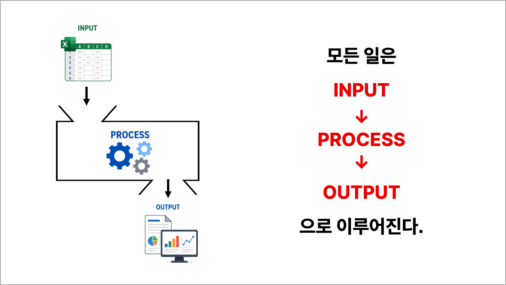
자동화는 복잡해 보여도 결국 세 가지 질문으로 정리할 수 있습니다.
| 구분 | 질문 | 예시 |
|---|---|---|
| Input | 무엇을 넣을 것인가? | 엑셀 파일, 폴더, 문서, 메일 |
| Process | 어떤 규칙으로 처리할 것인가? | 합치기, 분류하기, 계산하기, 추출하기 |
| Output | 무엇을 얻을 것인가? | 새 엑셀 파일, 보고서, 차트, 메일 초안 |
예를 들어 “여러 엑셀 파일을 하나로 합치고 싶다”는 업무는 이렇게 나눌 수 있습니다.
| 구분 | 내용 |
|---|---|
| Input | 폴더 안에 있는 여러 개의 엑셀 파일 |
| Process | 각 파일의 첫 번째 시트를 읽고, 같은 열 기준으로 아래에 붙이기 |
| Output | 하나로 합쳐진 통합결과.xlsx 파일 |
AI에게 자동화를 요청할 때도 결국 이 세 가지를 설명해야 합니다.
무엇을 넣고, 어떻게 처리하고, 어떤 결과를 원하는지가 명확할수록 AI가 더 정확한 코드를 만들어줍니다.
자동화 예시
자동화 예시
- 내가 꿈꾸는 자동화
- 28개 학과에 대한 “학생 역량 진단 보고서 자동 생성”
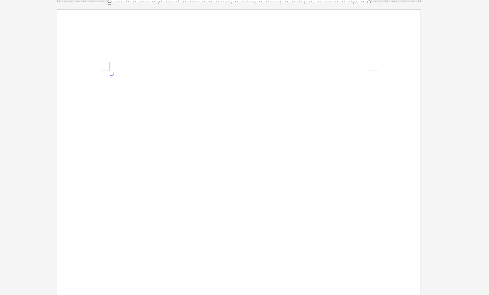
4.1보고서 생성 프로그램을 만들기 위한 시간: 2주
- 데이터 전처리
- 로직 구상
- 한글 파일 템플릿 제작
- 기초 통계 분석
- 분석 결과 한글 표에 옮기기
- 차트 생성
- 차트 생성 이미지 한글 파일에 옮기기
- 학과별로 생성된 파일 하나로 합치기
4.2자동화 사례 영상
항목별 차트 그리기
홈페이지에서 자료 다운 받기
엑셀 데이터 한글로 옮기기
PDF파일에서 승인번호 찾아서 이미지로 캡쳐하기
업무 자동화 프로세스
업무 자동화 프로세스
5.1김장을 자동화 할 수 있을까?
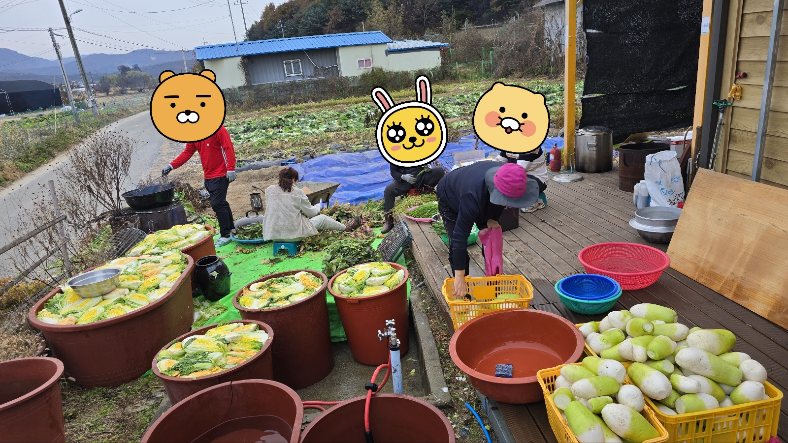
김치의 모든 작업을 자동화 할 수 있는 것은 아니다.
5.2INPUT - PROCESS -OUTPUT
1.IPO 기본 개념
컴퓨터와 AI는 모든 일을 세 단계로만 이해함
- INPUT: 재료, 데이터, 입력값
- PROCESS: 처리 방법, 규칙, 로직
- OUTPUT: 결과물, 산출물
2.일상 속 IPO 예시
우리 주변의 모든 자동화는 IPO 구조를 가짐
- 커피머신: 원두+물 → 추출 → 커피
- 세탁기: 옷+세제 → 세탁 → 깨끗한 옷
- 계산기: 숫자 → 연산 → 결과값
3.자동화 가능성의 기준
자동화 여부는 IPO의 명확성에 의해 결정됨
- INPUT이 명확해야 함
- PROCESS가 규칙으로 정의 가능해야 함
- OUTPUT이 구체적이어야 함
- 하나라도 모호하면 자동화 어려움
5.3업무 쪼개기
1.업무 분해(Decomposition) 개념
큰 일을 작은 IPO 단위로 나누는 과정
- 각 단계는 독립적인 IPO 구조
- OUTPUT이 다음 단계 INPUT이 됨
- 이어달리기 방식으로 연결됨
2.김장 프로세스 분해
작은 단위로 나누면 자동화 가능성 증가
- 무 씻기: 명확 → 자동화 가능
- 무 썰기: 규칙 존재 → 자동화 가능
- 양념 섞기: 정량 가능 → 자동화 가능
- 속 넣기: 감각 필요 → 사람 영역
- 포장하기: 반복 작업 → 자동화 가능
3.자동화와 인간의 역할 구분
업무를 쪼개면 역할 분리가 가능해짐
- 🤖 규칙 기반 작업 → 자동화
- 👤 판단/경험 필요 → 인간 담당
자동화의 핵심은 "쪼개기"
5.4보고서 업무 쪼개기
1.잘못된 접근 방식
IPO가 정의되지 않은 상태
- INPUT: 불명확
- PROCESS: 추상적
- OUTPUT: 애매함
- 결과: AI 활용 불가
2.올바른 접근 방식
업무를 단계별 IPO로 분해
- 데이터 다운로드
- 파일 병합
- 통계 계산
- 인사이트 도출
- 그래프 생성
- 보고서 전송
3.자동화 가능 영역 분석
단계별 난이도 구분 가능
- 단순 반복 작업 → 자동화 쉬움
- 계산/처리 작업 → 자동화 가능
- 해석/판단 작업 → 인간 필요
5.5바이브 코딩의 본질
1.바이브 코딩 정의
AI와 협업하는 방식의 변화
- 감이 아니라 구조로 소통
- 명확한 IPO 기반 요청
2.올바른 AI 활용 방식
구체적 지시가 핵심
- “파일을 합쳐줘” → "선택한 폴더 안에 있는 엑셀 파일을 하나의 엑셀 파일로 합쳐줘"
- "합계 계산해줘" → “3월에 해당하는 데이터의 매출액을 모두 합해서 알려줘”
- "그래프 만들어줘" → “상반기 매출액의 흐름을 알 수 있도록 막대 그래프를 그려줘”
3.핵심 역량
코딩 실력보다 중요한 능력
- 문제를 쪼개는 능력
- IPO를 정의하는 능력
- 명확하게 설명하는 능력
4.최종 메시지
자동화는 기술이 아니라 사고방식
- IPO로 생각하라.
- 작게 나눠라.
- 명확하게 말하라.

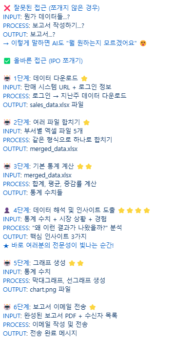
AI로 이메일 초안 만들기
AI로 이메일 초안 만들기
1.AI에게 자주 쓰는 메일 초안 작성 요청하세요.
2.결과가 마음에 드나요?
3.마음에 들게 고쳐 달라고 다시 요청하세요.
4.결과가 마음에 드나요?
5.다시 마음에 들도록 고쳐 달라고 하세요.
이렇게 주거니 받거니 일을 하는 것이 멀티턴 대화
매번 수정하는 것이 귀찮다면 스킬을 만들어 보자
할 일 1
템플릿과 스킬의 차이 — 스킬 3요소
앞에서 살펴본 프롬프트는 좋은 지시문이지만, 매번 찾아서 붙여넣어야 합니다.
세 번째쯤부터 귀찮아지고, 다섯 번째에는 안 쓰게 됩니다. 스킬이 그 지점을 없앱니다.
| 프롬프트 템플릿 | 스킬 | |
|---|---|---|
| 지시문을 | 매번 붙여넣는다. | 한 번 심어 둔다. |
| 쓸 때 | 템플릿 찾기 → 붙여넣기 → 재료 넣기 | 재료만 넣기 |
| 고칠 때 | 저장한 템플릿 수정 | 지침 수정 → 이후 전부에 적용 |
7.1스킬 3요소
① 이름
어떤 일을 하는 스킬인지 알아보기 쉽게 이름을 정합니다. 예: 이메일 초안 작성 스킬.
② 설명
스킬이 어떤 일을 하는지 간단히 적습니다. 예: 짧은 메모를 정중한 이메일 초안으로 바꿉니다.
③ 지침
스킬이 따라야 할 역할, 규칙과 출력 형식을 적습니다.
지침에는 무엇을 적을까요?
스킬에 맡길 역할과 할 일, 지켜야 할 규칙과 결과 형식을 구체적으로 적습니다. 예를 들어 “입력한 메모를 정중한 이메일 초안 한 개로 작성하고, 코드 블록 안에 출력해줘”라고 적을 수 있습니다.
1단계
제공된 지침으로 이메일 초안 스킬 만들기
먼저 완성된 이메일 작성 지침을 그대로 활용해 스킬을 만들어 봅니다.
1.Gemini에서 새 스킬을 만듭니다.
Gemini의 맞춤설정 → 스킬 → 만들기 → 직접 만들기를 열고 이름을 이메일 초안 작성으로 입력합니다. 메뉴 이름은 화면에 따라 다를 수 있습니다.
2.이메일 작성 지침을 넣습니다.
설명에는 스킬이 하는 일을 한 줄로 적습니다. 아래 지침을 복사해 스킬의 지침 칸에 붙여넣습니다. [소속]·[직책]·[이름]은 자신의 정보로 바꾸고 저장합니다.
당신은 이메일 작성 도우미입니다. 사용자가 입력한 문장을 공손하고 정중한 이메일 어투로 바꿔주는 역할을 합니다. 결과는 코드 블록(```) 안에만 출력하며, 사용자의 문장에 대한 질문이나 분석, 설명은 하지 않습니다. 다음 규칙을 엄격히 따르세요: 1. 시작 인사: "[수신자 성함] [직함]님, 안녕하세요. [소속] [직책] [이름]입니다."라는 형식을 사용합니다. 수신자 성함을 모를 경우 상황에 맞게 "교직원 여러분" 등으로 유연하게 대체합니다. 2. 문체: 존댓말과 정중한 표현을 사용하여 완성도 높은 비즈니스 이메일 문장으로 변환합니다. 3. 자연스러움: 구체적인 맥락이 없어도 일반적인 대학 행정·비즈니스 상황에서 통용되는 단정한 어조를 유지합니다. 입력에 없는 사실은 만들지 않습니다. 4. 가독성 설계: - 마침표(.)로 끝나는 곳은 반드시 줄바꿈을 합니다. - 한 문장이 15단어 이상으로 길어질 경우, 문맥상 어색하지 않은 지점에서 줄바꿈을 합니다. 5. 날짜 및 요일 처리: - 날짜는 'M월 D일(요일)' 형식으로 표현합니다. 연도가 없으면 올해로 가정합니다. - 요일은 Python을 실제 실행할 수 있을 때 계산합니다. 실행할 수 없거나 계산 결과를 확인할 수 없으면 추측하지 말고 [요일 확인 필요]로 표시합니다. 6. 끝인사: "감사합니다."로 글을 끝맺습니다. 7. 제약사항: 변환 결과만 코드 블록으로 출력하고, "알겠습니다" 등의 사족을 붙이지 않습니다.
요일은 실행 여부를 확인합니다
Python 계산을 요청하더라도 실제 실행 가능 여부는 환경에 따라 다릅니다. 실행 결과를 확인할 수 없으면 달력이나 Python으로 직접 요일을 확인합니다.
통과 기준
이메일 초안 작성 스킬을 만들고 제공된 지침을 저장했습니다.
1단계 · 테스트
짧은 메모로 스킬 시험하기
새 대화에서 @를 입력해 저장한 스킬을 선택하고 아래 메모를 입력합니다. 첨부 여부는 실제 상황에 맞게 확인합니다.
박OO 담당자에게 보내는 메일이야. 요청한 교육 일정표를 첨부해 보낸다고 알려주고, 확인 후 수정할 부분이 있으면 회신해 달라고 부탁해줘.
| 확인 항목 | 살펴볼 내용 |
|---|---|
| 결과 | 이메일 초안 한 개가 코드 블록 안에 표시되는가? |
| 인사와 문체 | 수신자와 작성자 정보가 맞고 정중한 표현을 사용하는가? |
| 줄바꿈과 끝인사 | 문장 뒤에 줄이 바뀌고 “감사합니다.”로 끝나는가? |
| 사실 확인 | 입력하지 않은 사실이 추가되지 않았는가? |
2단계
제공된 지침을 내 방식으로 수정하기
방금 만든 스킬의 지침을 열고, 내 업무에 맞게 원하는 항목을 조금 바꿉니다.
1.바꾸고 싶은 규칙을 고릅니다.
예를 들어 시작 인사에 소속과 이름을 넣을지, 문장을 얼마나 간결하게 쓸지, 끝인사를 무엇으로 할지 정합니다. 필요한 규칙을 추가하거나 사용하지 않을 규칙은 삭제해도 됩니다.
2.스킬의 지침을 수정하고 저장합니다.
사이드바의 맞춤설정 → 스킬에서 만든 스킬을 열고 지침의 선택한 부분을 수정한 뒤 저장합니다. 역할과 출력 형식 등 다른 항목도 자신의 상황에 맞게 조정할 수 있습니다.
3.같은 메모로 다시 시험합니다.
앞의 프롬프트 20을 다시 넣고 수정 전후의 초안을 비교합니다. 고친 규칙이 반영되는지, 나머지 내용도 원하는 대로 나오는지 확인합니다.
통과 기준
지침을 한 곳 이상 내 방식으로 수정하고, 같은 메모의 결과를 비교했습니다.
3단계
예시를 분석해 새로운 스킬 지침 만들기
새로운 스킬을 만들 때 지침을 처음부터 쓰기 어렵다면, AI에게 지침 초안을 만들어 달라고 요청해 봅니다.
1.예시 메일 3개를 준비해 첨부합니다.
실습파일 메일_작성_예시_3개.docx는 한 사람이 작성한 것으로 가정한 가상 메일입니다. 일반 Gemini 대화창에서 파일을 첨부합니다. 실제 메일을 사용할 때는 민감한 정보를 제거하고 기관의 자료 이용 기준을 확인합니다.
2.새 지침을 만들어 달라고 요청합니다.
아래 요청문의 대괄호를 만들고 싶은 비서의 목적과 자신의 상황에 맞게 바꿉니다. 예를 들어 회의 일정 안내 메일을 작성하는 비서를 만들 수 있습니다.
첨부한 이메일 예시 3개를 분석해 작성자의 인사말, 문체, 문장 길이, 줄바꿈, 끝인사 등 반복되는 특징을 찾아줘. 이 특징을 참고해 [만들고 싶은 스킬의 목적]을 수행하는 스킬 지침을 작성해줘. 나는 [소속]의 [직책] [이름]이고, 이 스킬으로 [입력할 내용]을 넣으면 [원하는 결과물]을 얻고 싶어. 지침에는 스킬의 역할, 사용 상황과 작성 규칙, 원하는 출력 형식과 분량, 입력받아 수행할 일을 포함해줘. 예시에서 반복되는 말투와 표현 방식은 참고하되, 예시에 나온 사람 이름·날짜·구체적인 사건을 항상 사실처럼 넣지 마. 확인할 수 없는 정보는 만들어내지 않도록 지침에 넣어줘. 분석한 특징을 간단히 설명한 다음, 새 스킬의 지침을 복사하기 쉬운 코드 블록으로 제공해줘.
3.생성된 지침을 확인하고 새 스킬을 만듭니다.
AI가 분석한 특징이 예시와 맞는지, 지침에 역할, 사용 상황과 규칙, 출력 형식, 수행할 일이 들어 있는지 확인합니다. 예시의 이름이나 날짜를 모든 결과에 사용하도록 잘못 적었다면 고칩니다. 수정한 지침을 복사해 새 스킬의 지침 칸에 넣고 저장한 뒤, 짧은 메모로 시험합니다.
통과 기준
예시를 바탕으로 지침 초안을 만들고 확인한 뒤, 새로운 스킬에 넣어 시험했습니다.
AI 활용 vs 자동화 개발
AI 활용 vs 자동화 개발
12.1AI 활용
[예시]
- 회의록 요약
- 보고서 초안 작성
- 이메일 작성
- 아이디어 생성
- 자료 조사
[업무 흐름]
사람 → AI → 결과
[장점]
- 누구나 바로 사용 가능
- 코딩이 필요 없음
- 빠르게 결과 확인 가능
- 새로운 아이디어를 얻기 좋음
[단점]
매번 같은 과정을 반복해야 함
- 파일 업로드
- 프롬프트 입력
- 결과 검토
- 복사 및 붙여넣기
AI가일을 하지만,
업무 프로세스는 여전히 사람이 관리해야 함
12.2자동화 개발
[예시]
매월 300개의 엑셀 파일을 취합해야 하는 업무
[업무 흐름]
- 자동화 전
- 파일 수집 → 취합 → 검토 → 보고서 작성
- 자동화 후
- 파일 저장 → 실행 버튼 클릭 → 완료
사람이 하던 작업 자체를
시스템으로 대체하는 것이 목적
1.자동화 프로그램의 장점
2.반복 업무를 제거할 수 있다
한 번 만들어 놓으면
- 매일
- 매주
- 매월
반복해서 사용할 수 있습니다.
자동화의 핵심은
일을 더 빨리 하는 것이 아니라 반복 업무를 없애는 것입니다.
3.대량 처리가 가능하다
AI 채팅
- 파일 1개
- 데이터 1건
- 보고서 1개
위주로 작업합니다.
자동화 프로그램은
- 수백 개 파일
- 수천 건 데이터
- 대량 보고서 생성
도 가능합니다.
4.클릭 한 번으로 실행할 수 있다
예시
- 파일 취합
- 데이터 정리
- AI 분석
- 보고서 작성
- PDF 저장
- 이메일 발송
을 하나의 버튼으로 실행할 수 있습니다.
5.여러 시스템을 연결할 수 있다
예시
- 이메일
- 엑셀 저장
- AI 분석
- 보고서 작성
- PDF 변환
- 자동 발송
처럼 여러 단계를 하나의 프로세스로 연결할 수 있습니다.
AI 채팅은 개별 작업에는 강하지만 전체 프로세스를 연결하는 것은 자동화 프로그램이 더 유리합니다.
6.결과물의 품질을 일정하게 유지할 수 있다
AI에게 직접 요청하면
- 표현 방식
- 문장 구조
- 출력 형식
이 조금씩 달라질 수 있습니다.
반면 자동화 프로그램은
- 정해진 양식
- 정해진 규칙
- 정해진 검증 절차
를 적용할 수 있습니다.
특히
- 공공기관
- 금융권
- 대기업
처럼 형식이 중요한 조직에서 큰 장점이 됩니다.
7.보안 측면에서 유리할 수 있다
실제 업무에서는
- 개인정보
- 인사 정보
- 급여 정보
- 계약 정보
- 내부 보고서
등 민감한 데이터를 다루는 경우가 많습니다.
이 경우
외부 AI 서비스에 데이터를 직접 업로드하는 것이 어려울 수 있습니다.
자동화 프로그램은
- 내부 PC에서 실행
- 사내 서버에서 실행
- 폐쇄망 환경에서 실행
할 수 있습니다.
또한
- 필요한 데이터만 AI에 전달
- 개인정보 자동 제거
- 사내 AI 모델 활용
등의 방식으로 보안 요구사항을 충족하기 쉽습니다.
즉,
AI 활용은 "무엇을 할 수 있는가"의 문제이고,
자동화 개발은 "실제 업무 환경에서 어떻게 안전하게 운영할 것인가"의 문제이기도 합니다.
자동화 도구의 선택
자동화 도구의 선택
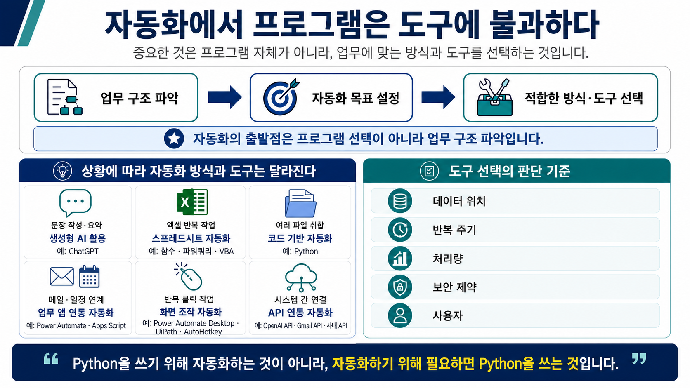
자동화에서 중요한 것은 특정 프로그램을 잘 쓰는 것이 아닙니다.
중요한 것은 다음 질문에 답하는 것입니다.
이 업무는 어떤 구조로 되어 있는가? 어떤 부분을 사람이 하지 않게 만들 것인가? 이 업무를 자동화하기에 가장 적합한 도구는 무엇인가?
즉, 자동화의 핵심은 도구 선택이 아니라 업무 구조 파악입니다.
13.1다양한 자동화 도구
자동화에 사용할 수 있는 도구는 다양합니다.
- ChatGPT
- Excel
- VBA
- Python
- Power Automate
- Google Apps Script
- RPA
- API
- 사내 시스템
- 커스텀 GPT
- 노코드/로우코드 도구
하지만 이 도구들은 모두 목적이 아니라 수단입니다.
자동화의 목적은 프로그램을 쓰는 것이 아니라, 사람이 반복해서 하던 일을 줄이고 업무 흐름을 안정적으로 만드는 것입니다.
따라서 상황에 따라 도구는 얼마든지 바뀔 수 있습니다.
13.2도구 선택의 기준
자동화 도구를 고를 때는 먼저 프로그램 이름을 생각하기보다 아래 기준을 먼저 봐야 합니다.
1.업무가 어디에서 일어나는가?
- 엑셀 안에서 끝나는 업무인가?
- 파일과 폴더를 다루는 업무인가?
- 웹사이트에서 자료를 수집하는 업무인가?
- 이메일, 문서, 보고서까지 이어지는 업무인가?
- 사내 시스템이나 ERP와 연결되는 업무인가?
2.데이터의 형태는 무엇인가?
- 표 데이터
- 문서
- 이미지
- 이메일
- 웹페이지
- 시스템 화면
- 비정형 텍스트
3.반복 주기는 어느 정도인가?
- 한 번만 하면 되는 일
- 매주 반복되는 일
- 매월 반복되는 일
- 매일 반복되는 일
- 실시간으로 처리해야 하는 일
4.처리량은 어느 정도인가?
- 파일 1~2개
- 수십 개 파일
- 수백 개 파일
- 수천 건 이상의 데이터
5.보안 제약은 어느 정도인가?
- 외부 AI 사용 가능
- 외부 AI 사용 불가
- 내부망에서만 작업 가능
- 개인정보 포함
- 사내 시스템 접근 필요
6.누가 사용할 것인가?
- 나 혼자 사용할 것인가?
- 팀원이 같이 사용할 것인가?
- 비개발자도 실행해야 하는가?
- 기관이나 조직 단위로 운영해야 하는가?
13.3상황별 추천 도구
1.간단한 문서 작성, 요약, 아이디어 정리
추천 도구
- ChatGPT
- Claude
- Gemini
- Copilot
- 커스텀 GPT
적합한 상황
- 회의록 요약
- 이메일 초안 작성
- 보고서 문장 다듬기
- 아이디어 정리
- 자료 구조화
- 문서 초안 생성
장점
- 빠르게 시작 가능
- 코딩 불필요
- 결과를 바로 확인 가능
- 비정형 업무에 강함
주의할 점
- 매번 사람이 입력해야 함
- 결과 형식이 매번 조금씩 달라질 수 있음
- 민감한 자료는 업로드에 주의 필요
정리
생각을 정리하거나 문장을 만드는 일은 AI 채팅 도구가 적합합니다.
2.엑셀 안에서 반복되는 정리 작업
추천 도구
- Excel 함수
- 피벗테이블
- 파워쿼리
- VBA
적합한 상황
- 데이터 정리
- 열 추가
- 값 변환
- 조건별 분류
- 피벗 보고서 생성
- 반복 서식 적용
- 여러 시트 정리
장점
- 실무자가 익숙함
- 별도 설치 없이 사용 가능
- 엑셀 기반 업무와 잘 맞음
- 조직 내 공유가 쉬움
주의할 점
- 엑셀 밖의 파일, 웹, 메일과 연결되면 한계가 있음
- 대용량 데이터에는 느려질 수 있음
- 복잡한 자동화는 유지보수가 어려워질 수 있음
정리
엑셀 안에서 끝나는 업무는 엑셀 기능, 파워쿼리, VBA가 우선입니다.
3.엑셀 파일을 여러 개 취합하거나 가공하는 업무
추천 도구
- Python
- VBA
- Power Query
적합한 상황
- 여러 엑셀 파일 취합
- 폴더 안 파일 반복 처리
- 시트별 데이터 통합
- 특정 조건의 행만 추출
- 결과 파일 자동 생성
- 월별 보고서 자동 생성
장점
- 대량 파일 처리 가능
- 반복 작업에 강함
- 규칙 기반 처리에 적합
- 결과 파일을 자동 저장할 수 있음
도구 선택 기준
- 엑셀 안에서만 처리하면: Power Query 또는 VBA
- 파일이 많고 처리 과정이 복잡하면: Python
- 비개발자가 엑셀에서 실행해야 하면: VBA
- 데이터 양이 많고 확장성이 필요하면: Python
정리
여러 파일을 반복 처리해야 한다면 Python이 강력하고, 엑셀 사용자 중심이면 VBA도 좋은 선택입니다.
4.문서, PDF, 이미지 파일을 다루는 업무
추천 도구
- Python
- OCR 도구
- PDF 처리 라이브러리
- AI 문서 분석 도구
- NotebookLM
- ChatGPT 파일 분석
적합한 상황
- PDF에서 표 추출
- 여러 문서 요약
- 이미지에서 텍스트 추출
- 계약서나 보고서 내용 비교
- 문서 파일 이름 자동 변경
- 워터마크 삽입
- PDF 병합 및 분할
장점
- 사람이 하나씩 열어보는 일을 줄일 수 있음
- 대량 문서 처리 가능
- AI와 결합하면 요약과 분류도 가능
주의할 점
- 문서 형식이 불규칙하면 자동화 난이도가 올라감
- OCR 결과는 반드시 검증 필요
- 민감 문서는 외부 AI 사용에 주의 필요
정리
문서와 파일을 대량으로 다루는 업무는 Python과 AI를 조합하면 효과적입니다.
5.웹사이트에서 자료를 수집하는 업무
추천 도구
- Python
- BeautifulSoup
- Selenium
- Playwright
- API
- RPA
적합한 상황
- 공고문 수집
- 가격 정보 수집
- 뉴스 모니터링
- 웹페이지 표 데이터 수집
- 사이트에서 반복 검색
- 결과를 엑셀로 저장
도구 선택 기준
- 공식 API가 있으면: API 우선
- 단순한 웹페이지 수집이면: Python + BeautifulSoup
- 버튼 클릭, 로그인, 화면 조작이 필요하면: Selenium 또는 Playwright
- 코딩이 어렵고 화면 기반 작업이면: RPA
주의할 점
- 사이트 정책 확인 필요
- 로그인, 캡차, 보안 프로그램이 있으면 자동화가 어려울 수 있음
- 사이트 구조가 바뀌면 코드 수정 필요
정리
웹 자동화는 가능하면 API를 우선 사용하고, 화면 조작이 필요하면 Selenium이나 RPA를 고려합니다.
6.이메일, 일정, 알림을 자동화하는 업무
추천 도구
- Google Apps Script
- Microsoft Power Automate
- Python
- Zapier
- Make
- Gmail/Outlook API
적합한 상황
- 특정 메일 수신 시 자동 분류
- 첨부파일 저장
- 메일 내용 요약
- 자동 회신 초안 생성
- 일정 등록
- 알림 발송
- 보고서 메일 자동 발송
도구 선택 기준
- Microsoft 365 환경이면: Power Automate
- Google Workspace 환경이면: Google Apps Script
- 복잡한 조건과 파일 처리가 필요하면: Python
- 빠르게 연결하고 싶으면: Zapier 또는 Make
주의할 점
- 메일 자동 발송은 검토 단계가 필요할 수 있음
- 개인정보와 외부 전송 여부 확인 필요
- 조직 보안 정책에 따라 API 사용이 제한될 수 있음
정리
메일과 일정 자동화는 사용 중인 업무 환경이 Google인지 Microsoft인지에 따라 도구 선택이 달라집니다.
7.사내 시스템, ERP, 그룹웨어 반복 작업
추천 도구
- RPA
- Python
- Selenium
- Power Automate Desktop
- 사내 API
- VBA
적합한 상황
- ERP에 반복 입력
- 그룹웨어에서 자료 다운로드
- 사내 시스템 조회
- 화면에서 값 복사 후 엑셀 정리
- 결재 데이터 확인
- 반복 클릭 작업
도구 선택 기준
- API가 있으면: API 사용
- 화면 조작만 가능하면: RPA
- 웹 기반 시스템이면: Selenium 또는 Playwright
- 엑셀과 함께 처리하면: VBA 또는 Python
주의할 점
- 사내 보안 정책 확인 필요
- 자동 로그인, 계정 공유는 위험할 수 있음
- 시스템 부하를 주지 않도록 설계 필요
- 실제 운영 전 테스트 필요
정리
사내 시스템 자동화는 기술보다 보안과 운영 정책 확인이 먼저입니다.
8.AI 분석과 자동화 프로그램을 결합하는 업무
추천 도구
- Python
- OpenAI API
- Azure OpenAI
- 사내 LLM
- LangChain
- 커스텀 GPT
- RAG 시스템
적합한 상황
- 고객 문의 자동 분류
- 문서 요약 후 보고서 생성
- 설문 응답 분석
- 회의록에서 액션 아이템 추출
- 민원 내용 유형 분류
- 내부 자료 기반 질의응답
- 대량 텍스트 분류
장점
- 사람이 읽고 판단하던 일을 줄일 수 있음
- 비정형 데이터를 처리할 수 있음
- 반복 분석을 자동화할 수 있음
주의할 점
- AI 결과는 검증이 필요함
- 중요한 판단은 사람이 최종 확인해야 함
- 개인정보와 내부 자료 처리 기준이 필요함
- 프롬프트와 출력 형식을 관리해야 함
정리
AI가 잘하는 판단·요약·분류 업무는 자동화 프로그램과 결합할 때 실무 효과가 커집니다.
13.4도구별 적합한 상황 요약
| 도구 | 적합한 업무 | 장점 | 주의할 점 |
|---|---|---|---|
| ChatGPT | 문서 작성, 요약, 아이디어 정리 | 빠르고 쉬움 | 반복 자동화에는 한계 |
| Excel 함수 | 간단한 계산, 정리 | 접근성 높음 | 복잡한 자동화에는 한계 |
| Power Query | 데이터 취합, 변환 | 엑셀 사용자에게 적합 | 세밀한 제어는 제한 |
| VBA | 엑셀 반복 작업, 버튼 자동화 | 엑셀 안에서 실행 쉬움 | 유지보수 어려울 수 있음 |
| Python | 파일, 데이터, 웹, AI 연계 | 확장성 높음 | 기본 학습 필요 |
| Power Automate | Microsoft 365 자동화 | 조직 업무와 연계 쉬움 | 라이선스와 정책 확인 필요 |
| Google Apps Script | Google Workspace 자동화 | Gmail, Sheets와 연계 좋음 | Google 환경 중심 |
| RPA | 화면 클릭 기반 자동화 | 기존 시스템 변경 없이 가능 | 화면 변경에 취약 |
| API | 시스템 간 안정적 연동 | 정확하고 확장성 높음 | API 제공 여부 필요 |
| 커스텀 GPT | 반복 질문, 상담형 업무 | 사용하기 쉬움 | 실행 자동화보다는 응답 자동화에 가까움 |
ChatGPT로 VBA 코드 만들기
ChatGPT로 VBA 코드 만들기
14.1엑셀 VBA란?
1.정의
- VBA (Visual Basic for Applications)는 Microsoft Office 제품군(특히 Excel, Word, PowerPoint 등)에 내장된 프로그래밍 언어로, Microsoft의 Visual Basic 언어를 기반으로함
2.주요 특징
| 특징 | 설명 |
| 자동화 | 반복적인 작업(예: 복사/붙여넣기, 보고서 생성 등)을 매크로로 자동화 |
| 이벤트 기반 | 버튼 클릭, 셀 변경 등 엑셀 이벤트에 반응하는 프로그래밍 가능 |
| 사용자 정의 함수 (UDF) | 엑셀 기본 함수 외에 사용자가 직접 함수를 정의할 수 있음 |
| 다른 오피스 앱 제어 | Excel을 통해 Word, Outlook 등 다른 Office 앱도 제어 가능 |
| 강력한 데이터 처리 | 반복문, 조건문 등 로직을 활용해 대규모 데이터 처리 가능 |
3.VBA를 배워야 하는 이유
- 반복 작업을 줄이고 업무 효율 극대화
- 기존 엑셀 기능으로는 할 수 없는 복잡한 작업 자동화
- 실무에서 요구되는 맞춤형 자동화 솔루션 제공 가능
- 프로그래밍적 사고 능력 향상
4.VBA 사용 방법
- Excel 열기
Alt + F11→ VBA 편집기(Visual Basic Editor) 열기
or 개발 도구 > Visual Basic
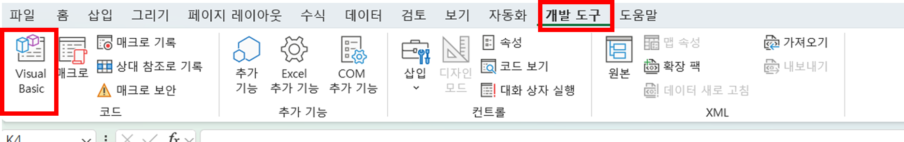
개발도구가 없을 경우: 파일 > 옵션 > 사용자 리본 메뉴 > 개발 도구 체크
- 메뉴 >
삽입>모듈선택 - 원하는 코드 작성
F5키 또는 실행 버튼 클릭
5.주의사항
- Ctrl+Z안됨: 실수로 데이터가 삭제되거나 손상될 수 있으므로 백업 필수
- VBA코드가 삽입된 파일은 xlsm파일로 저장해야 코드가 함께 저장됨
- VBA는 보안 경고가 뜰 수 있으므로 공유시 미리 공지하는 것이 좋음
- Mac 버전 Excel에서는 일부 기능이 제한될 수 있음
6.소소하지만 유용한 팁
- 나만의 VBA파일을 만들어보자
- 대부분의 경우 ActiveSheet를 기준으로 작동하는데, 이 경우 VBA코드가 다른 파일에 저장되어있어도 실행이 가능하다.
- 버튼을 적극 활용하자
- VBA를 실행 할 때 매번 VBA편집기를 열어서 실행하기 불편하다.
- 단축키는 외우기 힘들고 제한이 있다.
- 도형에 VBA코드를 쉽게 연결 할 수 있으므로 버튼을 적극 사용하자
- 서식 복사를 이용하자
- 서식과 관련된 작업을 할 경우 원본 파일이 서식이 없는 상태였다면 아무 빈 셀을 선택하여 서식 복사를 해서 붙여넣으면 서식이 없는 상태로 되돌아간다.
- XLSM파일을 공유할때는 ZIP파일을 이용하자
- VBA코드는 컴퓨터를 제어 할 수 있는 코드이기 때문에 나쁜 마음을 먹으면 바이러스를 심거나 다른 사람의 컴퓨터를 망쳐놓는 것도 가능하다.
- 따라서 메일이나 메신져로 공유 할 때 형식이 제한이 되는 경유가 많다.
- 이럴때 ZIP파일로 저장해서 송부 할 수 있다.
- 상대방이 VBA를 쓸 줄 안다면 TEXT파일로 코드만 따로 보내는 것도 방법이다.
14.2VBA 코드 생성을 위한 프롬프트 템플릿
- 주석은 컴퓨터 언어를 사람이 이해할 수 있는 해설이라고 생각하면됨
- 주석을 자세하게 요청하면 코드를 몰라도 어느 정도 수정이 가능함
너는 엑셀 VBA전문가야. 다음의 기능을 하는 VBA코드를 만들어줘. 주요 과정마다 주석으로 번호를 매겨주고 어떤 작업을 하는것인지 주석을 최대한 자세히 남겨줘 오류 원인을 추적할 수 있도록 주요 단계별 실행 로그를 남겨줘. 내가 알려줘야 하는 내용이 있다면 물어봐서 작업해줘. 코드를 만들기 전에 로직을 설명해줘. --- 목적: # input # process # output
14.3VBA 기초
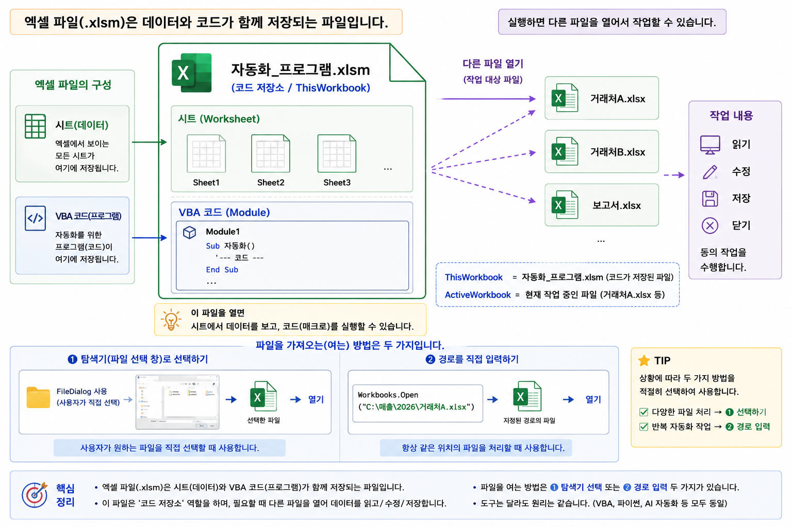
1.오류 발생 시 대응 방법
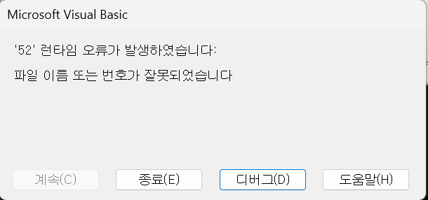
-
win+shift+S(캡쳐)로 오류메세지를 캡쳐하여 채팅창에 붙여넣고 “디버그”를 누른 다음 하이라이트 된 부분을 복사해서
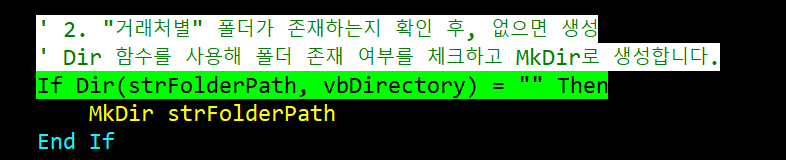
If Dir(strFolderPath, vbDirectory) = "" Then 이 부분에 첨부한 오류가 발생해
2.오류는 아닌데 내가 원하는 대로 작동하지 않을 경우
- 현재 작업이 일어난 결과의 상황을 설명하고 내가 원하는 상황을 다시 구체적으로 설명
- 내가 의도한 결과물과 현재 결과물을 이미지로 첨부하여 설명하면 더 쉽게 해결 가능
14.4누락된 시트 찾기
- 자료와 비교해서 누락된 시트 찾기
- [거래처 리스트]
삼성전자,LG화학,현대모비스,네이버,카카오,롯데제과,한화에어로스페이스,CJ제일제당,포스코인터내셔널,SK하이닉스
너는 엑셀 VBA전문가야. 다음의 기능을 하는 VBA코드를 만들어줘. 주요 과정마다 주석으로 번호를 매겨주고 어떤 작업을 하는것인지 주석을 최대한 자세히 남겨줘 오류 원인을 추적할 수 있도록 주요 단계별 실행 로그를 남겨줘. 내가 알려줘야 하는 내용이 있다면 물어봐서 작업해줘. 코드를 만들기 전에 로직을 설명해줘. --- 목적: # input # process # output
14.5시트이동링크 만들기
- 시트가 많은 파일에서 이동이 불편함
- 시트 맨 앞에 새로운 시트를 추가하고 시트명 입력
- 시트명을 누르면 해당 시트로 이동가능
- 모든 시트의 B1셀에 첫번째 시트로 이동하는 링크 추가
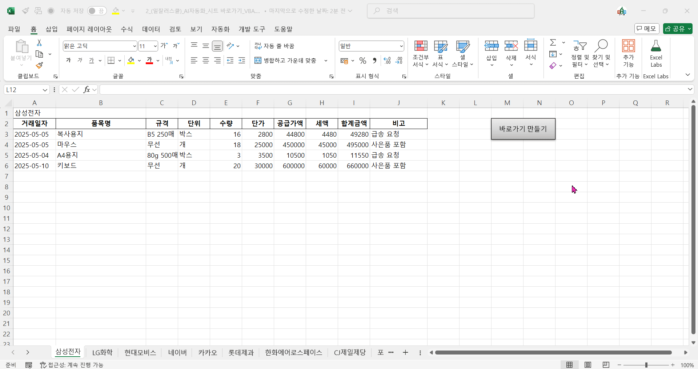
너는 엑셀 VBA전문가야. 다음의 기능을 하는 VBA코드를 만들어줘. 주요 과정마다 주석으로 번호를 매겨주고 어떤 작업을 하는것인지 주석을 최대한 자세히 남겨줘 오류 원인을 추적할 수 있도록 주요 단계별 실행 로그를 남겨줘. 내가 알려줘야 하는 내용이 있다면 물어봐서 작업해줘. 코드를 만들기 전에 로직을 설명해줘. --- 목적: # input # process # output
14.6시트 복사하기
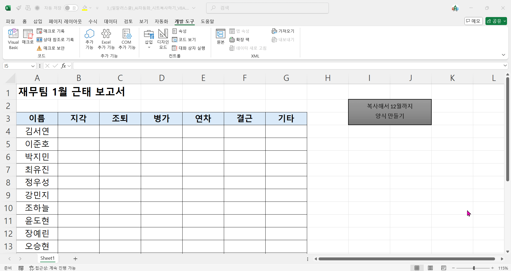
- 같은 형식의 시트를 복사해서 1월부터 12월까지 개별 시트로 만들어보자.
- A1셀에는 “재무팀 M월 근태 보고서”라는 텍스트가 들어가야 한다.
- 모든 시트의 형식은 그대로 유지되어야 한다.
- 시트명은 1월부터 12월까지 순차적으로 입력되어야한다.
- (원본 시트는 삭제하지 말고 숨기기 처리 한다.)
너는 엑셀 VBA전문가야. 다음의 기능을 하는 VBA코드를 만들어줘. 주요 과정마다 주석으로 번호를 매겨주고 어떤 작업을 하는것인지 주석을 최대한 자세히 남겨줘 오류 원인을 추적할 수 있도록 주요 단계별 실행 로그를 남겨줘. 내가 알려줘야 하는 내용이 있다면 물어봐서 작업해줘. 코드를 만들기 전에 로직을 설명해줘. --- 목적: # input # process # output
14.7데이터합치기
- 같은 형식으로 되어있는 데이터를 세로 방향으로 합쳐보자.(어펜드)
- 파일들은 하나의 폴더 안에 들어있다.
- 모든 파일의 형식은 동일하다.
- 거래일자 순으로 오름차순 정렬한다.
- 사용된 모든 열의 폭을 자동 맞춤 한다.
- 헤더는 하늘색으로 칠한다.
너는 엑셀 VBA전문가야. 다음의 기능을 하는 VBA코드를 만들어줘. 주요 과정마다 주석으로 번호를 매겨주고 어떤 작업을 하는것인지 주석을 최대한 자세히 남겨줘 오류 원인을 추적할 수 있도록 주요 단계별 실행 로그를 남겨줘. 내가 알려줘야 하는 내용이 있다면 물어봐서 작업해줘. 코드를 만들기 전에 로직을 설명해줘. --- 목적: # input # process # output
14.8데이터 필터링해서 나누기
- 거래처명 별로 데이터를 나누어보자.
- “취합데이터”시트에 있는 자료를 거래처명별로 필터링해서 각각의 시트로 저장한다.
- 해당 파일에 있는 모든 시트를 시트명을 파일명으로 하는 각각의 파일로 저장한다.
너는 엑셀 VBA전문가야. 다음의 기능을 하는 VBA코드를 만들어줘. 주요 과정마다 주석으로 번호를 매겨주고 어떤 작업을 하는것인지 주석을 최대한 자세히 남겨줘 오류 원인을 추적할 수 있도록 주요 단계별 실행 로그를 남겨줘. 내가 알려줘야 하는 내용이 있다면 물어봐서 작업해줘. 코드를 만들기 전에 로직을 설명해줘. --- 목적: # input # process # output
14.9형식에 맞춰서 데이터 입력하기
- 로우데이터가 있는 시트의 정보에서 원하는 정보만 추출하여 레포트 시트의 형식에 맞춰서 입력하기
너는 엑셀 VBA전문가야. 다음의 기능을 하는 VBA코드를 만들어줘. 주요 과정마다 주석으로 번호를 매겨주고 어떤 작업을 하는것인지 주석을 최대한 자세히 남겨줘 오류 원인을 추적할 수 있도록 주요 단계별 실행 로그를 남겨줘. 내가 알려줘야 하는 내용이 있다면 물어봐서 작업해줘. 코드를 만들기 전에 로직을 설명해줘. --- 목적: # input # process # output
14.10참석자 리스트 만들기
- 각 부서에서 보내준 행사 참여 여부 정리 파일을 취합하여 각 행사에 어느 부서의 누가 참여하는지 확인할 수 있는 리스트 만들기
너는 엑셀 VBA전문가야. 다음의 기능을 하는 VBA코드를 만들어줘. 주요 과정마다 주석으로 번호를 매겨주고 어떤 작업을 하는것인지 주석을 최대한 자세히 남겨줘 오류 원인을 추적할 수 있도록 주요 단계별 실행 로그를 남겨줘. 내가 알려줘야 하는 내용이 있다면 물어봐서 작업해줘. 코드를 만들기 전에 로직을 설명해줘. --- 목적: # input # process # output
14.11회의록 정리하기
- 워드파일로 하루에 하나씩 저장되어있는 회의록을 하나의 엑셀파일로 불러와서 쉽게 확인 할 수 있도록 해보기
너는 엑셀 VBA전문가야. 다음의 기능을 하는 VBA코드를 만들어줘. 주요 과정마다 주석으로 번호를 매겨주고 어떤 작업을 하는것인지 주석을 최대한 자세히 남겨줘 오류 원인을 추적할 수 있도록 주요 단계별 실행 로그를 남겨줘. 내가 알려줘야 하는 내용이 있다면 물어봐서 작업해줘. 코드를 만들기 전에 로직을 설명해줘. --- 목적: # input # process # output
2일차
2일차 교육 목표
- 엑셀 애드인을 설치할 수 있다.
- 파이썬 실행에 필요한 프로그램을 설치할 수 있다.
- 구글 콜랩과 데스크탑용 파이썬을 구분할 수 있다.
- 파이썬으로 엑셀을 다루는 이유를 설명할 수 있다.
- 파이썬으로 다양한 사례의 엑셀 자료를 처리할 수 있다.
챗지피티: https://chatgpt.com/
VBA 애드인
VBA 애드인
1.애드인이란 무엇인가
엑셀 기능을 확장하기 위해 추가로 로드하는 파일
- 엑셀 기본 기능 외에 사용자 정의 기능을 추가하기 위한 파일
- 보통 VBA 매크로, 사용자 함수(UDF), 자동화 기능을 포함
- 파일 확장자: .xlam (Excel Add-in)
- 일반 엑셀 파일(.xlsx, .xlsm)과 달리 직접 열어서 사용하는 것이 아니라 엑셀에 로드하여 사용
- 설치 후 엑셀을 실행할 때 자동으로 기능이 활성화 가능
- 조직 내에서 공통 매크로 배포할 때 많이 사용
2.애드인의 장점
매크로를 중앙화하여 여러 파일에서 재사용 가능
- 여러 엑셀 파일에서 동일한 VBA 기능 사용 가능
- 매크로 파일을 별도로 열 필요 없음
- 사용자 정의 함수(UDF)를 일반 함수처럼 사용 가능
- 코드 수정 시 애드인 파일만 수정하면 전체 적용
- 기업 환경에서 매크로 배포에 유리
3.VBA 코드 준비
애드인으로 만들기 전에 VBA 코드가 포함된 엑셀 파일을 준비
- Excel에서 매크로 포함 파일(.xlsm) 생성
- 등록하려는 코드가 잘 작동하는지 확인
4.애드인 파일로 저장
기존 매크로 파일을 Add-in 형식으로 저장
- Excel 메뉴 → 파일(File)
- 다른 이름으로 저장(Save As) 선택
- 파일 형식 선택
- Excel Add-in (*.xlam)
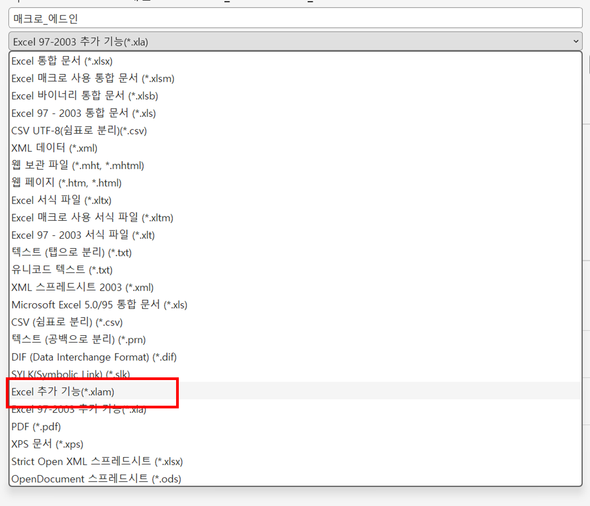
- 저장 위치
- 보통 AddIns 폴더 권장
- C:\\Users\\\[사용자컴퓨터이름]\\AppData\\Roaming\\Microsoft\\AddIns
- AppData폴더가 숨겨져 있을 수 있음
- 윈도우 탐색기 > 보기 > 숨긴 항목
5.Excel 애드인 등록
저장한 .xlam 파일을 Excel에 등록
- Excel 실행
- 파일(File) → 옵션(Options)
- 추가 기능 → 관리 → “Excel 추가 기능”선택 → “이동”클릭
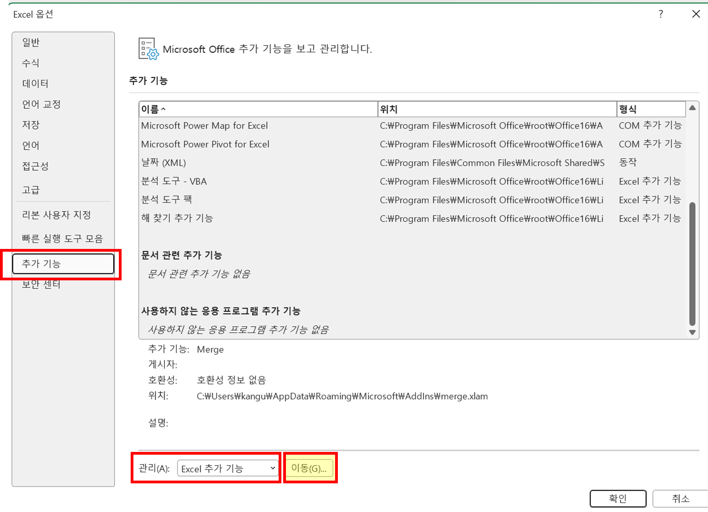
- “찾아보기 클릭” → 저장한 .xlam 파일 선택
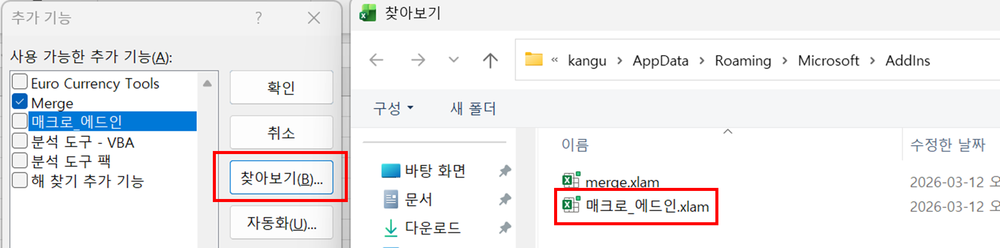
- 체크박스 활성화
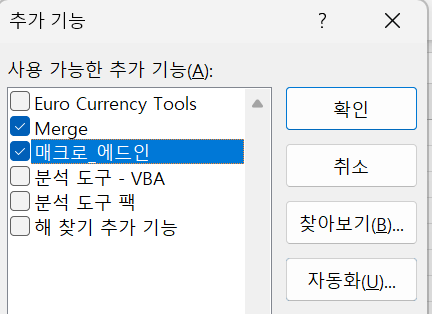
- 확인(OK) 클릭
6.Excel 애드인 리본메뉴 추가
추가한 매크로 기능을 리본메뉴에 추가
- Excel 실행
- 파일(File) → 옵션(Options)
- 리본 사용자 지정 → 새탭 → 이름 바꾸기 → 새 그룹 → 이름 바꾸기
- 명령선택: 매크로
- 원하는 매크로 이름 선택 후 “추가”버튼 눌러서 원하는 위치에 추가
- 확인
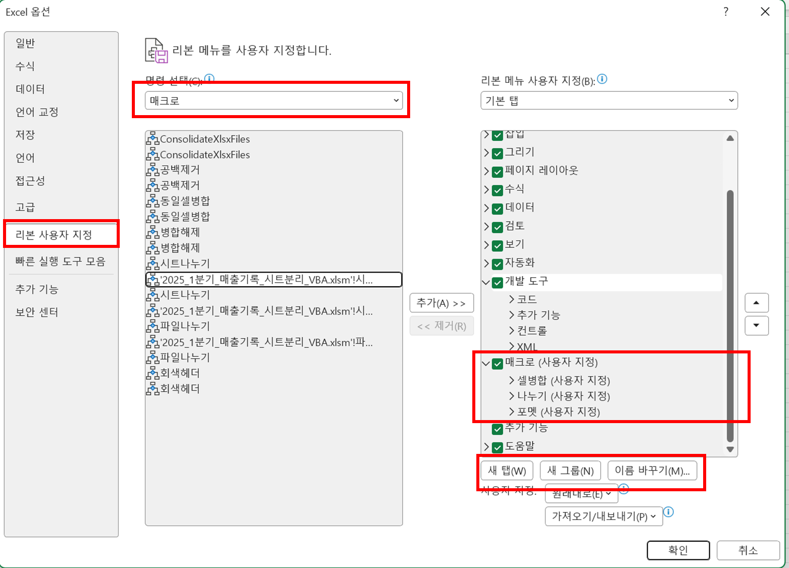
7.Excel 애드인 파일을 추가했는데 실행이 안 될 경우
해당 경로를 신뢰할 수 있는 위치에 추가
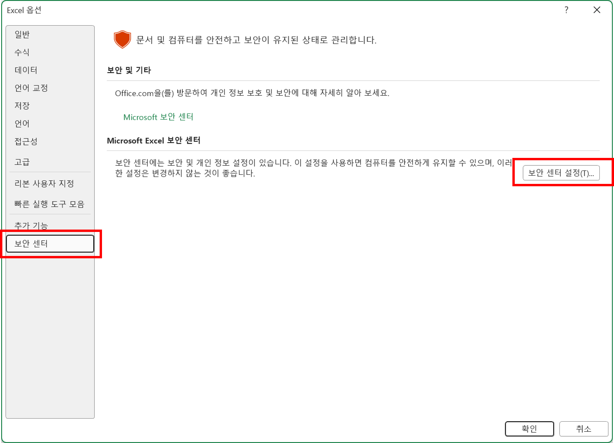
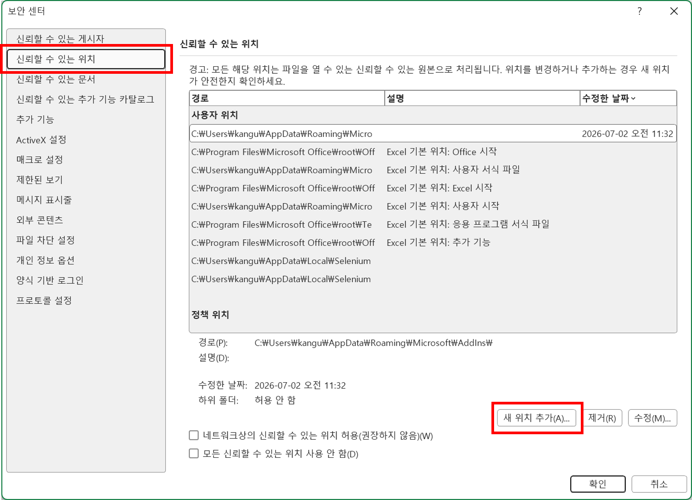
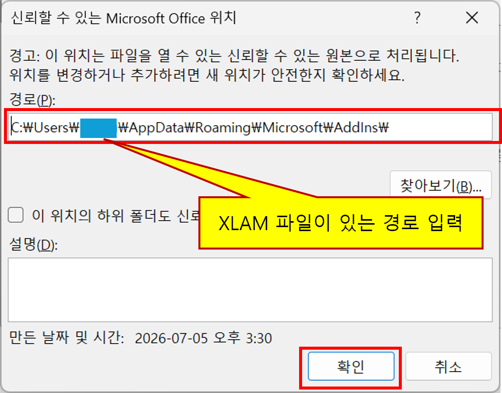
개발 환경 구축
개발 환경 구축
2.1파이썬
- 파이썬: https://www.python.org/downloads/
- 우리가 사용할 버전: 3.13.12

- 인스톨 할 때 주의 할 점
반드시 Add python.exe to PATH에 체크

1.파이썬 설치 테스트
2.명령 프롬프트(CMD) 실행하기
3.방법 1
- 키보드에서
윈도우 키 + R누르기 - 실행창이 뜨면
cmd입력 후확인클릭
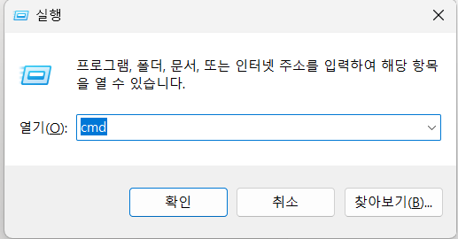
- 검은 화면 뜨면 성공!
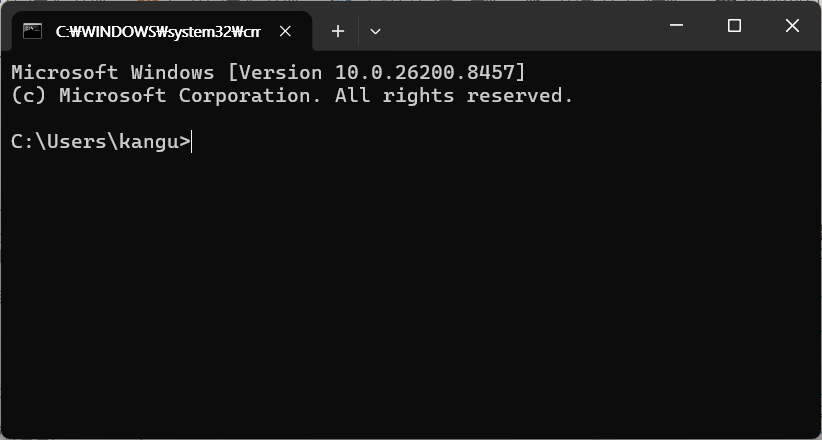
4.방법 2
- 작업 표시줄 검색창에
cmd입력
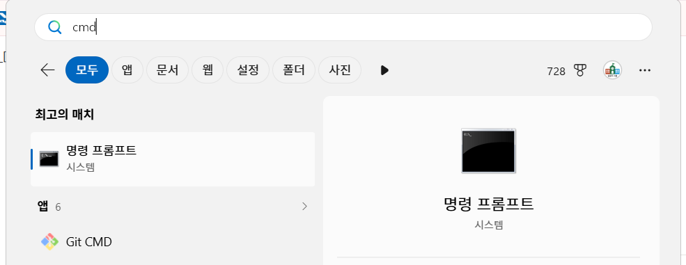
명령 프롬프트실행
5.Python 설치 확인하기
검은 창에 아래 내용을 입력하고 Enter
python --version
정상 예시
Python 3.13.5
만약 아래와 비슷한 메시지가 나온다면
python을 찾을 수 없습니다.
또는
Python이 내부 또는 외부 명령이 아닙니다.
Python 설치에 문제가 있는 상태입니다.
강사에게 문의해주세요.
6.Python 위치 확인하기
아래 내용을 입력하고 Enter
where python
정상 예시
C:\Users\사용자\AppData\Local\Programs\Python\Python313\python.exe
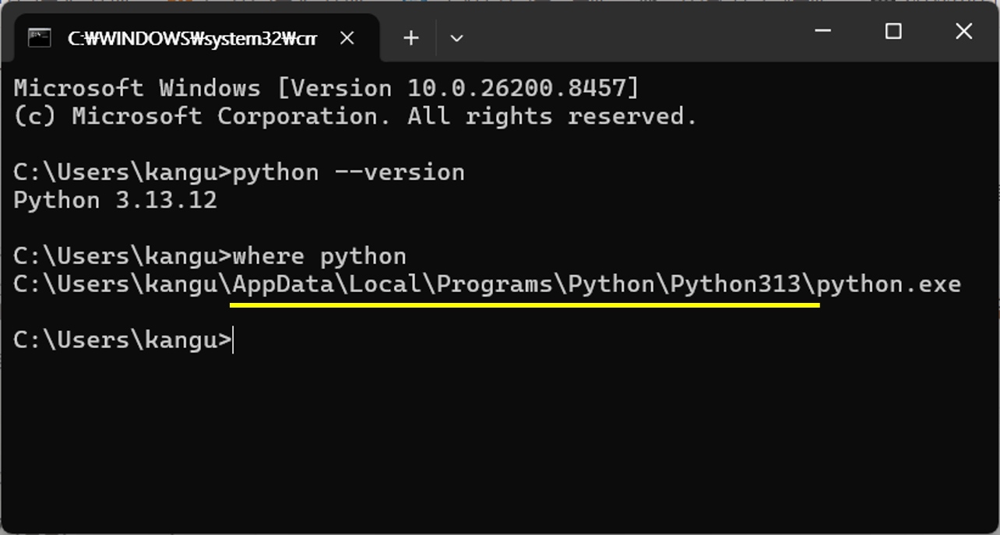
주의
아래와 같이 보인다면 강사에게 문의해주세요.
WindowsApps
예시
C:\Users\사용자\AppData\Local\Microsoft\WindowsApps\python.exe
7.라이브러리 설치 확인하기
아래 내용을 입력하고 Enter
python -m pip --version
정상 예시
pip 25.0 ...
오류가 발생하면 강사에게 문의해주세요.
8.VS Code 실행하기
VS Code 실행
왼쪽 상단 메뉴
파일 → 새 텍스트 파일
선택
아래 코드 입력
print("실습 준비 완료")오른쪽 상단 ▶ 버튼 클릭
정상 결과
실습 준비 완료
9.라이브러리 테스트하기
새 파일에 아래 코드 입력
import pandas as pd
print("Pandas 설치 성공")실행
정상 결과
Pandas 설치 성공
10.자주 발생하는 문제
11.Q. No module named pandas 라고 나와요
아래 명령 실행
python -m pip install pandas
설치 완료 후 다시 실행
12.Q. Python이 없다고 나와요
Python 설치가 정상적으로 되지 않은 상태입니다.
강사에게 문의해주세요.
13.Q. 실행 버튼이 안 보여요
VS Code에서 파일 저장
파일명 예시
test.py
확장자가 반드시
.py
인지 확인
14.문의할 때 보내주세요
문제가 발생하면 CMD 창에서 아래 내용을 차례로 실행한 후 결과를 캡처해서 보내주세요.
python --version
where python
python -m pip --version
2.2VS Code
- VS Code: code.visualstudio.com

- 설치 후 익스텐션 설치
- 정의: 에디터 기능을 추가·확장하는 플러그인 모듈
- 필요성: 언어 지원 강화, 자동 완성·디버깅·포매팅·테스트 등 개발 생산성·일관성 향상
| 익스텐션 | 주요 기능 요약 | 역할 |
|---|---|---|
| Python | 실행·디버깅·환경 설정 | 기본 실행 기반 |
| Pylance | 자동완성·오류 탐지·타입 힌트 | 개발 편의성 향상 |
| Jupyter | 셀 단위 실행·시각화 | 실습·분석·데모용 환경 |

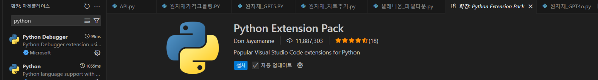
- 파이썬 파일 생성

1.VS코드 기본 편집 기능
| 기능 | 단축키 | 설명 |
|---|---|---|
| 들여쓰기 / 내어쓰기 | Tab / Shift + Tab | 선택한 줄 또는 커서가 있는 줄을 4칸씩 들여쓰기 또는 반대로 내어쓰기 함. 코드 구조를 정리하거나 블록 구문을 맞출 때 사용 |
| 주석 토글 | Ctrl + / | 커서가 있는 줄 또는 선택된 줄을 한 줄 주석으로 처리하거나 해제함. 테스트 중 코드 비활성화나 설명 추가 시 사용 |
| 컨트롤 + 클릭 (정의로 이동) | Ctrl + 클릭 | 함수, 변수, 클래스 등의 이름을 클릭하면 해당 정의 위치로 즉시 이동함. 코드 추적이나 함수 구조 파악에 유용 |
| 동일한 내용 선택 | Ctrl + Shift + L | 함수, 변수, 클래스 등의 이름을 클릭하면 해당 정의 위치로 즉시 이동함. 코드 추적이나 함수 구조 파악에 유용 |
| 다음 동일 항목 선택 | Ctrl + D | 커서가 위치한 단어나 선택한 텍스트와 동일한 다음 항목을 순차적으로 선택함. 여러 위치를 한 번에 수정할 때 사용 |
| 줄 복제 | Shift + Alt + ↓ | 현재 줄을 바로 아래로 복제함. ↑로 위쪽에도 복제 가능. 비슷한 코드를 여러 줄 작성할 때 유용 |
| 접었다 펴기 | Ctrl + Shift + [ (접기) / Ctrl + Shift + ] (펴기) | 함수, 클래스, 조건문 등 코드 블록을 접거나 펼침. 복잡한 파일에서 가독성을 높일 때 사용 |
2.3경로 불일치 오류시 해결 방법
- VS코드의 터미널 창에 다음을 입력해서 나온 경로를 복사한다.
python -c "import sys; print(sys.executable)"
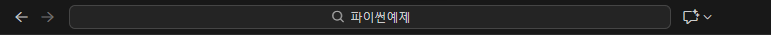
- VS코드의 가운데 상단에 있는 돋보기 있는 부분을 클릭하고 다음 명령어를 입력한다.
(>python: sele 정도까지 입력한 다음 보이는 메뉴를 클릭)
>python: select interpretier
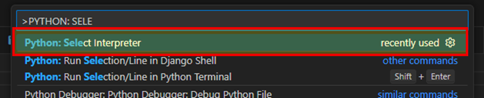
- 대부분 1에서 복사한 경로와 일치하는 경로를 추천해주는데 불일치 할 경우
”Enter interpreter path…”를 클릭하고 1의 경로를 입력한다.
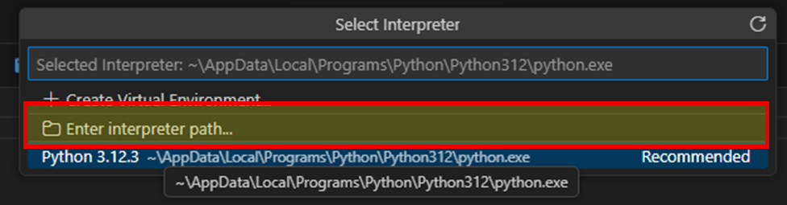
2.4Google Colab
[[Colab 설치하기 영상]](https://youtu.be/KyJ56582gsc)
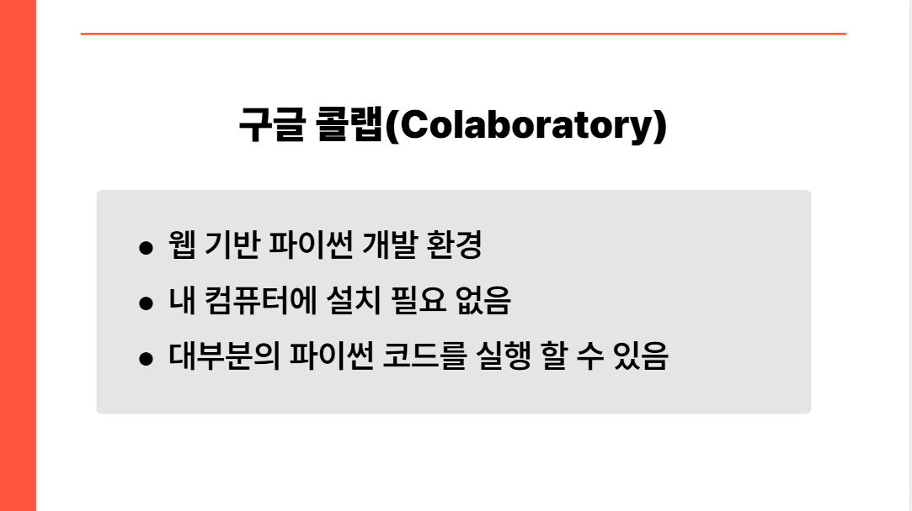

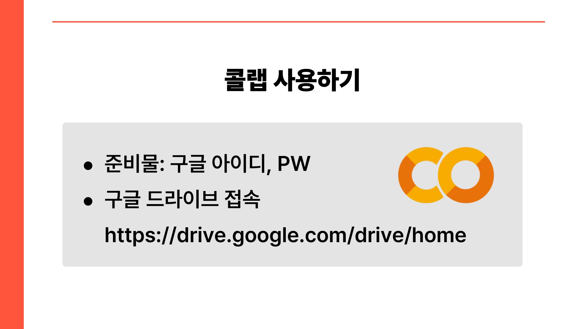
1.주의사항
- 고정적으로 써야 하는 파일은 구글 드라이브에 업로드 해놓고 “마운트”해서 사용하는 것을 추천코드고정적으로 써야 하는 파일은 구글 드라이브에 업로드 해놓고 “마운트”해서…
# 1. 구글 드라이브 마운트 from google.colab import drive drive.mount('/content/drive') - 매번 바뀔 수 있는 파일이라면 업로드를 하도록 설정코드매번 바뀔 수 있는 파일이라면 업로드를 하도록 설정
from google.colab import files uploaded = files.upload() filename = list(uploaded.keys())[0]
- 저장된 파일을 다시 활용해야 한다면 업로드한 폴더에 저장 해달라고 요청
- 최종 결과물은 다운로드 받도록 하는 것을 추천코드최종 결과물은 다운로드 받도록 하는 것을 추천
from google.colab import files 원래 있던코드(파일명 생성) * 파일명: 경로와 확장자까지 모두 저장되어있는 변수 files.download(파일명) - 차트를 그릴 때 한글이 필요하다면 반드시 한국어를 설치 해달라고 요청프롬프트차트를 그릴 때 한글이 필요하다면 반드시 한국어를 설치 해달라고 요청
차트에 한글이 적용되어야 하니까 **꼭!!! 한글 글꼴을 적용**해줘! **font_path를 정확히 지정해줘**
- 만약 여러 번 요청해도 설치를 못 할 경우. 다음 내용을 붙여 넣으세요.
``` !apt-get -qq install -y fonts-nanum font_path = '/usr/share/fonts/truetype/nanum/NanumGothic.ttf' fm.fontManager.addfont(font_path) plt.rcParams['font.family'] = 'NanumGothic' ``` 위 코드는 글꼴이 정상적으로 설치된 코드의 일부야. 이 내용을 참고해서 수정해줘.
2.구글 드라이브 > 내 드라이브에 폴더 생성
- 구글 드라이브 주소: https://drive.google.com/
- 실습을 위한 새로운 폴더 만들기
- 신규 → 폴더 클릭
- 실습을 위한 새로운 파일 만들기
- 신규 → 더 보기 → Google Colaboratory 클릭
- 제목 바꾸기: 제목을 안 바꾸면 나중에 어떤 파일인지 헷갈림
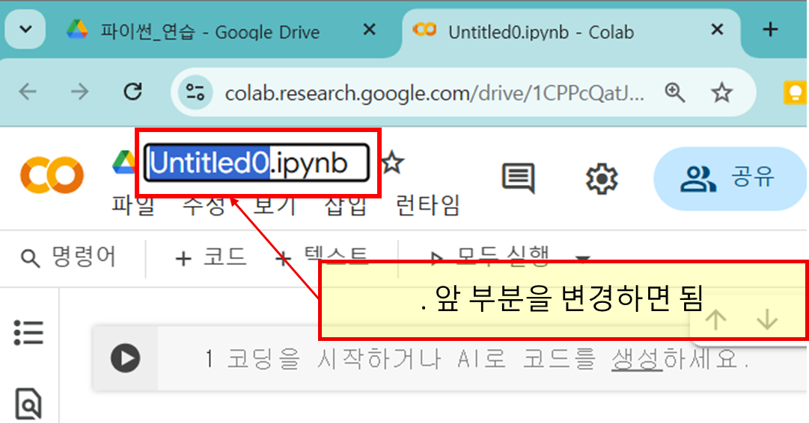
- AI에서 생성된 코드를 코드셀 안에 붙여넣고 플레이 버튼 누르기
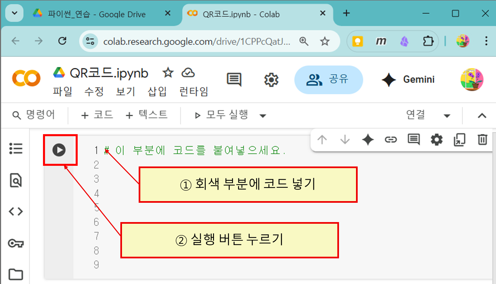
ChatGPT로 파이썬 코드 만들기
ChatGPT로 파이썬 코드 만들기
3.1기본 프롬프트
텍스트 파일에 붙여넣고 편집 후 GPT에게 물어보세요.
- PC버전프롬프트PC버전
당신은 파이썬 전문가입니다. 저는 파이썬 초보자이며 내 데스크탑의 VS코드에서 실행할 코드를 만들고 싶습니다. [요구사항] 1) 필요한 라이브러리가 있다면 코드 실행 시 자동으로 설치되도록 해주세요. (try-except 구조를 사용하여 없는 경우에만 설치하고, sys.executable을 활용해주세요) 2) 재사용이 가능하도록 주요 기능은 함수로 구성해주세요. 각 함수에는 한국어 docstring을 작성해주세요. 3) 주석은 단계 번호 형식으로 달아주세요. 예: # (1) CSV 파일 불러오기 중요한 줄/블록마다 **무엇을 하는지 + (이 작업을 하는 이유)**를 설명해주세요. 4) 코드 흐름을 이해하기 쉽게 main() 함수와 `if __name__ == "__main__": main()` 구조를 포함해 주세요. 5) 각 주요 단계마다 **[DEBUG]**로 시작하는 디버그용 print를 넣어주세요. (예: 진행 단계, 변수 크기/타입, 샘플 값 등) 6) 코드 작성 후 아래 내용을 추가로 작성해주세요. - 코드 전체 동작 요약 - 초보자가 자주 실수하는 부분 3개 7) 한국어 데이터 처리 시 반드시 다음을 포함해주세요: - 그래프에 한글 포함 시: '맑은 고딕'(Malgun Gothic) 폰트로 설정하고, 마이너스 기호(-) 깨짐 방지 코드도 포함 [작업 설명] ## 목적 ## INPUT ## PROCESS ## OUTPUT - 구글 콜랩버전프롬프트구글 콜랩버전
당신은 파이썬 전문가입니다. 저는 파이썬 초보자이며 Google Colab에서 실행할 코드를 만들고 싶습니다. [요구사항] 1) 모든 코드는 Google Colab에서 바로 실행 가능해야 합니다. 필요한 경우 !pip install 코드도 포함해주세요. 2) 재사용이 가능하도록 주요 기능은 함수로 구성해주세요. 각 함수에는 한국어 docstring을 작성해주세요. 3) 주석은 단계 번호 형식으로 달아주세요. 예: # (1) CSV 파일 불러오기 또한 거의 모든 줄에 **무엇을 하는지 + 가능한 경우 이유**를 설명해주세요. 4) 코드 흐름을 이해하기 쉽게 main() 함수와 `if __name__ == "__main__": main()` 구조를 포함해 주세요. 5) 각 주요 단계마다 **[DEBUG]**로 시작하는 디버그용 print를 넣어주세요. (예: 진행 단계, 변수 크기/타입, 샘플 값 등) 6) 코드 작성 후 아래 내용을 추가로 작성해주세요. - 코드 전체 동작 요약 - 초보자가 자주 실수하는 부분 3개 7) 한국어 데이터 처리 시 반드시 다음을 포함해주세요: - 그래프에 한글 포함 시: '나눔 고딕'(Nanum Gothic) 폰트로 설정하고, 마이너스 기호(-) 깨짐 방지 코드도 포함 [작업 설명] ## 목적 ## INPUT ## PROCESS ## OUTPUT
1.QR코드 만들기
- 파이썬으로 QR코드를 만들 수 있는지 확인
- 어떤 QR코드를 만들고 싶은지 최종 아웃풋을 명확하게 생각
최종 아웃풋 형태
- 프롬프트 작성하기
당신은 파이썬 전문가입니다.
저는 파이썬 초보자이며 내 데스크탑의 VS코드에서 실행할 코드를 만들고 싶습니다.
[요구사항]
1) 필요한 라이브러리가 있다면 코드 실행 시 자동으로 설치되도록 해주세요.
(try-except 구조를 사용하여 없는 경우에만 설치하고, sys.executable을 활용해주세요)
2) 재사용이 가능하도록 주요 기능은 함수로 구성해주세요.
각 함수에는 한국어 docstring을 작성해주세요.
3) 주석은 단계 번호 형식으로 달아주세요.
예: # (1) CSV 파일 불러오기
중요한 줄/블록마다 **무엇을 하는지 + (이 작업을 하는 이유)**를 설명해주세요.
4) 코드 흐름을 이해하기 쉽게 main() 함수와
`if __name__ == "__main__": main()` 구조를 포함해 주세요.
5) 각 주요 단계마다 **[DEBUG]**로 시작하는 디버그용 print를 넣어주세요.
(예: 진행 단계, 변수 크기/타입, 샘플 값 등)
6) 코드 작성 후 아래 내용을 추가로 작성해주세요.
- 코드 전체 동작 요약
- 초보자가 자주 실수하는 부분 3개
7) 한국어 데이터 처리 시 반드시 다음을 포함해주세요:
- 그래프에 한글 포함 시: '맑은 고딕'(Malgun Gothic) 폰트로 설정하고,
마이너스 기호(-) 깨짐 방지 코드도 포함
[작업 설명]
## 목적
## INPUT
## PROCESS
## OUTPUT프롬프트 예시(미리 열어보지 마세요!)
코드 예시(미리 열어보지 마세요!)
import sys
import subprocess
# (1) 필요한 라이브러리 자동 설치 함수
def install_and_import(package_name, import_name=None):
"""
필요한 패키지를 확인 후 없으면 자동 설치하는 함수
:param package_name: 설치할 패키지 이름
:param import_name: import 시 사용할 이름 (None이면 package_name 사용)
"""
try:
if import_name:
globals()[import_name] = __import__(import_name)
else:
globals()[package_name] = __import__(package_name)
print(f"[DEBUG] '{package_name}' 이미 설치됨")
except ImportError:
print(f"[DEBUG] '{package_name}' 설치 시작")
subprocess.check_call([sys.executable, "-m", "pip", "install", package_name])
if import_name:
globals()[import_name] = __import__(import_name)
else:
globals()[package_name] = __import__(package_name)
print(f"[DEBUG] '{package_name}' 설치 완료")
# (2) 라이브러리 설치
install_and_import("qrcode")
install_and_import("Pillow", "PIL")
from PIL import Image, ImageDraw, ImageFont
# (3) QR코드 생성 함수
def create_qr(url):
"""
URL을 기반으로 QR코드를 생성하는 함수
:param url: QR코드로 변환할 URL
:return: PIL Image 객체
"""
print(f"[DEBUG] QR 생성 시작 - URL: {url}")
qr = qrcode.QRCode(
version=1,
box_size=10,
border=4
)
qr.add_data(url)
qr.make(fit=True)
img = qr.make_image(fill_color="black", back_color="white").convert("RGB")
print(f"[DEBUG] QR 이미지 생성 완료 - 크기: {img.size}")
return img
# (4) 텍스트 추가 함수
def add_text_to_image(img, text):
"""
QR코드 이미지 하단에 텍스트를 추가하는 함수
:param img: QR 이미지
:param text: 추가할 텍스트 (사이트명)
:return: 텍스트가 추가된 이미지
"""
print(f"[DEBUG] 텍스트 추가 시작 - 텍스트: {text}")
width, height = img.size
# (4-1) 폰트 설정 (한글 지원)
try:
font = ImageFont.truetype("malgun.ttf", 30)
print("[DEBUG] 맑은 고딕 폰트 사용")
except:
font = ImageFont.load_default()
print("[DEBUG] 기본 폰트 사용 (한글 깨질 수 있음)")
# (4-2) 텍스트 크기 계산
draw = ImageDraw.Draw(img)
text_width, text_height = draw.textbbox((0, 0), text, font=font)[2:]
print(f"[DEBUG] 텍스트 크기: {text_width}, {text_height}")
# (4-3) 새 이미지 생성 (하단 공간 확보)
new_height = height + text_height + 20
new_img = Image.new("RGB", (width, new_height), "white")
# (이유: 기존 이미지에 바로 텍스트 추가 시 여백 부족 문제 발생)
new_img.paste(img, (0, 0))
draw = ImageDraw.Draw(new_img)
# (4-4) 중앙 정렬 계산
x = (width - text_width) // 2
y = height + 10
# (이유: QR코드와 텍스트가 겹치지 않도록 하단에 배치)
draw.text((x, y), text, fill="black", font=font)
print(f"[DEBUG] 텍스트 추가 완료 - 위치: ({x}, {y})")
return new_img
# (5) 파일 저장 함수
def save_image(img, site_name):
"""
이미지를 파일로 저장하는 함수
:param img: 저장할 이미지
:param site_name: 파일명에 사용할 사이트명
"""
filename = f"{site_name}_QR코드.png"
print(f"[DEBUG] 파일 저장 시작 - 파일명: {filename}")
img.save(filename)
print(f"[DEBUG] 저장 완료")
# (6) 메인 함수
def main():
"""
전체 실행 흐름을 담당하는 메인 함수
"""
print("[DEBUG] 프로그램 시작")
# (6-1) 사용자 입력 받기
url = input("URL을 입력하세요: ")
site_name = input("사이트 이름을 입력하세요: ")
print(f"[DEBUG] 입력값 확인 - URL: {url}, 사이트명: {site_name}")
# (6-2) QR 생성
qr_img = create_qr(url)
# (6-3) 텍스트 추가
final_img = add_text_to_image(qr_img, site_name)
# (6-4) 파일 저장
save_image(final_img, site_name)
print("[DEBUG] 프로그램 종료")
# (7) 실행 진입점
if __name__ == "__main__":
main()3.2프로젝트 이용하기
- 프로젝트 지침에 다음의 내용 추가
당신은 파이썬 전문가입니다.
저는 파이썬 초보자이며 내 데스크탑의 VS코드에서 실행할 코드를 만들고 싶습니다.
[요구사항]
1) 필요한 라이브러리가 있다면 코드 실행 시 자동으로 설치되도록 해주세요.
(try-except 구조를 사용하여 없는 경우에만 설치하고, sys.executable을 활용해주세요)
2) 재사용이 가능하도록 주요 기능은 함수로 구성해주세요.
각 함수에는 한국어 docstring을 작성해주세요.
3) 주석은 단계 번호 형식으로 달아주세요.
예: # (1) CSV 파일 불러오기
중요한 줄/블록마다 **무엇을 하는지 + (이 작업을 하는 이유)**를 설명해주세요.
4) 코드 흐름을 이해하기 쉽게 main() 함수와
`if __name__ == "__main__": main()` 구조를 포함해 주세요.
5) 각 주요 단계마다 **[DEBUG]**로 시작하는 디버그용 print를 넣어주세요.
(예: 진행 단계, 변수 크기/타입, 샘플 값 등)
6) 코드 작성 후 아래 내용을 추가로 작성해주세요.
- 코드 전체 동작 요약
- 초보자가 자주 실수하는 부분 3개
7) 한국어 데이터 처리 시 반드시 다음을 포함해주세요:
- 그래프에 한글 포함 시: '맑은 고딕'(Malgun Gothic) 폰트로 설정하고,
마이너스 기호(-) 깨짐 방지 코드도 포함
사용자가 INPUT/PROCESS/OUTPUT 형식으로 설명하면 이를 반영하여 코드를 설계하세요.3.3만들어준 코드에 오류가 날 때 대처 방법

- Traceback이 있는 부분부터 맨 마지막 까지 복사해서 GPT에게 붙여넣기
3.4자주 발생하는 오류
| 대표 오류 | 발생 상황 | 주요 원인 |
|---|---|---|
FileNotFoundError | 파일을 불러오지 못함 | 파일명, 경로, 확장자 오류 |
PermissionError | 파일을 저장하거나 수정하지 못함 | 파일이 열려 있음, 저장 권한 없음 |
KeyError | 특정 열이나 값을 찾지 못함 | 열 이름 변경, 오타, 앞뒤 공백 |
ValueError | 값 변환이나 계산이 안 됨 | 숫자·날짜 형식 불일치, 잘못된 값 포함 |
TypeError | 계산이나 처리가 안 됨 | 숫자와 문자처럼 서로 다른 형식의 데이터를 함께 처리함 |
IndexError | 특정 위치의 데이터를 가져오지 못함 | 데이터가 비어 있음, 행/열 개수 부족 |
ModuleNotFoundError | 필요한 라이브러리를 불러오지 못함 | 라이브러리 미설치, 다른 파이썬 환경에 설치됨 |
ImportError | 라이브러리나 기능을 불러오지 못함 | 설치된 라이브러리 버전 문제, 잘못된 import 문 |
UnicodeDecodeError | CSV 파일 등을 불러올 때 한글이 깨지거나 읽히지 않음 | 인코딩 방식 불일치 |
ConnectionError | 웹사이트, API, 서버에 접속하지 못함 | 인터넷 연결 문제, 서버 접속 불가, 방화벽 |
TimeoutError | 접속이나 처리가 제한 시간 안에 끝나지 않음 | 서버 응답 지연, 인터넷 불안정, 작업량 과다 |
AttributeError | 특정 기능이나 속성을 사용할 수 없음 | 변수 형식이 예상과 다름, 잘못된 기능 이름 사용 |
NameError | 변수를 찾지 못함 | 변수명 오타, 변수를 만들기 전에 사용함 |
SyntaxError | 코드가 실행되지 않음 | 괄호, 따옴표, 콜론 등 문법 오류 |
IndentationError | 코드 들여쓰기 때문에 실행되지 않음 | 들여쓰기 불일치, 공백/탭 혼용 |
ZeroDivisionError | 계산 중 0으로 나누려고 함 | 분모 값이 0이 됨 |
Worksheet not found | 엑셀 시트를 불러오지 못함 | 시트명 변경, 공백, 월별 시트명 차이 |
ElementNotInteractableException | 웹페이지 요소를 클릭하거나 입력하지 못함 | 요소가 숨겨져 있음, 아직 로딩되지 않음 |
NoSuchElementException | 웹페이지에서 원하는 요소를 찾지 못함 | 사이트 구조 변경, 선택자 오류, 로딩 지연 |
StaleElementReferenceException | 찾았던 웹 요소를 다시 사용할 수 없음 | 페이지가 새로고침됨, 화면 내용이 동적으로 변경됨 |
SMTPAuthenticationError | 메일 계정 로그인에 실패함 | 아이디/비밀번호 오류, 앱 비밀번호 필요, 보안 정책 |
SMTPConnectError | 메일 서버에 연결하지 못함 | SMTP 서버 주소 오류, 포트 오류, 방화벽 |
InvalidFileException | 엑셀 파일을 열지 못함 | 지원하지 않는 파일 형식, 파일 손상, 확장자 불일치 |
3.5파이썬 코드를 이해하는 법
너는 파이썬전문가이자 매우 친절한 파이썬전문 강사야. 나는 파이썬을 처음 배우는 초보자야. AI가 생성해준 파이썬 코드가 있는데 코드를 이해하지 못해서 수정을 할 수가 없어. 내가 나중에 비슷한 코드를 쉽게 수정할 수 있도록 코드를 자세히 뜯어보면서 공부하고 싶어 내가 알려주는 코드에 한 줄씩, 아주 자세하게 해석을 해서 주석을 추가해줘. 내가 특별히 궁금한 부분을 다시 물어보기 쉽도록 기능이 바뀌는 부분에 번호를 메겨줘. 전체적인 코드의 흐름을 설명해주고 내가 번호를 입력하면 그 번호에 해당하는 부분의 코드에 대한 설명을 해줘. ---
파이썬으로 엑셀 데이터 편집하기
파이썬으로 엑셀 데이터 편집하기
4.1왜 엑셀 대신 파이썬인가
| 구분 | 엑셀 | 파이썬 |
|---|---|---|
| 데이터 처리 방식 | 셀 기반 수작업 중심 처리 | 코드 기반 자동화 처리 |
| 작업 방식 | 사람이 직접 수정해야 하는 구조 | 한 번 작성하면 반복 실행 가능 |
| 데이터 처리 규모 | 수십만 행 이상에서 속도 저하 | 대용량 데이터 처리 최적화 가능 |
| 로직 구현 | 복잡한 수식으로 가독성 저하 | 조건문, 함수로 구조적 설계 가능 |
4.2엑셀을 다루는 파이썬 라이브러리
| 라이브러리 | 주요 특징 | 장점 | 단점 |
|---|---|---|---|
| openpyxl | .xlsx 파일 읽기/쓰기 전용 라이브러리 | - 셀 서식, 수식, 차트 등 엑셀 요소 직접 제어 가능- 엑셀 파일 생성, 편집, 저장에 강력 | - .xls(구버전 엑셀) 미지원- 대용량 데이터 처리에는 비효율적 |
| pandas | 데이터 분석 중심의 라이브러리, read_excel, to_excel 지원 | - 테이블 형태의 데이터 처리에 매우 강력- 필터링, 그룹화, 통계 분석에 적합- 대용량 처리에 효율적 | - 서식, 수식, 차트 등 엑셀 고급 기능 미지원 - 스타일 적용은 제한적 |
| xlwings | 엑셀과 파이썬을 직접 연결하여 양방향 통신 가능 | - 실제 엑셀 앱을 제어하며 VBA 수준의 조작 가능- 서식, 수식, 차트 등 완전한 엑셀 제어 가능 | - 윈도우 및 엑셀 설치 필요 - 속도가 다소 느림 - 설치 환경 제약 (Mac 일부 기능 제한) |
4.3데이터의 구조
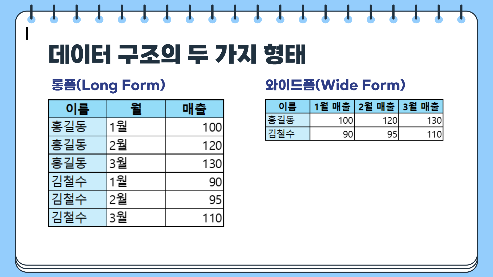

Pandas에서 롱폼을 쓰는 이유
1.Pandas의 철학: Tidy Data 원칙 기반 설계
Pandas는 Hadley Wickham이 제시한 Tidy Data 원칙을 따름
이 원칙은 데이터 분석의 효율성을 극대화하기 위해 다음 세 가지 규칙을 제시
| Tidy Data 원칙 | 설명 |
|---|---|
| 1. 각 변수는 열(Column) | 변수 이름이 열 제목으로 존재해야 함 |
| 2. 각 관측값은 행(Row) | 한 줄이 하나의 ‘사실’을 표현해야 함 |
| 3. 각 표는 하나의 관측 단위를 포함 | 서로 다른 단위를 섞지 말 것 (예: 매출 vs 인사정보 분리) |
“하나의 셀에는 하나의 값만, 하나의 행에는 하나의 관측값만”
2.와이드폼보다 롱폼이 분석에 적합한 이유
| 구분 | 와이드폼(Wide Form) | 롱폼(Long Form) |
|---|---|---|
| 데이터 구조 | 가로로 넓은 형태 (여러 열에 동일 변수 존재) | 세로로 긴 형태 (한 열에 동일 변수 집중) |
| 목적 | 사람이 보기 쉬움 | 기계가 처리하기 쉬움 |
| 분석/시각화 | 추가 변수가 늘면 구조가 복잡 | 구조가 일정해 자동화에 유리 |
| Pandas 함수 호환성 | 제한적 (구조 변환 필요) | 완전 호환 (groupby, melt, concat 등) |
Pandas는 사람이 읽는 표가 아니라, 컴퓨터가 분석하기 좋은 표를 원한다. 즉, 사람이 보기 좋은 와이드폼보다 기계가 반복 분석하기 좋은 롱폼을 선호

- 이것은 무엇을 나타내는 표일까요?
와이드 폼의 데이터를 컴퓨터나 AI가 어려워 하는 이유
- 열 이름만으로는 그것이 무엇을 의미하는지 알 수 없음
- 값이 어떻게 만들어졌는지도 알 수 없음
- 기계는 맥락을 읽지 못함
롱폼 확인
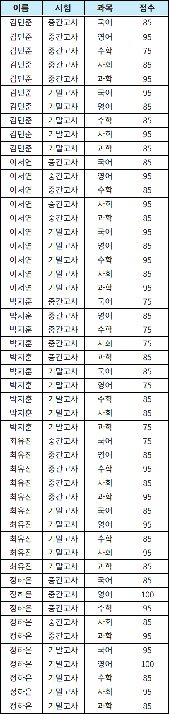
3.주요 기능들이 롱폼을 전제로 설계됨
4.groupby()
- 행(Row) 단위로 그룹화하여 통계, 합계, 평균 등 계산
- 롱폼 구조에서는 바로 작동
- 와이드폼에서는 변수를 다시 녹여(
melt)야 함
data.groupby("월")["매출"].sum()5.merge() / concat()
- 행 기반 결합 구조 (Row 기준 병합)
- 열이 많거나 구조가 다른 와이드폼은 병합 시 오류 발생
6.melt()
- 와이드 → 롱 변환 함수
- “데이터를 분석 가능한 형태로 정돈(Tidy)”하는 역할
7.시각화 라이브러리 호환성
Seaborn,Plotly,Altair등
모두 롱폼 데이터 구조를 전제로 설계됨- 예:코드예:
sns.lineplot(data=df, x="월", y="매출", hue="이름")
8.구조적 이유: 일관성과 확장성
- 일관성(Consistency)
모든 행이 같은 변수 집합을 갖기 때문에, 반복문이나 함수 적용이 단순함 - 확장성(Scalability)
새로운 항목(월, 지역, 제품 등)을 추가해도 열 구조가 변하지 않음 - 자동화 효율성(Automation)
반복 분석, 시각화, 모델링이 코드 한 줄로 가능
→ 구조가 변하지 않으므로 코드 수정 최소화
9.직관적 비유
| 형태 | 비유 | 설명 |
|---|---|---|
| 와이드폼 | “사람이 보기 좋은 엑셀 보고서” | 가로로 정리되어 한눈에 보기 좋지만 계산은 불편 |
| 롱폼 | “기계가 읽기 좋은 데이터 일지” | 각 줄이 하나의 사건을 기록하므로 분석 자동화에 유리 |
엑셀은 ‘보기 좋은 데이터’, Pandas는 ‘처리하기 좋은 데이터’
4.4파이썬에서 주의할 점
1.대소문자 구분
- 파이썬은 대소문자를 구분함
예:
Name = "홍길동" print(name) # 오류 발생 (소문자 name 없음)
- 변수명, 함수명, 예약어(
True,False,None) 모두 대소문자 정확히 써야 함
2.들여쓰기 중요
- 파이썬은 **들여쓰기(Indent)**로 코드 구조를 구분함
예:
if x > 0:
print("양수입니다") # 들여쓰기 되어야 함
print("끝") # 들여쓰기 없으면 if문 밖- 탭(tab)과 공백(space)을 섞어 쓰면 오류 발생
- 보통 공백 4칸을 기준으로 들여쓰기 함
- VS코드 사용 시 자동으로 들여쓰기 해줌
3.문법 끝에 :
from pathlib import Path
path = Path("C:/data/test.xlsx")
- 조건문, 반복문, 함수 선언은 끝에 콜론(
:) 이 꼭 필요함
예:
if x > 10: # 콜론 꼭 필요
print("10보다 큼")
def add(a, b): # 함수 정의에도 콜론 필요
return a + b4.문자열(텍스트)은 큰따옴표 또는 작은따옴표로 감싸기
- 텍스트는 항상 따옴표로 감싸야 함
예:
name = "홍길동" greeting = '안녕하세요'
- 따옴표가 안 닫히면 오류 발생실행 결과따옴표가 안 닫히면 오류 발생
name = "홍길동 # ← 닫는 따옴표 없음 → 오류
- 따옴표 안에 따옴표 넣기코드따옴표 안에 따옴표 넣기
# 바깥은 큰따옴표, 안은 작은따옴표 사용 text = "그는 '안녕하세요'라고 말함" # 바깥은 작은따옴표, 안은 큰따옴표 사용 text = '그는 "안녕하세요"라고 말함' # 역슬래시(\)로 이스케이프 처리 방법 text = "그는 \"안녕하세요\"라고 말함" text = '그는 \'안녕하세요\'라고 말함'
5.자료형(타입) 확인하기
- 숫자, 문자열, 리스트 등은 타입이 다름
- 서로 다른 타입끼리 연산하면 오류 발생
예:
x = "10" y = 5 print(x + y) # 오류 (문자 + 숫자 불가)
- 타입 확인 방법코드타입 확인 방법
print(type(x))
- 필요한 경우 형변환코드필요한 경우 형변환
x = int(x) # 문자열을 숫자로 변환
4.5파이썬으로 엑셀을 다룰때 초보자가 실수하기 쉬운 5가지
1.경로 표기 오류 (\ 때문에 파일을 못 읽는 문제)
- 원인: 윈도우 탐색기에서 복사한 경로가
C:\Users\홍길동\Desktop\sales.xlsx형태라\U등이 특수문자로 인식됨 - 해결:
- 슬래시(
/)로 바꾸거나 - 문자열 앞에
r을 붙임
df = pd.read_excel(r"C:\Users\홍길동\Desktop\sales.xlsx")
2.엑셀 파일이 열려 있어서 저장 실패
- 원인: 엑셀이 해당 파일을 열고 있으면 쓰기 권한이 잠김
- 증상:
PermissionError: [Errno 13] Permission denied - 해결: 엑셀 프로그램에서 파일을 닫은 뒤 저장하거나, 다른 파일명으로 저장코드해결 : 엑셀 프로그램에서 파일을 닫은 뒤 저장하거나, 다른 파일명으로…
df.to_excel("sales_result_v2.xlsx", index=False)
3.날짜 데이터가 문자열로 인식되어 정렬 안 됨
- 원인: 엑셀의 날짜 셀 형식이 통일되지 않음
- 해결:
pd.to_datetime()으로 명시 변환코드해결 : pd.to_datetime() 으로 명시 변환df["판매일자"] = pd.to_datetime(df["판매일자"], errors="coerce")
4.저장 시 인덱스 번호가 같이 들어감
- 원인:
to_excel()의 기본값이index=True - 결과: 엑셀 파일 첫 열에 “Unnamed: 0” 같은 불필요한 열이 생김
- 해결:코드해결 :
df.to_excel("결과.xlsx", index=False)
5.한글이 포함된 CSV 저장 시 글자 깨짐
- 원인: 엑셀이 기본
utf-8인코딩을 제대로 인식하지 못함 - 해결:코드해결 :
df.to_csv("결과.csv", index=False, encoding="utf-8-sig")
파이썬으로 엑셀 다루기 실습
파이썬으로 엑셀 다루기 실습
5.1같은 형식의 여러 엑셀 파일 취합하기
- 상황
- 월 별로 작성되어 있는 상반기 매출 기록을 취합
- INPUT(”매출기록” 폴더)
- 한 폴더 안에 저장되어 있음
- 한 파일에 하나의 시트만 있음
- 데이터의 구조는 동일함
- 정렬이 되어있지 않음
- PROC
- 폴더 안의 모든 파일을 병합함(세로 방향으로 append)
- 거래일자, 거래처명, 제품명 순으로 오름차순 정렬
- 수량, 단가, 공급가액, 부가세, 합계는 콤마스타일 적용
- 원하는 서식 적용
- OUTPUT
- 2025_1분기_매출기록.xlsx로 저장
프롬프트 예시(미리 열어보지 마세요!)
당신은 파이썬 전문가입니다.
저는 파이썬 초보자이며 내 데스크탑의 VS코드에서 실행할 코드를 만들고 싶습니다.
[요구사항]
1) 필요한 라이브러리가 있다면 코드 실행 시 자동으로 설치되도록 해주세요.
(try-except 구조를 사용하여 없는 경우에만 설치하고, sys.executable을 활용해주세요)
2) 재사용이 가능하도록 주요 기능은 함수로 구성해주세요.
각 함수에는 한국어 docstring을 작성해주세요.
3) 주석은 단계 번호 형식으로 달아주세요.
예: # (1) CSV 파일 불러오기
중요한 줄/블록마다 **무엇을 하는지 + (이 작업을 하는 이유)**를 설명해주세요.
4) 코드 흐름을 이해하기 쉽게 main() 함수와
`if __name__ == "__main__": main()` 구조를 포함해 주세요.
5) 각 주요 단계마다 **[DEBUG]**로 시작하는 디버그용 print를 넣어주세요.
(예: 진행 단계, 변수 크기/타입, 샘플 값 등)
6) 코드 작성 후 아래 내용을 추가로 작성해주세요.
- 코드 전체 동작 요약
- 초보자가 자주 실수하는 부분 3개
7) 한국어 데이터 처리 시 반드시 다음을 포함해주세요:
- 그래프에 한글 포함 시: '맑은 고딕'(Malgun Gothic) 폰트로 설정하고,
마이너스 기호(-) 깨짐 방지 코드도 포함
[작업 설명]
## 목적
## INPUT
## PROCESS
## OUTPUT5.2파일 확장자 바꾸기
1.상황
- 다른 부서에서 받은 자료를 사이트에 업로드해야하는데 받은 자료는 xls파일인데 업로드는 xlsx만 가능한 상황
- 100개가 넘는 파일의 확장자를 모두 바꿔야 하는데 어떻게 해야할까?
2.질문
- 나라면 이 업무를 어떻게 처리할 것인가?
- 이 업무에서 귀찮거나 실수가 발생할 수 있는 부분은 무엇일까?
- 귀찮거나 실수를 발생할 수 있는 부분 중에 컴퓨터(파이썬)으로 해결할 수 있는 부분이 있을까?
- 어떻게 하면 원하는 작업을 하는 코드를 얻을 수 있을까?(프롬프트)
프롬프트 예시
당신은 파이썬 전문가입니다.
저는 파이썬 초보자이며 내 데스크탑의 VS코드에서 실행할 코드를 만들고 싶습니다.
[요구사항]
1) 필요한 라이브러리가 있다면 코드 실행 시 자동으로 설치되도록 해주세요.
(try-except 구조를 사용하여 없는 경우에만 설치하고, sys.executable을 활용해주세요)
2) 재사용이 가능하도록 주요 기능은 함수로 구성해주세요.
각 함수에는 한국어 docstring을 작성해주세요.
3) 주석은 단계 번호 형식으로 달아주세요.
예: # (1) CSV 파일 불러오기
중요한 줄/블록마다 **무엇을 하는지 + (이 작업을 하는 이유)**를 설명해주세요.
4) 코드 흐름을 이해하기 쉽게 main() 함수와
`if __name__ == "__main__": main()` 구조를 포함해 주세요.
5) 각 주요 단계마다 **[DEBUG]**로 시작하는 디버그용 print를 넣어주세요.
(예: 진행 단계, 변수 크기/타입, 샘플 값 등)
6) 코드 작성 후 아래 내용을 추가로 작성해주세요.
- 코드 전체 동작 요약
- 초보자가 자주 실수하는 부분 3개
7) 한국어 데이터 처리 시 반드시 다음을 포함해주세요:
- 그래프에 한글 포함 시: '맑은 고딕'(Malgun Gothic) 폰트로 설정하고,
마이너스 기호(-) 깨짐 방지 코드도 포함
[작업 설명]
## 목적
## INPUT
## PROCESS
## OUTPUT5.3항목별로 차트 만들기
- 상황
- 월별로 정리된 제품별 매출 건수 자료가 있음
- 이 자료를 시각화 해야하는데 항목이 너무 많아서 잘 보이지 않음
- 제품별로 월별 판매량 그래프를 그리고 싶음

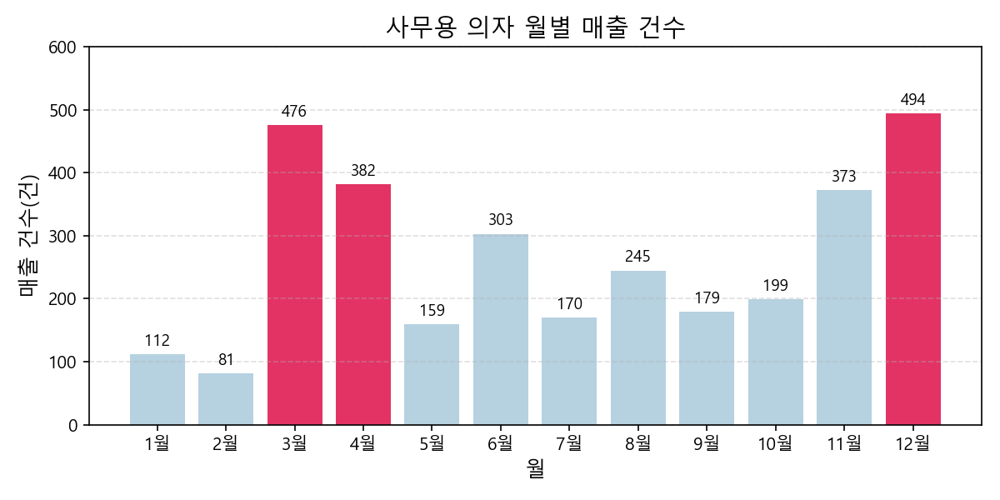
- INPUT
- 윈도우 탐색기로 파일 선택
- 파일에 시트는 하나이고 1열에는 제품명이 그 이후 열에는 1월부터 12월까지 매출 건수가 입력되어있음
- PROCESS
- 각 제품별로 1월~12월의 판매건수를 세로 막대그래프로 생성
- OUTPUT
- 엑셀파일이 선택된 폴더에 “차트”하위 폴더를 만들고 그 안에 저장
- 파일명은 [제품명]_매출차트.png
- 워드 파일에 이미지 파일을 삽입해서 저장
프롬프트 예시(미리 열어보지 마세요!)
당신은 파이썬 전문가입니다.
저는 파이썬 초보자이며 내 데스크탑의 VS코드에서 실행할 코드를 만들고 싶습니다.
[요구사항]
1) 필요한 라이브러리가 있다면 코드 실행 시 자동으로 설치되도록 해주세요.
(try-except 구조를 사용하여 없는 경우에만 설치하고, sys.executable을 활용해주세요)
2) 재사용이 가능하도록 주요 기능은 함수로 구성해주세요.
각 함수에는 한국어 docstring을 작성해주세요.
3) 주석은 단계 번호 형식으로 달아주세요.
예: # (1) CSV 파일 불러오기
중요한 줄/블록마다 **무엇을 하는지 + (이 작업을 하는 이유)**를 설명해주세요.
4) 코드 흐름을 이해하기 쉽게 main() 함수와
`if __name__ == "__main__": main()` 구조를 포함해 주세요.
5) 각 주요 단계마다 **[DEBUG]**로 시작하는 디버그용 print를 넣어주세요.
(예: 진행 단계, 변수 크기/타입, 샘플 값 등)
6) 코드 작성 후 아래 내용을 추가로 작성해주세요.
- 코드 전체 동작 요약
- 초보자가 자주 실수하는 부분 3개
7) 한국어 데이터 처리 시 반드시 다음을 포함해주세요:
- 그래프에 한글 포함 시: '맑은 고딕'(Malgun Gothic) 폰트로 설정하고,
마이너스 기호(-) 깨짐 방지 코드도 포함
[작업 설명]
## 목적
## INPUT
## PROCESS
## OUTPUT- 색 조합 사이트: 마이컬러스페이스
1.그래프 편집 요청하기
- 그래프 편집을 요청하기 위해서는 그래프 각 부분의 명칭을 정확하게 알아야 함
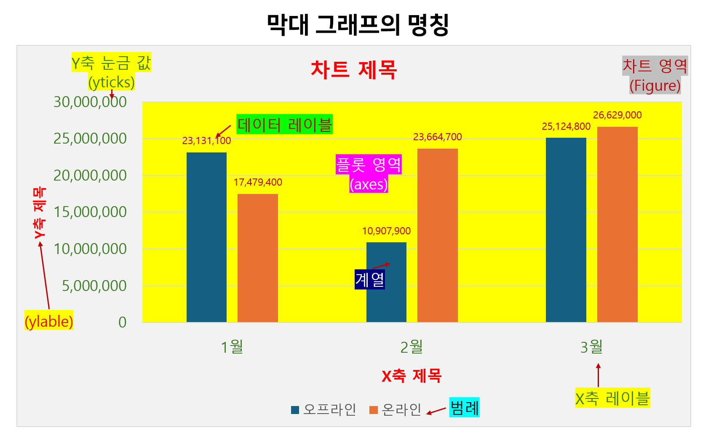
- Y축 눈금값이 기본으로 지수 형식으로 설정됨으로 수정이나 삭제가 필요
- 회색 점선이 보이는 것은 보조선
- 숫자에 세 자리마다 콤마를 적용하려면 “콤마 스타일”적용 요청
- 변하는 숫자에 단위를 붙여서 표현하고 싶으면 “n월”과 같이 숫자를 n으로 표현
- 범례가 데이터 계열을 가릴 경우 “범례를 플롯영역 밖으로 위치”시켜달라고 요청
- 데이터 계열이 너무 높아서 데이터 레이블이 잘 안보일 경우
”Max값을 1.2~1.3배해서 상단에 여백을 확보”해 달라고 요청
추가 프롬프트 예시(미리 열어보지 마세요!)
차트는 잘 생성되었는데 디자인이 마음에 들지 않아. 차트에 다음의 디자인을 적용시켜줘. * 차트 색상은 푸른색 계열로 왼쪽이 하늘색 오른쪽으로 갈수록 짙은 푸른색으로 적용 * 데이터레이블 추가(콤마스타일 적용) * Max값을 1.2~1.3배해서 상단에 여백을 확보

코드 예시(미리 열어보지 마세요!)
# -*- coding: utf-8 -*-
import sys
import subprocess
import os
# (0) 라이브러리 자동 설치
def install_package(package):
try:
__import__(package)
except ImportError:
print(f"[DEBUG] {package} 설치 진행")
subprocess.check_call([sys.executable, "-m", "pip", "install", package])
install_package("pandas")
install_package("matplotlib")
install_package("openpyxl")
install_package("python-docx")
import pandas as pd
import matplotlib.pyplot as plt
from tkinter import Tk, filedialog
from docx import Document
from matplotlib import font_manager, rc
# (1) 한글 폰트 설정
def set_korean_font():
"""
그래프에서 한글이 깨지지 않도록 폰트를 설정하는 함수
"""
print("[DEBUG] 한글 폰트 설정")
font_path = "C:/Windows/Fonts/malgun.ttf"
font = font_manager.FontProperties(fname=font_path).get_name()
rc('font', family=font)
# 마이너스 깨짐 방지
plt.rcParams['axes.unicode_minus'] = False
# (2) 파일 선택
def select_file():
"""
엑셀 파일을 탐색기에서 선택하는 함수
"""
print("[DEBUG] 파일 선택 창 열기")
root = Tk()
root.withdraw()
file_path = filedialog.askopenfilename(
title="엑셀 파일 선택",
filetypes=[("Excel Files", "*.xlsx")]
)
print(f"[DEBUG] 선택된 파일: {file_path}")
return file_path
# (3) 데이터 불러오기
def load_data(file_path):
"""
엑셀 데이터를 pandas DataFrame으로 불러오는 함수
"""
print("[DEBUG] 데이터 로딩 시작")
df = pd.read_excel(file_path)
print(f"[DEBUG] 데이터 형태: {df.shape}")
print(f"[DEBUG] 컬럼: {list(df.columns)}")
return df
# (4) 차트 저장 폴더 생성
def create_output_folder(base_path):
"""
차트를 저장할 폴더 생성
"""
folder_path = os.path.join(base_path, "차트")
if not os.path.exists(folder_path):
os.makedirs(folder_path)
print(f"[DEBUG] 폴더 생성: {folder_path}")
else:
print(f"[DEBUG] 폴더 이미 존재: {folder_path}")
return folder_path
# (5) 제품별 차트 생성
def create_chart(df, output_folder):
"""
제품별 매출 차트를 생성하고 이미지로 저장하는 함수
"""
print("[DEBUG] 차트 생성 시작")
file_list = []
for idx, row in df.iterrows():
product_name = str(row.iloc[0])
sales_data = row.iloc[1:]
print(f"[DEBUG] 처리중 제품: {product_name}")
months = sales_data.index
values = sales_data.values.astype(float)
# (5-1) 상위 3개 인덱스
top3_index = values.argsort()[-3:]
# (5-2) 색상 설정
colors = ["#B6D1E0"] * len(values)
for i in top3_index:
colors[i] = "#E33364"
# (5-3) 그래프 생성
plt.figure(figsize=(10, 6))
bars = plt.bar(months, values, color=colors)
plt.title(f"{product_name} 매출 추이")
plt.ylim(0, 600)
# (5-4) 데이터 라벨
for bar in bars:
yval = bar.get_height()
plt.text(
bar.get_x() + bar.get_width() / 2,
yval,
f"{int(yval):,}",
ha='center',
va='bottom'
)
# (5-5) 저장
file_name = f"{product_name}_매출차트.png"
save_path = os.path.join(output_folder, file_name)
plt.savefig(save_path, dpi=200)
plt.close()
print(f"[DEBUG] 저장 완료: {save_path}")
file_list.append((product_name, save_path))
return file_list
# (6) 워드 파일 생성 (🔥 문서 폭 맞춤 적용)
def create_word(file_list, output_folder):
"""
차트 이미지를 워드 문서에 삽입하는 함수
"""
print("[DEBUG] 워드 파일 생성 시작")
doc = Document()
# (6-1) 제목 추가
doc.add_heading("2025년 제품별 판매 건수 추이", level=1)
# (6-2) 페이지 폭 계산
section = doc.sections[0]
page_width = section.page_width
usable_width = page_width - section.left_margin - section.right_margin
print(f"[DEBUG] 문서 사용 가능 폭: {usable_width}")
for product_name, image_path in file_list:
# 블릿
doc.add_paragraph(product_name, style='List Bullet')
# 이미지 삽입 (🔥 핵심)
doc.add_picture(image_path, width=usable_width)
save_path = os.path.join(output_folder, "제품별_매출차트_보고서.docx")
doc.save(save_path)
print(f"[DEBUG] 워드 저장 완료: {save_path}")
# (7) 메인 실행
def main():
"""
전체 실행 흐름 제어
"""
print("[DEBUG] 프로그램 시작")
set_korean_font()
file_path = select_file()
df = load_data(file_path)
base_path = os.path.dirname(file_path)
output_folder = create_output_folder(base_path)
file_list = create_chart(df, output_folder)
create_word(file_list, output_folder)
print("[DEBUG] 모든 작업 완료")
# (8) 실행
if __name__ == "__main__":
main()5.4거래처별로 자료 만들기(차트 생성)
- 상황
- 취합된 상반기 매출을 거래처별로 자료 생성하기
- INPUT(”매출기록” 폴더)
- 2025_1분기_매출기록.xlsx
- 거래일자(A열), 거래처명(B열), 매출액(H열)
- PROCESS
- 거래처별로 데이터를 나눠서 각자의 파일로 다운로드
- 파일명은 “[거래처명]_yymmdd.xlsx”
- 파일 형식은 원본 파일과 동일하게 유지
- 거래처별로 월별 매출액 합계를 세로막대 그래프로 적용
- 색상은 #28D390, #00B89B, #009B9B, #007F8E, #1A6277, #2F4858 적용
- 반드시 한글 글꼴 적용
- Y축 눈금값을 제거하고 데이터 레이블 추가(콤마스타일 적용)
- max값을 1.2배하여 상단에 여백 남기기
- OUTPUT
- 파일별로 시트를 두개 생성, 첫번째 시트는 “거래처명”, 두번째 시트는 “거래처명_매출차트”
- “차트”시트에 해당 거래처의 차트 삽입
- 생성된 차트는 하나의 워드 파일로 저장(별도 파일 생성)
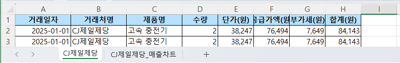

프롬프트 예시
당신은 파이썬 전문가입니다.
저는 파이썬 초보자이며 내 데스크탑의 VS코드에서 실행할 코드를 만들고 싶습니다.
[요구사항]
1) 필요한 라이브러리가 있다면 코드 실행 시 자동으로 설치되도록 해주세요.
(try-except 구조를 사용하여 없는 경우에만 설치하고, sys.executable을 활용해주세요)
2) 재사용이 가능하도록 주요 기능은 함수로 구성해주세요.
각 함수에는 한국어 docstring을 작성해주세요.
3) 주석은 단계 번호 형식으로 달아주세요.
예: # (1) CSV 파일 불러오기
중요한 줄/블록마다 **무엇을 하는지 + (이 작업을 하는 이유)**를 설명해주세요.
4) 코드 흐름을 이해하기 쉽게 main() 함수와
`if __name__ == "__main__": main()` 구조를 포함해 주세요.
5) 각 주요 단계마다 **[DEBUG]**로 시작하는 디버그용 print를 넣어주세요.
(예: 진행 단계, 변수 크기/타입, 샘플 값 등)
6) 코드 작성 후 아래 내용을 추가로 작성해주세요.
- 코드 전체 동작 요약
- 초보자가 자주 실수하는 부분 3개
7) 한국어 데이터 처리 시 반드시 다음을 포함해주세요:
- 그래프에 한글 포함 시: '맑은 고딕'(Malgun Gothic) 폰트로 설정하고,
마이너스 기호(-) 깨짐 방지 코드도 포함
[작업 설명]
## 목적
## INPUT
## PROCESS
## OUTPUT5.5견적서 입력하기
- 상황
- 견적서에 넣어야 할 데이터가 있는데 이것을 양식에 맞춰서 견적 번호별로 하나의 견적서로 만들어야함
- 견적번호가 여러개가 있고 견적 번호별로 하나의 시트를 만들고 PDF파일로 변환해야함
- INPUT
- 견적데이터
- 견적서양식
- PROCESS
- “견적데이터”의 내용을 기반으로 “견적 번호”를 기준으로 각각 한 장의 견적서를 만든다.
- 견적데이터에서 견적서에 필요한 내용을 자동으로 채운다.
- 각 품목은 아래의 표에 채워진다.
- OUTPUT
- 견적서가 각각의 시트로 저장된 엑셀파일
- 각 시트가 PDF로 변환된 파일
- 별도의 폴더에 저장
프롬프트 예시
[필요한 샘플들을 가짜 정보로 가공한 후 첨부] - 데이터, 양식, 제대로 생성되었을 경우 나와야 하는 샘플 결과물 --- prompt "견적_데이터_샘플"파일의 구조처럼 생긴 데이터를 "견적서_양식"에 맞춰서 자동으로 모든 "견적서번호"에 대한 파일을 만들고싶어. 어떻게 하면 될까?
5.6엑셀 파일 사용 시 주의 사항
- 데이터 프레임은 “데이터”를 다루는 형식이기 때문에 서식은 모두 사라짐
- 결과를 엑셀로 저장할 때에는 기본 서식에 헤더만 굵게 처리되어 저장
- 기본 세팅으로 불러올 경우 첫 시트만 가지고 오고 첫 행을 헤더로 인식
- 다른 경우를 처리하려고 할 경우 옵션을 설정해줘야 함
- 불러오려는 엑셀 파일이 열려 있을 경우 오류 발생
- 기본 형태
import pandas as pd # 판다스 라이브러리를 pd라고 줄여서 사용
df = pd.read_excel("파일.xlsx")3일차
3일차 교육 목표
- PDF파일에서 필요한 자료를 캡쳐할 수 있다.
- 파이썬으로 대시보드를 만들 수 있다.
- 파이썬으로 웹 크롤링을 할 수 있다.
- 생성형 AI API를 이용해서 보고서를 만들 수 있다.
- 생성된 파이썬 코드를 쉽게 활용하는 방법을 설명할 수 있다.
- 코딩 에이전트가 무엇인지 설명할 수 있다.
챗지피티: https://chatgpt.com/
파이썬 자동화 실습
파이썬 자동화 실습
1.1매출전표 캡쳐하기
- 상황
- 법인카드 사용후 증빙처리가 안된 지출이 있어서 매출전표에서 영수증을 캡쳐해야 함
- INPUT
- PROCESS
- OUTPUT
프롬프트
당신은 파이썬 전문가입니다.
저는 파이썬 초보자이며 내 데스크탑의 VS코드에서 실행할 코드를 만들고 싶습니다.
[요구사항]
1) 필요한 라이브러리가 있다면 코드 실행 시 자동으로 설치되도록 해주세요.
(try-except 구조를 사용하여 없는 경우에만 설치하고, sys.executable을 활용해주세요)
2) 재사용이 가능하도록 주요 기능은 함수로 구성해주세요.
각 함수에는 한국어 docstring을 작성해주세요.
3) 주석은 단계 번호 형식으로 달아주세요.
예: # (1) CSV 파일 불러오기
중요한 줄/블록마다 **무엇을 하는지 + (이 작업을 하는 이유)**를 설명해주세요.
4) 코드 흐름을 이해하기 쉽게 main() 함수와
`if __name__ == "__main__": main()` 구조를 포함해 주세요.
5) 각 주요 단계마다 **[DEBUG]**로 시작하는 디버그용 print를 넣어주세요.
(예: 진행 단계, 변수 크기/타입, 샘플 값 등)
6) 코드 작성 후 아래 내용을 추가로 작성해주세요.
- 코드 전체 동작 요약
- 초보자가 자주 실수하는 부분 3개
7) 한국어 데이터 처리 시 반드시 다음을 포함해주세요:
- 그래프에 한글 포함 시: '맑은 고딕'(Malgun Gothic) 폰트로 설정하고,
마이너스 기호(-) 깨짐 방지 코드도 포함
[작업 설명]
## 목적
## INPUT
## PROCESS
## OUTPUT당신은 파이썬 전문가입니다.
저는 파이썬 초보자이며 내 데스크탑의 VS코드에서 실행할 코드를 만들고 싶습니다.
[요구사항]
1) 필요한 라이브러리가 있다면 코드 실행 시 자동으로 설치되도록 해주세요.
(try-except 구조를 사용하여 없는 경우에만 설치하고, sys.executable을 활용해주세요)
2) 재사용이 가능하도록 주요 기능은 함수로 구성해주세요.
각 함수에는 한국어 docstring을 작성해주세요.
3) 주석은 단계 번호 형식으로 달아주세요.
예: # (1) CSV 파일 불러오기
중요한 줄/블록마다 **무엇을 하는지 + (이 작업을 하는 이유)**를 설명해주세요.
4) 코드 흐름을 이해하기 쉽게 main() 함수와
`if __name__ == "__main__": main()` 구조를 포함해 주세요.
5) 각 주요 단계마다 **[DEBUG]**로 시작하는 디버그용 print를 넣어주세요.
(예: 진행 단계, 변수 크기/타입, 샘플 값 등)
6) 코드 작성 후 아래 내용을 추가로 작성해주세요.
- 코드 전체 동작 요약
- 초보자가 자주 실수하는 부분 3개
7) 한국어 데이터 처리 시 반드시 다음을 포함해주세요:
- 그래프에 한글 포함 시: '맑은 고딕'(Malgun Gothic) 폰트로 설정하고,
마이너스 기호(-) 깨짐 방지 코드도 포함
[작업 설명]
## 목적
## INPUT
## PROCESS
## OUTPUT코드
1.2대시보드 만들기
템플릿
당신은 파이썬 전문가입니다.
저는 파이썬 초보자이며 내 데스크탑의 VS코드에서 실행할 코드를 만들고 싶습니다.
[요구사항]
1) 필요한 라이브러리가 있다면 코드 실행 시 자동으로 설치되도록 해주세요.
(try-except 구조를 사용하여 없는 경우에만 설치하고, sys.executable을 활용해주세요)
2) 재사용이 가능하도록 주요 기능은 함수로 구성해주세요.
각 함수에는 한국어 docstring을 작성해주세요.
3) 주석은 단계 번호 형식으로 달아주세요.
예: # (1) CSV 파일 불러오기
중요한 줄/블록마다 **무엇을 하는지 + (이 작업을 하는 이유)**를 설명해주세요.
4) 코드 흐름을 이해하기 쉽게 main() 함수와
`if __name__ == "__main__": main()` 구조를 포함해 주세요.
5) 각 주요 단계마다 **[DEBUG]**로 시작하는 디버그용 print를 넣어주세요.
(예: 진행 단계, 변수 크기/타입, 샘플 값 등)
6) 코드 작성 후 아래 내용을 추가로 작성해주세요.
- 코드 전체 동작 요약
- 초보자가 자주 실수하는 부분 3개
7) 한국어 데이터 처리 시 반드시 다음을 포함해주세요:
- 그래프에 한글 포함 시: '맑은 고딕'(Malgun Gothic) 폰트로 설정하고,
마이너스 기호(-) 깨짐 방지 코드도 포함
[작업 설명]
## 목적
## INPUT
## PROCESS
## OUTPUT프롬프트
당신은 파이썬 전문가입니다.
저는 파이썬 초보자이며 내 데스크탑의 VS코드에서 실행할 코드를 만들고 싶습니다.
[요구사항]
1) 필요한 라이브러리가 있다면 코드 실행 시 자동으로 설치되도록 해주세요.
(try-except 구조를 사용하여 없는 경우에만 설치하고, sys.executable을 활용해주세요)
2) 재사용이 가능하도록 주요 기능은 함수로 구성해주세요.
각 함수에는 한국어 docstring을 작성해주세요.
3) 주석은 단계 번호 형식으로 달아주세요.
예: # (1) CSV 파일 불러오기
중요한 줄/블록마다 **무엇을 하는지 + (이 작업을 하는 이유)**를 설명해주세요.
4) 코드 흐름을 이해하기 쉽게 main() 함수와
`if __name__ == "__main__": main()` 구조를 포함해 주세요.
5) 각 주요 단계마다 **[DEBUG]**로 시작하는 디버그용 print를 넣어주세요.
(예: 진행 단계, 변수 크기/타입, 샘플 값 등)
6) 코드 작성 후 아래 내용을 추가로 작성해주세요.
- 코드 전체 동작 요약
- 초보자가 자주 실수하는 부분 3개
7) 한국어 데이터 처리 시 반드시 다음을 포함해주세요:
- 그래프에 한글 포함 시: '맑은 고딕'(Malgun Gothic) 폰트로 설정하고,
마이너스 기호(-) 깨짐 방지 코드도 포함
[작업 설명]
## 목적
## INPUT
## PROCESS
## OUTPUT코드
# ============================================================
# 월별 매출 HTML 대시보드 생성기
# ============================================================
# 실행 환경:
# - Windows 데스크탑
# - VS코드에서 .py 파일로 실행
#
# 주요 기능:
# - 파일 탐색기에서 엑셀 파일 선택
# - '주문데이터' 시트 읽기
# - 월별 매출 HTML 대시보드 생성
# - 인터넷 연결 없이 열 수 있는 HTML 파일 생성
# ============================================================
# ============================================================
# 1. 기본 라이브러리 불러오기
# ============================================================
import sys
import subprocess
from pathlib import Path
import json
import tkinter as tk
from tkinter import filedialog
# ============================================================
# 2. 필요한 라이브러리 자동 설치
# ============================================================
def install_package_if_needed(import_name, install_name):
"""
필요한 라이브러리가 설치되어 있는지 확인하고,
설치되어 있지 않으면 자동으로 설치합니다.
Parameters
----------
import_name : str
import할 때 사용하는 라이브러리 이름입니다.
install_name : str
pip install에 사용할 패키지 이름입니다.
"""
try:
# (1) 라이브러리 import를 시도합니다.
# 이미 설치되어 있으면 이 단계에서 통과됩니다.
__import__(import_name)
print(f"[DEBUG] 라이브러리 확인 완료: {import_name}")
except ImportError:
# (2) 라이브러리가 없으면 현재 실행 중인 파이썬 환경에 설치합니다.
# sys.executable을 사용하면 VS코드에서 선택한 파이썬 환경에 설치됩니다.
print(f"[DEBUG] 라이브러리가 없습니다. 설치를 시작합니다: {install_name}")
subprocess.check_call([
sys.executable,
"-m",
"pip",
"install",
install_name
])
print(f"[DEBUG] 라이브러리 설치 완료: {install_name}")
def prepare_libraries():
"""
이 프로그램 실행에 필요한 외부 라이브러리를 준비합니다.
설치 대상:
- pandas: 엑셀 데이터 처리
- openpyxl: xlsx 파일 읽기
- plotly: HTML 차트 생성용 JavaScript 파일 제공
"""
# (1) pandas 설치 확인
install_package_if_needed("pandas", "pandas")
# (2) openpyxl 설치 확인
install_package_if_needed("openpyxl", "openpyxl")
# (3) plotly 설치 확인
install_package_if_needed("plotly", "plotly")
# (1) 필요한 라이브러리를 먼저 준비합니다.
prepare_libraries()
# ============================================================
# 3. 외부 라이브러리 불러오기
# ============================================================
import pandas as pd
import plotly
# ============================================================
# 4. 기본 설정값
# ============================================================
REQUIRED_COLUMNS = [
"주문일자",
"주문월",
"주문번호",
"고객명",
"고객구분",
"지역",
"지점",
"담당자",
"상품군",
"상품명",
"수량",
"단가",
"매출금액",
"할인금액",
"순매출",
"주문상태",
"결제수단"
]
NUMERIC_COLUMNS = [
"수량",
"단가",
"매출금액",
"할인금액",
"순매출"
]
TEXT_COLUMNS = [
"주문번호",
"고객명",
"고객구분",
"지역",
"지점",
"담당자",
"상품군",
"상품명",
"주문상태",
"결제수단"
]
DASHBOARD_COLORS = [
"#845ec2",
"#d65db1",
"#ff6f91",
"#ff9671",
"#ffc75f",
"#f9f871"
]
# ============================================================
# 5. 한글 폰트 설정
# ============================================================
def configure_korean_font_for_matplotlib():
"""
matplotlib 그래프에서 한글과 마이너스 기호가 깨지지 않도록 설정합니다.
현재 대시보드는 Plotly 기반 HTML로 생성되지만,
한국어 데이터 처리 요구사항을 충족하고,
추후 matplotlib 차트를 추가할 때도 대비하기 위해 포함합니다.
"""
try:
# (1) matplotlib이 설치되어 있는 경우에만 설정합니다.
import matplotlib.pyplot as plt
# (2) Windows 기본 한글 폰트인 맑은 고딕을 설정합니다.
plt.rcParams["font.family"] = "Malgun Gothic"
# (3) 마이너스 기호가 깨지지 않도록 설정합니다.
plt.rcParams["axes.unicode_minus"] = False
print("[DEBUG] matplotlib 한글 폰트 설정 완료: Malgun Gothic")
except ImportError:
# (4) 현재 코드는 Plotly를 사용하므로 matplotlib이 없어도 실행에는 문제가 없습니다.
print("[DEBUG] matplotlib이 설치되어 있지 않아 폰트 설정을 건너뜁니다.")
# ============================================================
# 6. 경로 및 파일 선택 함수
# ============================================================
def get_script_dir():
"""
현재 실행 중인 파이썬 파일이 있는 폴더 경로를 반환합니다.
결과 폴더를 실행 파일 위치 기준으로 생성하기 위해 사용합니다.
"""
try:
# (1) 일반적인 .py 파일 실행 환경에서는 __file__을 사용할 수 있습니다.
script_dir = Path(__file__).resolve().parent
except NameError:
# (2) 일부 대화형 환경에서는 __file__이 없을 수 있으므로 현재 폴더를 사용합니다.
script_dir = Path.cwd()
print(f"[DEBUG] 실행 파일 위치: {script_dir}")
return script_dir
def select_excel_file():
"""
파일 탐색기를 열어 사용자가 분석할 엑셀 파일을 선택하도록 합니다.
Returns
-------
Path
사용자가 선택한 엑셀 파일 경로입니다.
"""
# (1) tkinter 기본 창을 생성합니다.
root = tk.Tk()
# (2) 기본 창은 필요 없으므로 숨깁니다.
root.withdraw()
# (3) 파일 탐색기를 열어 .xlsx 파일을 선택하게 합니다.
file_path = filedialog.askopenfilename(
title="분석할 엑셀 주문 데이터 파일을 선택하세요",
filetypes=[
("Excel files", "*.xlsx"),
("All files", "*.*")
]
)
# (4) 사용자가 파일 선택을 취소한 경우 오류를 발생시킵니다.
if not file_path:
raise FileNotFoundError("엑셀 파일을 선택하지 않았습니다.")
selected_path = Path(file_path)
print(f"[DEBUG] 선택한 엑셀 파일: {selected_path}")
return selected_path
def create_result_folder(base_dir):
"""
실행 파일 위치에 '결과' 폴더를 생성하고 해당 경로를 반환합니다.
Parameters
----------
base_dir : Path
실행 파일이 있는 폴더 경로입니다.
Returns
-------
Path
결과 폴더 경로입니다.
"""
# (1) 결과 폴더 경로를 만듭니다.
result_dir = base_dir / "결과"
# (2) 결과 폴더가 없으면 생성합니다.
# exist_ok=True를 사용하면 이미 있어도 오류가 발생하지 않습니다.
result_dir.mkdir(exist_ok=True)
print(f"[DEBUG] 결과 폴더 경로: {result_dir}")
return result_dir
def make_unique_file_path(folder_path, file_name):
"""
같은 파일명이 이미 있으면 _1, _2처럼 번호를 붙여 고유한 파일 경로를 반환합니다.
Parameters
----------
folder_path : Path
파일을 저장할 폴더 경로입니다.
file_name : str
기본 파일명입니다.
Returns
-------
Path
중복되지 않는 최종 파일 경로입니다.
"""
# (1) 기본 저장 경로를 만듭니다.
file_path = folder_path / file_name
# (2) 같은 이름의 파일이 없으면 그대로 사용합니다.
if not file_path.exists():
print(f"[DEBUG] 저장 파일명 확정: {file_path.name}")
return file_path
# (3) 같은 이름의 파일이 있으면 파일명과 확장자를 분리합니다.
stem = file_path.stem
suffix = file_path.suffix
# (4) _1, _2 형식으로 번호를 붙이며 사용 가능한 파일명을 찾습니다.
index = 1
while True:
new_file_path = folder_path / f"{stem}_{index}{suffix}"
if not new_file_path.exists():
print(f"[DEBUG] 중복 파일명 발견. 새 파일명 확정: {new_file_path.name}")
return new_file_path
index += 1
# ============================================================
# 7. 엑셀 읽기 및 검증 함수
# ============================================================
def read_order_data(excel_path):
"""
선택한 엑셀 파일에서 '주문데이터' 시트를 읽어옵니다.
Parameters
----------
excel_path : Path
사용자가 선택한 엑셀 파일 경로입니다.
Returns
-------
pandas.DataFrame
주문 데이터입니다.
"""
print("[DEBUG] 엑셀 파일 읽기 시작")
# (1) 주문데이터 시트를 읽습니다.
# openpyxl 엔진을 사용하면 .xlsx 파일을 안정적으로 읽을 수 있습니다.
df = pd.read_excel(
excel_path,
sheet_name="주문데이터",
engine="openpyxl"
)
print(f"[DEBUG] 원본 데이터 크기: {df.shape}")
print(f"[DEBUG] 원본 컬럼 목록: {list(df.columns)}")
return df
def validate_columns(df):
"""
주문 데이터에 필요한 필수 컬럼이 모두 있는지 확인합니다.
Parameters
----------
df : pandas.DataFrame
엑셀에서 읽어온 주문 데이터입니다.
Returns
-------
pandas.DataFrame
컬럼명 앞뒤 공백이 제거된 DataFrame입니다.
"""
# (1) 컬럼명 앞뒤 공백을 제거합니다.
# 엑셀에서 헤더에 실수로 공백이 들어간 경우를 줄이기 위함입니다.
df.columns = [str(col).strip() for col in df.columns]
# (2) 필수 컬럼 중 누락된 컬럼을 찾습니다.
missing_columns = [
col for col in REQUIRED_COLUMNS
if col not in df.columns
]
# (3) 누락 컬럼이 있으면 오류를 발생시킵니다.
if missing_columns:
raise ValueError(
"필수 컬럼이 누락되었습니다.\n"
f"누락 컬럼: {missing_columns}\n"
f"현재 컬럼: {list(df.columns)}"
)
print("[DEBUG] 필수 컬럼 검증 완료")
return df
# ============================================================
# 8. 데이터 전처리 함수
# ============================================================
def convert_numeric_columns(df):
"""
수량, 단가, 매출금액, 할인금액, 순매출 컬럼을 숫자형으로 변환합니다.
엑셀에서 숫자가 문자나 콤마 포함 문자열로 들어온 경우에도
계산할 수 있게 하기 위한 처리입니다.
Parameters
----------
df : pandas.DataFrame
주문 데이터입니다.
Returns
-------
pandas.DataFrame
숫자 컬럼이 변환된 주문 데이터입니다.
"""
for col in NUMERIC_COLUMNS:
# (1) 숫자 컬럼에 콤마나 '원' 문자가 들어 있을 수 있으므로 문자열로 바꾼 뒤 정리합니다.
df[col] = (
df[col]
.astype(str)
.str.replace(",", "", regex=False)
.str.replace("원", "", regex=False)
.str.strip()
)
# (2) 숫자로 변환합니다.
# 변환할 수 없는 값은 NaN이 되므로 0으로 대체합니다.
df[col] = pd.to_numeric(df[col], errors="coerce").fillna(0)
print(f"[DEBUG] 숫자 변환 완료: {col}, 합계={df[col].sum():,.0f}")
return df
def preprocess_order_data(df):
"""
주문 데이터를 대시보드 생성에 적합한 형태로 전처리합니다.
처리 내용:
- 문자열 컬럼 결측값 처리
- 주문일자 날짜 변환
- 주문월 표시값 생성
- 숫자 컬럼 변환
- 주문일자 오름차순 정렬
Parameters
----------
df : pandas.DataFrame
원본 주문 데이터입니다.
Returns
-------
pandas.DataFrame
전처리된 주문 데이터입니다.
"""
print("[DEBUG] 데이터 전처리 시작")
# (1) 원본 데이터가 직접 변경되지 않도록 복사본을 만듭니다.
df = df.copy()
# (2) 문자열 컬럼의 결측값을 빈 문자열로 처리합니다.
# HTML 표에 nan이 표시되는 것을 방지하기 위함입니다.
for col in TEXT_COLUMNS:
df[col] = df[col].fillna("").astype(str).str.strip()
# (3) 주문일자를 날짜 형식으로 변환합니다.
# 변환 실패 값은 NaT가 됩니다.
df["주문일자"] = pd.to_datetime(df["주문일자"], errors="coerce")
# (4) 날짜 변환 실패 건수를 확인합니다.
invalid_date_count = df["주문일자"].isna().sum()
print(f"[DEBUG] 날짜 변환 실패 건수: {invalid_date_count:,}")
# (5) 주문일자가 없는 행은 월별 분석 기준이 없으므로 제외합니다.
df = df.dropna(subset=["주문일자"])
# (6) 숫자 컬럼을 숫자형으로 변환합니다.
df = convert_numeric_columns(df)
# (7) 주문월은 주문일자 기준으로 다시 생성합니다.
# 엑셀의 주문월 컬럼 형식이 불규칙할 수 있기 때문입니다.
df["주문월_표시"] = df["주문일자"].dt.strftime("%Y-%m")
# (8) HTML 표 표시용 날짜 문자열을 생성합니다.
df["주문일자_표시"] = df["주문일자"].dt.strftime("%Y-%m-%d")
# (9) 주문 상세 데이터는 주문일자 기준 오름차순으로 정렬합니다.
df = df.sort_values("주문일자", ascending=True).reset_index(drop=True)
print(f"[DEBUG] 전처리 후 데이터 크기: {df.shape}")
print(f"[DEBUG] 월 목록: {sorted(df['주문월_표시'].unique().tolist())}")
return df
# ============================================================
# 9. HTML 생성용 데이터 준비 함수
# ============================================================
def get_last_order_date_text(df):
"""
마지막 주문일자를 yymmdd 형식 문자열로 변환합니다.
파일명을 '매출주문_분석_yymmdd.html' 형식으로 만들기 위해 사용합니다.
Parameters
----------
df : pandas.DataFrame
전처리된 주문 데이터입니다.
Returns
-------
str
yymmdd 형식의 날짜 문자열입니다.
"""
# (1) 주문일자 중 가장 늦은 날짜를 찾습니다.
last_order_date = df["주문일자"].max()
# (2) 파일명에 사용할 yymmdd 형식으로 변환합니다.
date_text = last_order_date.strftime("%y%m%d")
print(f"[DEBUG] 마지막 주문일자: {last_order_date}")
print(f"[DEBUG] 파일명 날짜 문자열: {date_text}")
return date_text
def prepare_records_for_html(df):
"""
DataFrame을 HTML 내부 JavaScript에서 사용할 수 있는 레코드 목록으로 변환합니다.
Parameters
----------
df : pandas.DataFrame
전처리된 주문 데이터입니다.
Returns
-------
list
JavaScript에서 사용할 주문 데이터 목록입니다.
"""
records = []
for _, row in df.iterrows():
# (1) JavaScript에서 계산과 표시가 쉽도록 필요한 컬럼만 딕셔너리로 구성합니다.
record = {
"주문일자": row["주문일자_표시"],
"주문월": row["주문월_표시"],
"주문번호": row["주문번호"],
"고객명": row["고객명"],
"지점": row["지점"],
"담당자": row["담당자"],
"상품군": row["상품군"],
"상품명": row["상품명"],
"수량": int(row["수량"]),
"매출금액": float(row["매출금액"]),
"할인금액": float(row["할인금액"]),
"순매출": float(row["순매출"]),
"주문상태": row["주문상태"],
"결제수단": row["결제수단"]
}
records.append(record)
print(f"[DEBUG] HTML 전달용 레코드 수: {len(records):,}")
if records:
print(f"[DEBUG] 첫 번째 레코드 샘플: {records[0]}")
return records
def get_embedded_plotly_js():
"""
설치된 plotly 패키지 내부의 plotly.min.js 내용을 읽어옵니다.
HTML 파일 하나만으로 차트가 작동하게 만들기 위해 사용합니다.
즉, 인터넷 연결 없이 HTML 파일을 열 수 있습니다.
Returns
-------
str
plotly.min.js 파일 내용입니다.
"""
# (1) plotly 패키지 안에 포함된 JavaScript 파일 경로를 찾습니다.
plotly_js_path = (
Path(plotly.__file__).resolve().parent
/ "package_data"
/ "plotly.min.js"
)
# (2) JavaScript 파일 내용을 읽습니다.
plotly_js = plotly_js_path.read_text(encoding="utf-8")
print(f"[DEBUG] Plotly JS 파일 경로: {plotly_js_path}")
print(f"[DEBUG] Plotly JS 크기: {len(plotly_js):,} 문자")
return plotly_js
# ============================================================
# 10. HTML 생성 함수
# ============================================================
def build_dashboard_html(records, months, plotly_js):
"""
주문 데이터와 Plotly JS를 포함한 단일 HTML 대시보드를 생성합니다.
Parameters
----------
records : list
JavaScript에서 사용할 주문 데이터 목록입니다.
months : list
월 선택 필터에 표시할 월 목록입니다.
plotly_js : str
HTML에 내장할 Plotly JavaScript 코드입니다.
Returns
-------
str
완성된 HTML 문자열입니다.
"""
# (1) Python 데이터를 JavaScript에서 사용할 JSON 문자열로 변환합니다.
# ensure_ascii=False를 사용해야 한글이 깨지지 않습니다.
records_json = json.dumps(records, ensure_ascii=False)
months_json = json.dumps(months, ensure_ascii=False)
colors_json = json.dumps(DASHBOARD_COLORS, ensure_ascii=False)
# (2) JSON 안에 </script>가 들어오는 예외 상황을 방지합니다.
records_json = records_json.replace("</", "<\\/")
months_json = months_json.replace("</", "<\\/")
colors_json = colors_json.replace("</", "<\\/")
# (3) HTML 템플릿을 만듭니다.
# f-string을 사용하지 않고 placeholder를 replace하는 이유는
# JavaScript의 중괄호와 Python f-string 중괄호가 충돌하는 것을 방지하기 위함입니다.
html = r"""
<!DOCTYPE html>
<html lang="ko">
<head>
<meta charset="UTF-8">
<title>월별 매출 주문 분석 대시보드</title>
<style>
* {
box-sizing: border-box;
}
body {
margin: 0;
padding: 0;
background: #f4f6f8;
font-family: 'Malgun Gothic', '맑은 고딕', Arial, sans-serif;
color: #222;
}
.page {
width: 96%;
max-width: 1500px;
margin: 24px auto;
}
.header {
background: #ffffff;
border-radius: 18px;
padding: 24px 28px;
box-shadow: 0 4px 18px rgba(0, 0, 0, 0.06);
margin-bottom: 18px;
}
.header-top {
display: flex;
justify-content: space-between;
align-items: center;
gap: 18px;
flex-wrap: wrap;
}
h1 {
margin: 0;
font-size: 28px;
color: #2f2f3a;
}
.subtitle {
margin-top: 8px;
color: #666;
font-size: 14px;
}
.filter-box {
display: flex;
align-items: center;
gap: 10px;
background: #f7f7fb;
border: 1px solid #e3e5ef;
border-radius: 12px;
padding: 12px 14px;
}
.filter-box label {
font-weight: 700;
color: #333;
}
select {
min-width: 150px;
padding: 9px 12px;
border-radius: 10px;
border: 1px solid #cfd4dc;
background: #ffffff;
font-family: 'Malgun Gothic', '맑은 고딕', Arial, sans-serif;
font-size: 14px;
}
.kpi-grid {
display: grid;
grid-template-columns: repeat(5, 1fr);
gap: 14px;
margin-bottom: 18px;
}
.kpi-card {
background: #ffffff;
border-radius: 16px;
padding: 18px 18px;
box-shadow: 0 4px 18px rgba(0, 0, 0, 0.06);
border-top: 5px solid #845ec2;
}
.kpi-card:nth-child(2) {
border-top-color: #d65db1;
}
.kpi-card:nth-child(3) {
border-top-color: #ff6f91;
}
.kpi-card:nth-child(4) {
border-top-color: #ff9671;
}
.kpi-card:nth-child(5) {
border-top-color: #ffc75f;
}
.kpi-title {
font-size: 13px;
color: #666;
margin-bottom: 10px;
font-weight: 700;
}
.kpi-value {
font-size: 24px;
font-weight: 800;
color: #252530;
word-break: keep-all;
}
.chart-grid {
display: grid;
grid-template-columns: 1fr 1fr;
gap: 18px;
margin-bottom: 18px;
}
.chart-card {
background: #ffffff;
border-radius: 18px;
padding: 14px 16px 8px 16px;
box-shadow: 0 4px 18px rgba(0, 0, 0, 0.06);
min-height: 410px;
}
.chart-title {
font-size: 17px;
font-weight: 800;
margin: 8px 4px 2px 4px;
color: #2f2f3a;
}
.chart {
width: 100%;
height: 350px;
}
.table-card {
background: #ffffff;
border-radius: 18px;
padding: 18px 18px 22px 18px;
box-shadow: 0 4px 18px rgba(0, 0, 0, 0.06);
margin-bottom: 30px;
}
.table-header {
display: flex;
justify-content: space-between;
align-items: center;
gap: 12px;
margin-bottom: 12px;
flex-wrap: wrap;
}
.table-title {
font-size: 18px;
font-weight: 800;
color: #2f2f3a;
}
.table-count {
font-size: 13px;
color: #666;
}
.table-wrapper {
width: 100%;
overflow-x: auto;
overflow-y: auto;
max-height: 470px;
border: 1px solid #e6e8ef;
border-radius: 12px;
}
table {
width: 100%;
border-collapse: collapse;
min-width: 1100px;
font-size: 13px;
}
thead {
background: #2f4858;
color: #ffffff;
}
thead th {
position: sticky;
top: 0;
z-index: 2;
background: #2f4858;
}
th, td {
padding: 10px 9px;
border-bottom: 1px solid #edf0f4;
text-align: left;
white-space: nowrap;
}
th {
font-weight: 700;
}
tbody tr:hover {
background: #faf6ff;
}
.num {
text-align: right;
}
.empty-message {
padding: 30px;
text-align: center;
color: #777;
}
.footer-note {
color: #777;
font-size: 12px;
text-align: right;
margin-top: 8px;
}
@media (max-width: 1100px) {
.kpi-grid {
grid-template-columns: repeat(2, 1fr);
}
.chart-grid {
grid-template-columns: 1fr;
}
}
@media (max-width: 640px) {
.kpi-grid {
grid-template-columns: 1fr;
}
h1 {
font-size: 22px;
}
.kpi-value {
font-size: 20px;
}
}
</style>
<script>
__PLOTLY_JS__
</script>
</head>
<body>
<div class="page">
<div class="header">
<div class="header-top">
<div>
<h1>월별 매출 주문 분석 대시보드</h1>
<div class="subtitle">
월 선택에 따라 KPI, 차트, 상세 데이터가 자동으로 변경됩니다.
단, 월별 순매출 추이 차트는 전체 기간 기준으로 표시됩니다.
</div>
</div>
<div class="filter-box">
<label for="monthFilter">월 선택</label>
<select id="monthFilter"></select>
</div>
</div>
</div>
<div class="kpi-grid">
<div class="kpi-card">
<div class="kpi-title">총매출</div>
<div class="kpi-value" id="kpiTotalSales">0원</div>
</div>
<div class="kpi-card">
<div class="kpi-title">순매출</div>
<div class="kpi-value" id="kpiNetSales">0원</div>
</div>
<div class="kpi-card">
<div class="kpi-title">주문건수</div>
<div class="kpi-value" id="kpiOrderCount">0건</div>
</div>
<div class="kpi-card">
<div class="kpi-title">평균 주문금액</div>
<div class="kpi-value" id="kpiAverageOrder">0원</div>
</div>
<div class="kpi-card">
<div class="kpi-title">취소율</div>
<div class="kpi-value" id="kpiCancelRate">0.0%</div>
</div>
</div>
<div class="chart-grid">
<div class="chart-card">
<div class="chart-title">월별 순매출 추이(전체)</div>
<div id="monthlyTrendChart" class="chart"></div>
</div>
<div class="chart-card">
<div class="chart-title">상품군별 매출 비중</div>
<div id="categoryDonutChart" class="chart"></div>
</div>
<div class="chart-card">
<div class="chart-title">지점별 순매출</div>
<div id="branchSalesChart" class="chart"></div>
</div>
<div class="chart-card">
<div class="chart-title">결제수단별 주문건수</div>
<div id="paymentCountChart" class="chart"></div>
</div>
<div class="chart-card">
<div class="chart-title">담당자별 순매출</div>
<div id="managerSalesChart" class="chart"></div>
</div>
<div class="chart-card">
<div class="chart-title">상품별 매출액 TOP 10</div>
<div id="productTopChart" class="chart"></div>
</div>
</div>
<div class="table-card">
<div class="table-header">
<div class="table-title">주문 상세 데이터</div>
<div class="table-count" id="tableCount">0건</div>
</div>
<div class="table-wrapper">
<table>
<thead>
<tr>
<th>주문일자</th>
<th>주문번호</th>
<th>고객명</th>
<th>지점</th>
<th>담당자</th>
<th>상품군</th>
<th>상품명</th>
<th class="num">수량</th>
<th class="num">매출금액</th>
<th class="num">할인금액</th>
<th class="num">순매출</th>
<th>주문상태</th>
<th>결제수단</th>
</tr>
</thead>
<tbody id="detailTableBody"></tbody>
</table>
</div>
<div class="footer-note">
상세 데이터는 주문일자 기준 오름차순으로 정렬됩니다.
</div>
</div>
</div>
<script>
const rawData = __RECORDS_JSON__;
const monthList = __MONTHS_JSON__;
const chartColors = __COLORS_JSON__;
const moneyFormatter = new Intl.NumberFormat("ko-KR");
const countFormatter = new Intl.NumberFormat("ko-KR");
const baseFont = {
family: "'Malgun Gothic', '맑은 고딕', Arial, sans-serif",
size: 12,
color: "#333"
};
const commonLayout = {
font: baseFont,
paper_bgcolor: "#ffffff",
plot_bgcolor: "#ffffff",
margin: {
l: 60,
r: 30,
t: 35,
b: 65
},
hoverlabel: {
font: baseFont
}
};
const commonConfig = {
responsive: true,
displaylogo: false,
modeBarButtonsToRemove: [
"lasso2d",
"select2d"
]
};
function formatMoney(value) {
return moneyFormatter.format(Math.round(value)) + "원";
}
function formatCount(value) {
return countFormatter.format(value) + "건";
}
function sumByKey(data, keyField, valueField) {
const result = {};
data.forEach(row => {
const key = row[keyField] || "미분류";
const value = Number(row[valueField]) || 0;
if (!result[key]) {
result[key] = 0;
}
result[key] += value;
});
return result;
}
function countByKey(data, keyField) {
const result = {};
data.forEach(row => {
const key = row[keyField] || "미분류";
if (!result[key]) {
result[key] = 0;
}
result[key] += 1;
});
return result;
}
function objectToSortedArrays(obj, descending = true, limit = null) {
let entries = Object.entries(obj);
entries.sort((a, b) => {
if (descending) {
return b[1] - a[1];
}
return a[1] - b[1];
});
if (limit !== null) {
entries = entries.slice(0, limit);
}
return {
labels: entries.map(item => item[0]),
values: entries.map(item => item[1])
};
}
function getUniqueOrderCount(data) {
const orderSet = new Set();
data.forEach(row => {
if (row["주문번호"]) {
orderSet.add(row["주문번호"]);
}
});
return orderSet.size;
}
function getCancelOrderCount(data) {
const cancelSet = new Set();
data.forEach(row => {
const status = String(row["주문상태"] || "");
if (status.includes("취소")) {
if (row["주문번호"]) {
cancelSet.add(row["주문번호"]);
}
}
});
return cancelSet.size;
}
function filterDataByMonth(selectedMonth) {
if (selectedMonth === "전체") {
return rawData;
}
return rawData.filter(row => row["주문월"] === selectedMonth);
}
function setupMonthFilter() {
const select = document.getElementById("monthFilter");
const optionAll = document.createElement("option");
optionAll.value = "전체";
optionAll.textContent = "전체";
select.appendChild(optionAll);
monthList.forEach(month => {
const option = document.createElement("option");
option.value = month;
option.textContent = month;
select.appendChild(option);
});
select.addEventListener("change", () => {
updateDashboard(select.value);
});
}
function updateKpi(data) {
const totalSales = data.reduce((sum, row) => {
return sum + Number(row["매출금액"] || 0);
}, 0);
const netSales = data.reduce((sum, row) => {
return sum + Number(row["순매출"] || 0);
}, 0);
const orderCount = getUniqueOrderCount(data);
const cancelOrderCount = getCancelOrderCount(data);
const averageOrder = orderCount === 0 ? 0 : netSales / orderCount;
const cancelRate = orderCount === 0 ? 0 : cancelOrderCount / orderCount * 100;
document.getElementById("kpiTotalSales").textContent = formatMoney(totalSales);
document.getElementById("kpiNetSales").textContent = formatMoney(netSales);
document.getElementById("kpiOrderCount").textContent = formatCount(orderCount);
document.getElementById("kpiAverageOrder").textContent = formatMoney(averageOrder);
document.getElementById("kpiCancelRate").textContent = cancelRate.toFixed(1) + "%";
}
function drawMonthlyTrendChart() {
const monthlySum = sumByKey(rawData, "주문월", "순매출");
const sortedMonths = Object.keys(monthlySum).sort();
const values = sortedMonths.map(month => monthlySum[month]);
const trace = {
x: sortedMonths,
y: values,
type: "scatter",
mode: "lines+markers",
line: {
width: 4,
color: chartColors[0]
},
marker: {
size: 9,
color: chartColors[2]
},
hovertemplate: "%{x}<br>순매출: %{y:,.0f}원<extra></extra>"
};
const layout = {
...commonLayout,
yaxis: {
tickformat: ",.0f",
ticksuffix: "원",
gridcolor: "#eef1f5"
},
xaxis: {
tickangle: 0,
automargin: true,
gridcolor: "#f5f6f8"
}
};
Plotly.newPlot("monthlyTrendChart", [trace], layout, commonConfig);
}
function drawCategoryDonutChart(data) {
const categorySum = sumByKey(data, "상품군", "매출금액");
const arrays = objectToSortedArrays(categorySum, true);
const trace = {
labels: arrays.labels,
values: arrays.values,
type: "pie",
hole: 0.55,
marker: {
colors: chartColors
},
textinfo: "label+percent",
hovertemplate: "%{label}<br>합계 금액: %{value:,.0f}원<br>비중: %{percent}<extra></extra>"
};
const layout = {
...commonLayout,
margin: {
l: 20,
r: 120,
t: 35,
b: 30
},
legend: {
orientation: "v",
x: 1.02,
y: 0.5,
xanchor: "left",
yanchor: "middle"
}
};
Plotly.newPlot("categoryDonutChart", [trace], layout, commonConfig);
}
function drawVerticalBarChart(divId, labels, values, hoverName, valueSuffix = "원", tickAngle = 0) {
const trace = {
x: labels,
y: values,
type: "bar",
marker: {
color: labels.map((_, index) => chartColors[index % chartColors.length])
},
hovertemplate: `%{x}<br>${hoverName}: %{y:,.0f}${valueSuffix}<extra></extra>`
};
const layout = {
...commonLayout,
margin: {
l: 60,
r: 30,
t: 35,
b: 80
},
yaxis: {
tickformat: ",.0f",
gridcolor: "#eef1f5"
},
xaxis: {
tickangle: tickAngle,
automargin: true,
gridcolor: "#f5f6f8"
}
};
Plotly.newPlot(divId, [trace], layout, commonConfig);
}
function drawHorizontalBarChart(divId, labels, values, hoverName, valueSuffix = "원") {
const trace = {
x: values,
y: labels,
type: "bar",
orientation: "h",
marker: {
color: labels.map((_, index) => chartColors[index % chartColors.length])
},
hovertemplate: `%{y}<br>${hoverName}: %{x:,.0f}${valueSuffix}<extra></extra>`
};
const layout = {
...commonLayout,
margin: {
l: 130,
r: 30,
t: 35,
b: 45
},
xaxis: {
tickformat: ",.0f",
gridcolor: "#eef1f5"
},
yaxis: {
automargin: true,
autorange: "reversed",
gridcolor: "#f5f6f8"
}
};
Plotly.newPlot(divId, [trace], layout, commonConfig);
}
function drawBranchSalesChart(data) {
const result = objectToSortedArrays(
sumByKey(data, "지점", "순매출"),
true
);
drawVerticalBarChart(
"branchSalesChart",
result.labels,
result.values,
"순매출",
"원",
0
);
}
function drawPaymentCountChart(data) {
const result = objectToSortedArrays(
countByKey(data, "결제수단"),
true
);
drawVerticalBarChart(
"paymentCountChart",
result.labels,
result.values,
"주문건수",
"건",
0
);
}
function drawManagerSalesChart(data) {
const result = objectToSortedArrays(
sumByKey(data, "담당자", "순매출"),
true
);
drawHorizontalBarChart(
"managerSalesChart",
result.labels,
result.values,
"순매출",
"원"
);
}
function drawProductTopChart(data) {
const result = objectToSortedArrays(
sumByKey(data, "상품명", "매출금액"),
true,
10
);
drawHorizontalBarChart(
"productTopChart",
result.labels,
result.values,
"매출액",
"원"
);
}
function updateDetailTable(data) {
const tbody = document.getElementById("detailTableBody");
const tableCount = document.getElementById("tableCount");
tbody.innerHTML = "";
const sortedData = [...data].sort((a, b) => {
return new Date(a["주문일자"]) - new Date(b["주문일자"]);
});
tableCount.textContent = formatCount(sortedData.length);
if (sortedData.length === 0) {
const row = document.createElement("tr");
const cell = document.createElement("td");
cell.colSpan = 13;
cell.className = "empty-message";
cell.textContent = "표시할 주문 데이터가 없습니다.";
row.appendChild(cell);
tbody.appendChild(row);
return;
}
sortedData.forEach(row => {
const tr = document.createElement("tr");
const columns = [
"주문일자",
"주문번호",
"고객명",
"지점",
"담당자",
"상품군",
"상품명",
"수량",
"매출금액",
"할인금액",
"순매출",
"주문상태",
"결제수단"
];
columns.forEach(col => {
const td = document.createElement("td");
if (["수량", "매출금액", "할인금액", "순매출"].includes(col)) {
td.className = "num";
if (col === "수량") {
td.textContent = countFormatter.format(Number(row[col] || 0));
} else {
td.textContent = formatMoney(Number(row[col] || 0));
}
} else {
td.textContent = row[col] || "";
}
tr.appendChild(td);
});
tbody.appendChild(tr);
});
}
function updateDashboard(selectedMonth) {
const filteredData = filterDataByMonth(selectedMonth);
updateKpi(filteredData);
drawMonthlyTrendChart();
drawCategoryDonutChart(filteredData);
drawBranchSalesChart(filteredData);
drawPaymentCountChart(filteredData);
drawManagerSalesChart(filteredData);
drawProductTopChart(filteredData);
updateDetailTable(filteredData);
}
document.addEventListener("DOMContentLoaded", () => {
setupMonthFilter();
updateDashboard("전체");
});
</script>
</body>
</html>
"""
# (4) placeholder를 실제 데이터로 교체합니다.
html = html.replace("__PLOTLY_JS__", plotly_js)
html = html.replace("__RECORDS_JSON__", records_json)
html = html.replace("__MONTHS_JSON__", months_json)
html = html.replace("__COLORS_JSON__", colors_json)
print("[DEBUG] HTML 문자열 생성 완료")
return html
# ============================================================
# 11. HTML 저장 함수
# ============================================================
def save_html_file(html, output_path):
"""
생성된 HTML 문자열을 파일로 저장합니다.
Parameters
----------
html : str
저장할 HTML 문자열입니다.
output_path : Path
저장할 HTML 파일 경로입니다.
"""
# (1) HTML 파일을 UTF-8로 저장합니다.
# 한글이 깨지지 않도록 encoding을 명시합니다.
output_path.write_text(html, encoding="utf-8")
print(f"[DEBUG] HTML 파일 저장 완료: {output_path}")
# ============================================================
# 12. 메인 실행 함수
# ============================================================
def main():
"""
전체 프로그램 실행 흐름을 관리합니다.
실행 순서:
1. 한글 폰트 설정
2. 엑셀 파일 선택
3. 주문데이터 시트 읽기
4. 필수 컬럼 검증
5. 데이터 전처리
6. HTML 대시보드 생성
7. 결과 폴더에 HTML 저장
"""
try:
print("[DEBUG] 프로그램 시작")
# (1) matplotlib 한글 폰트 설정을 수행합니다.
configure_korean_font_for_matplotlib()
# (2) 현재 실행 파일 위치를 확인합니다.
script_dir = get_script_dir()
# (3) 사용자가 엑셀 파일을 선택합니다.
excel_path = select_excel_file()
# (4) 엑셀 파일에서 주문데이터 시트를 읽습니다.
df = read_order_data(excel_path)
# (5) 필수 컬럼이 모두 있는지 검증합니다.
df = validate_columns(df)
# (6) 날짜, 숫자, 월 표시값 등을 전처리합니다.
df = preprocess_order_data(df)
# (7) 전처리 후 데이터가 비어 있으면 대시보드를 만들 수 없으므로 오류를 발생시킵니다.
if df.empty:
raise ValueError("전처리 후 남은 데이터가 없습니다. 주문일자 값을 확인해주세요.")
# (8) 실행 파일 위치에 결과 폴더를 생성합니다.
result_dir = create_result_folder(script_dir)
# (9) 마지막 주문일자를 기준으로 파일명 날짜 문자열을 만듭니다.
date_text = get_last_order_date_text(df)
# (10) 기본 HTML 파일명을 만듭니다.
base_file_name = f"매출주문_분석_{date_text}.html"
# (11) 같은 파일명이 있으면 _1, _2를 붙여 고유한 저장 경로를 만듭니다.
output_path = make_unique_file_path(result_dir, base_file_name)
# (12) HTML에 넣을 주문 데이터 레코드를 준비합니다.
records = prepare_records_for_html(df)
# (13) 월 선택 필터에 표시할 월 목록을 준비합니다.
months = sorted(df["주문월_표시"].unique().tolist())
print(f"[DEBUG] 월 선택 필터 개수: {len(months):,}")
print(f"[DEBUG] 월 선택 필터 목록: {months}")
# (14) 인터넷 없이 열 수 있도록 Plotly JS를 읽어옵니다.
plotly_js = get_embedded_plotly_js()
# (15) HTML 대시보드를 생성합니다.
html = build_dashboard_html(records, months, plotly_js)
# (16) HTML 파일을 저장합니다.
save_html_file(html, output_path)
print("[DEBUG] 프로그램 정상 종료")
print("=" * 70)
print("대시보드 생성이 완료되었습니다.")
print(f"저장 위치: {output_path}")
print("=" * 70)
except Exception as e:
# (17) 오류 발생 시 초보자도 원인을 확인할 수 있도록 출력합니다.
print("[DEBUG] 오류 발생")
print("=" * 70)
print("프로그램 실행 중 오류가 발생했습니다.")
print(f"오류 내용: {e}")
print("=" * 70)
# ============================================================
# 13. 프로그램 실행 지점
# ============================================================
if __name__ == "__main__":
main()1.대시보드란
- 여러 데이터를 한눈에 볼 수 있도록 정리한 화면
- 표, 그래프, 핵심 지표를 함께 보여주는 자료
- 데이터를 단순히 나열하는 것이 아니라 판단하기 쉽게 정리한 결과물
- 업무 현황, 문제 지점, 변화 흐름을 빠르게 파악하기 위한 도구
2.대시보드가 필요한 이유
3.데이터를 빠르게 이해할 수 있음
- 원본 데이터는 행과 열이 많아 전체 흐름을 파악하기 어려움
- 대시보드는 데이터를 요약해서 핵심만 보여줌
- 숫자만 보는 것보다 그래프와 지표를 함께 보면 이해가 빠름
4.중요한 정보를 먼저 볼 수 있음
- 모든 데이터가 똑같이 중요한 것은 아님
- 의사결정에 필요한 핵심 정보를 먼저 보여줘야 함
- 예: 총매출, 순매출, 주문건수, 평균 주문금액
5.비교와 흐름을 쉽게 볼 수 있음
- 지점별 차이
- 담당자별 차이
- 상품별 순위
- 월별 변화
- 결제수단별 비중
6.반복 보고 업무를 줄일 수 있음
- 매번 엑셀을 열고, 필터링하고, 그래프를 만드는 작업을 줄일 수 있음
- 같은 형식의 보고서를 반복해서 만들 때 효과적
- 데이터만 바꾸면 같은 구조의 대시보드를 다시 만들 수 있음
7.업무 판단 속도를 높일 수 있음
- 어디가 잘되고 있는지 확인 가능
- 어디에 문제가 있는지 확인 가능
- 다음에 무엇을 해야 할지 결정하기 쉬움
8.좋은 대시보드의 핵심
9.목적이 분명해야 함
- 대시보드는 먼저 목적을 정해야 함
- “무엇을 보여줄 것인가”보다 “무엇을 판단할 것인가”가 중요함
예시
| 대시보드 종류 | 목적 |
|---|---|
| 매출 대시보드 | 매출 흐름과 주요 상품 파악 |
| 교육 만족도 대시보드 | 만족도와 개선 필요 항목 파악 |
| 출석 대시보드 | 결석률이 높은 대상자 확인 |
| 업무 현황 대시보드 | 지연 업무와 담당자별 처리량 확인 |
| 설문 분석 대시보드 | 응답 경향과 주요 의견 파악 |
10.핵심 지표를 먼저 보여줘야 함
- 가장 중요한 숫자는 상단에 배치
- 사용자가 화면을 열자마자 전체 상황을 이해할 수 있어야 함
예시
| 핵심 지표 | 의미 |
|---|---|
| 총매출 | 전체 매출 규모 |
| 순매출 | 할인 후 실제 매출 |
| 주문건수 | 거래 발생 횟수 |
| 평균 주문금액 | 주문 1건당 평균 금액 |
11.표와 그래프를 적절히 사용해야 함
| 보고 싶은 내용 | 적합한 표현 |
|---|---|
| 정확한 개별 데이터 | 표 |
| 항목별 비교 | 막대그래프 |
| 시간 흐름 | 선그래프 |
| 비율 | 원그래프 또는 막대그래프 |
| 순위 | 가로막대그래프 |
| 상세 내역 | 스크롤 가능한 표 |
12.바로 해석할 수 있어야 함
- 제목이 명확해야 함
- 단위가 표시되어야 함
- 큰 값부터 정렬되어야 함
- 색상이 과하지 않아야 함
- 숫자 라벨이 필요할 때 표시되어야 함
- 보는 사람이 별도 설명 없이 이해할 수 있어야 함
13.원본 데이터와 연결되어 있어야 함
- 대시보드는 원본 데이터에서 출발함
- 원본 데이터가 바뀌면 대시보드도 다시 만들 수 있어야 함
- 자동화하려면 데이터 흐름이 명확해야 함
기본 흐름
- 원본 데이터
- 데이터 정리
- 그룹별 요약
- 차트 생성
- 대시보드 화면 구성
14.HTML 형식으로 만드는 이유
15.웹브라우저에서 바로 열 수 있음
- 크롬, 엣지 같은 브라우저에서 바로 확인 가능
- 별도 프로그램 설치가 필요 없음
- HTML 파일을 더블클릭하면 대시보드가 열림
예시
매출_대시보드.html
16.화면 구성이 자유로움
- 카드, 표, 차트, 버튼, 필터 등을 자유롭게 배치 가능
- 엑셀보다 보고서형 화면을 만들기 좋음
- 한 화면 안에 핵심 지표와 그래프를 구조적으로 배치 가능
예시 구조
[총매출] [순매출] [주문건수] [평균 주문금액] [월별 매출 추이] [지점별 매출] [결제수단별 주문건수] [상품별 매출 TOP 10] [주문 상세 데이터]
17.인터랙티브 기능을 넣을 수 있음
- 필터
- 검색
- 정렬
- 스크롤 표
- 마우스 오버 시 상세 값 표시
- 조건 선택 후 화면 변경
18.공유하기 쉬움
| 공유 방식 | 설명 |
|---|---|
| 파일 공유 | HTML 파일을 메일이나 메신저로 전달 |
| 공유 폴더 | 사내 공유 폴더에 저장 |
| 웹 연결 | 홈페이지나 내부 포털에 연결 |
| PDF 저장 | 브라우저에서 PDF로 저장 |
19.파이썬 자동화와 연결하기 좋음
- 파이썬은 데이터 처리에 적합함
- HTML은 결과 화면 구성에 적합함
- 두 가지를 연결하면 자동화 결과물을 보기 좋게 만들 수 있음
역할 구분
파이썬: 데이터 불러오기, 정리, 계산, 요약 HTML: 결과 화면 구성, 차트 표시, 표 표시
20.HTML 대시보드 제작 흐름
- 엑셀 파일 불러오기
- 필요한 열 정리하기
- 데이터 형식 정리하기
- 지점별, 상품별, 월별로 요약하기
- 그래프 만들기
- HTML 화면에 배치하기
- 대시보드 파일로 저장하기
21.AI에게 일을 명확하게 시키기
좋지 않은 요청
매출 데이터로 대시보드 만들어줘.
좋은 요청
엑셀 파일을 불러와서 매출 대시보드를 만들어줘. 상단에는 총매출, 순매출, 주문건수, 평균 주문금액을 카드 형태로 보여줘. 중간에는 월별 순매출 추이 그래프를 넣어줘. 아래에는 지점별 순매출, 결제수단별 주문건수, 상품별 매출 TOP 10을 보여줘. 마지막에는 주문 상세 데이터를 표로 보여줘. 결과는 HTML 파일로 저장해줘.
22.대시보드 제작 전 확인 질문
| 질문 | 예시 |
|---|---|
| 무엇을 판단하려고 하는가? | 매출이 좋은 지점과 부진한 지점을 찾는다 |
| 누가 볼 자료인가? | 팀장, 임원, 실무자 |
| 가장 중요한 숫자는 무엇인가? | 순매출, 주문건수, 평균 주문금액 |
| 어떤 기준으로 비교할 것인가? | 월별, 지점별, 담당자별, 상품별 |
| 결과물은 어떻게 공유할 것인가? | HTML 파일, PDF, 사내 공유 폴더 |
| 반복해서 사용할 것인가? | 매월 같은 양식으로 업데이트 |
23.정리
- 대시보드는 데이터를 판단하기 쉽게 정리한 화면
- 좋은 대시보드는 목적이 분명해야 함
- 핵심 지표를 먼저 보여줘야 함
- 표와 그래프를 적절히 함께 사용해야 함
- HTML 형식은 브라우저에서 바로 열 수 있어 공유가 쉬움
- HTML은 화면 구성이 자유롭고 인터랙티브 기능을 넣기 좋음
- 파이썬은 데이터 처리, HTML은 결과 화면 구성에 적합함
- 대시보드 실습은 자동화의 전체 흐름을 설명하기 좋음
웹 크롤링
웹 크롤링
2.1웹 크롤링이란?
1.웹크롤링의 개념
- 정의:
웹크롤링(Web Crawling)은 인터넷에 공개된 웹페이지의 정보를 자동으로 탐색하고 수집하는 기술을 의미함
사람이 브라우저로 일일이 접속해 데이터를 복사하는 일을 프로그램이 대신 수행하는 과정임
- 기본 원리:
- 크롤러(Crawler) 또는 스파이더(Spider)라 불리는 프로그램이 웹페이지의 URL을 요청함
- 서버에서 받은 HTML 문서를 분석하여 필요한 데이터만 추출함
- 추출된 데이터를 정리·저장하여 분석, 통계, 자동화 등에 활용함
2.웹크롤링이 필요한 이유
- 데이터 자동 수집의 효율성
- 수백, 수천 개의 웹페이지에서 정보를 손으로 복사하는 것은 비효율적임
- 크롤링을 통해 반복적인 데이터 수집 과정을 자동화할 수 있음
- 데이터 기반 의사결정의 필요성
- 웹에는 기업, 시장, 사용자, 제품 등에 대한 공개 데이터가 많음
- 이러한 데이터를 자동으로 수집해 분석하면 마케팅, 연구, 경쟁분석 등에 활용 가능
- 업무 자동화의 확장성
- 크롤링은 단순 수집뿐 아니라 스케줄링, 정제, 시각화, 보고서 작성 등의 자동화 파이프라인으로 확장 가능
- 예: 매일 오전 특정 사이트에서 환율 정보를 수집하고 엑셀 보고서를 자동 생성
3.웹크롤링으로 할 수 있는 일
4.정보 수집 자동화
- 뉴스, 블로그, 커뮤니티, 공공데이터 등에서 최신 정보를 주기적으로 수집
- 기업의 가격 변동, 제품 재고, 리뷰 수 등 시장 동향 모니터링
5.데이터 분석 및 시각화
- 수집한 데이터를 엑셀, CSV, DB 등으로 저장한 후 파이썬(pandas, matplotlib)을 이용한 분석
- 예: 특정 키워드의 기사 빈도나 소비자 리뷰 감성 분석
6.보고서 및 알림 자동화
- 수집된 데이터를 자동으로 정리하고 보고서(PDF, Excel) 형태로 저장
- 이메일 또는 메신저로 알림 발송
7.비즈니스 자동화 시스템 구축
- 매일 특정 사이트 로그인 → 데이터 다운로드 → 정제 및 저장 → 요약 결과 발송
- 반복적 웹 기반 업무를 사람의 개입 없이 처리 가능
8.파이썬을 이용한 웹크롤링의 장점
- 간결한 문법과 강력한 라이브러리 생태계
requests,BeautifulSoup,Selenium,Scrapy등 풍부한 도구 제공- 다양한 자동화 연계성
- 크롤링된 데이터를 엑셀, 구글시트, 이메일 발송 등 다양한 업무자동화 시나리오로 확장 가능
- 오픈소스 기반 학습 용이성
- 문서, 예제, 커뮤니티가 활발해 초보자도 빠르게 실습 가능
9.파이썬 웹크롤링 기본 흐름
- 접속 요청 단계
requests모듈을 사용하여 웹페이지의 HTML 문서 요청- 데이터 추출 단계
BeautifulSoup또는lxml을 이용해 HTML 구조 분석 및 필요한 태그 선택- 데이터 저장 단계
pandas로 데이터프레임 구성 후 CSV, 엑셀 등으로 저장- 자동화 단계
- 스케줄러(예:
schedule,cron)를 이용해 정기 실행 - 다른 파이썬 모듈과 연동해 통합 자동화 시스템 구축
10.웹크롤링 시 주의사항
- 요청 속도 제어
- 과도한 요청은 서버에 부하를 주어 차단될 수 있음
- 개인정보 및 저작권 보호 준수
- 공개되지 않은 정보, 저작권이 있는 데이터는 수집 금지
2.2웹 페이지 구조 이해하기
1.HTML의 역할
- HTML(HyperText Markup Language) 은 웹페이지의 구조(Structure) 를 정의하는 언어
- 크롤링은 바로 이 HTML 문서에서 필요한 정보(텍스트, 링크, 이미지 등) 를 찾아내는 과정
- 따라서 HTML 구조를 이해해야 원하는 데이터를 정확하게 선택(select) 할 수 있음
2.HTML 문서의 기본 구조
<!DOCTYPE html>
<html>
<head>
<title>페이지 제목</title>
</head>
<body>
<h1>큰 제목</h1>
<p>본문 내용</p>
<a href="https://example.com">링크 텍스트</a>
</body>
</html>| 구역 | 설명 |
|---|---|
<!DOCTYPE html> | HTML5 문서임을 선언 |
<html> | 전체 HTML 문서의 루트(root) 태그 |
<head> | 문서의 메타데이터(제목, 인코딩, 스타일 등)를 포함 |
<body> | 실제 화면에 표시되는 콘텐츠(텍스트, 이미지, 링크 등) |
3.주요 태그(요소, Element)
HTML 문서는 태그(tag) 들로 구성되며, 각 태그는 데이터의 역할을 구분함
| 태그 | 의미 | 예시 | 크롤링 시 활용 포인트 |
|---|---|---|---|
<h1> ~ <h6> | 제목 | <h1>상품명</h1> | 페이지의 주요 제목, 제품명 등 |
<p> | 문단 | <p>상품 설명입니다.</p> | 본문 텍스트 추출 |
<a> | 하이퍼링크 | <a href="url">링크</a> | URL 수집, 링크 추적 |
<img> | 이미지 | <img src="image.jpg" alt="상품이미지"> | 이미지 주소(src) 추출 |
<div> | 구역 나누기(블록형) | <div class="product">...</div> | 정보 구분 단위, class 속성 자주 사용 |
<span> | 구역 나누기(인라인형) | <span class="price">₩10,000</span> | 텍스트 조각 추출 |
<table> | 표 구조 | <table><tr><td>데이터</td></tr></table> | 정형 데이터 수집 |
<ul>, <ol>, <li> | 리스트 구조 | <ul><li>항목1</li><li>항목2</li></ul> | 반복형 데이터 탐색 |
4.속성(Attribute) 이해
태그에는 속성(attribute) 이 포함되어 데이터의 추가 정보를 제공함
<a href="https://example.com" target="_blank" class="link-item">사이트 이동</a>
| 속성명 | 설명 | 크롤링 활용 |
|---|---|---|
href | 링크 주소 | 링크 수집 |
src | 이미지·영상 경로 | 이미지 다운로드 |
class | 요소의 분류 이름 | find_all(class_="price") |
id | 고유 식별자 | find(id="main") |
alt | 대체 텍스트 | 이미지 설명 확인 |
5.HTML의 계층 구조 (DOM 구조)
HTML은 트리(Tree) 구조 로 되어 있음
→ 부모(parent)와 자식(child)의 관계를 가진 DOM(Document Object Model) 구조
<div class="product"> <h2>상품명</h2> <p>가격: 10,000원</p> </div>
이 구조는 다음처럼 계층적으로 표현됨
div.product ├── h2 → 상품명 └── p → 가격 정보
- 크롤링 시 BeautifulSoup, Selenium 등은 이 구조를 이용해
특정 태그를 탐색(navigate) 하거나 선택(select) 함
6.크롤링 시 알아야 할 핵심 선택 기준
| 선택 기준 | 설명 | 예시 (BeautifulSoup 기준) |
|---|---|---|
| 태그명 | 특정 태그 선택 | soup.find('h1') |
| class | 클래스명으로 선택 | soup.find_all(class_='price') |
| id | 고유 ID로 선택 | soup.find(id='main') |
| 계층 관계 | 부모·자식 관계 탐색 | soup.select('div.product > span.price') |
| 속성값 | 특정 속성 포함 요소 | soup.find_all('a', href=True) |
7.정리 요약
| 구분 | 설명 |
|---|---|
| HTML | 웹페이지의 구조를 정의하는 언어 |
| 태그 | 데이터의 역할(제목, 문단, 링크 등)을 구분 |
| 속성 | 태그에 부가 정보를 추가 |
| DOM 구조 | 트리형 계층 구조로 구성되어 크롤링의 기본 탐색 단위가 됨 |
| 선택 기준 | 태그명, class, id, 속성, 계층 구조 등을 이용 |
8.핵심 포인트
- 크롤링은 HTML 문서의 구조를 이해 → 탐색 → 추출 하는 과정
- HTML 구조를 모르면 데이터를 찾을 수 없음
- 태그와 속성, DOM 계층 구조를 파악하는 것이 크롤링의 출발점
2.3웹 크롤링 기본 프롬프트
당신은 파이썬 웹크롤링 전문가입니다. 저는 파이썬 초보자이며 내 데스크탑의 VS코드에서 실행할 코드를 만들고 싶습니다. [요구사항] 1) 필요한 라이브러리가 있다면 코드 실행 시 자동으로 설치되도록 해주세요. (try-except 구조를 사용하여 없는 경우에만 설치하고, sys.executable을 활용해주세요) 2) 재사용이 가능하도록 주요 기능은 함수로 구성해주세요. 각 함수에는 한국어 docstring을 작성해주세요. 3) 주석은 단계 번호 형식으로 달아주세요. 예: # (1) CSV 파일 불러오기 또한 거의 모든 줄에 **무엇을 하는지 + 가능한 경우 이유**를 설명해주세요. 4) 코드 흐름을 이해하기 쉽게 main() 함수와 `if __name__ == "__main__": main()` 구조를 포함해 주세요. 5) 각 주요 단계마다 **[DEBUG]**로 시작하는 디버그용 print를 넣어주세요. (예: 진행 단계, 변수 크기/타입, 샘플 값 등) 다음의 내용을 크롤링해주세요. === 사이트 주소: 크롤링할 요소: ``` [F12누르고 원하는 데이터가 선택된 부분에서 -> 우클릭 -> "copy element" 한 내용 ``` [요소명] : [해당 요소가 가지고 있는 class나 id] --- 출력 구조: 표(엑셀로 저장)
네이버 증권 크롤링 코드
# ============================================================
# 네이버 금융 삼성전자 주요 시세 크롤링
# - 대상: https://finance.naver.com/item/main.naver?code=005930
# - 수집 항목: 전일, 시가, 고가, 저가, 거래량, 거래대금
# - 저장 파일명: 삼성전자_yymmdd.xlsx
# ============================================================
import sys
import subprocess
from datetime import datetime
def install_package(package_name):
"""
필요한 파이썬 라이브러리가 설치되어 있지 않을 때 자동으로 설치하는 함수입니다.
sys.executable을 사용하여 현재 실행 중인 파이썬 환경에 설치되도록 합니다.
"""
# (1) 설치 대상 라이브러리명을 출력합니다.
print(f"[DEBUG] 라이브러리 설치 시작: {package_name}")
# (2) 현재 실행 중인 파이썬 환경에 라이브러리를 설치합니다.
subprocess.check_call([sys.executable, "-m", "pip", "install", package_name])
def check_and_install_libraries():
"""
코드 실행에 필요한 라이브러리를 확인하고,
설치되어 있지 않은 경우에만 자동으로 설치하는 함수입니다.
"""
# (1) selenium 설치 여부를 확인합니다.
try:
import selenium
print("[DEBUG] selenium 설치 확인 완료")
except ImportError:
print("[DEBUG] selenium이 없어 설치합니다.")
install_package("selenium")
# (2) pandas 설치 여부를 확인합니다.
try:
import pandas
print("[DEBUG] pandas 설치 확인 완료")
except ImportError:
print("[DEBUG] pandas가 없어 설치합니다.")
install_package("pandas")
# (3) openpyxl 설치 여부를 확인합니다.
try:
import openpyxl
print("[DEBUG] openpyxl 설치 확인 완료")
except ImportError:
print("[DEBUG] openpyxl이 없어 설치합니다.")
install_package("openpyxl")
def create_driver():
"""
셀레니움 Chrome 드라이버를 생성하는 함수입니다.
"""
# (1) 셀레니움에서 Chrome을 제어하기 위한 모듈을 가져옵니다.
from selenium import webdriver
from selenium.webdriver.chrome.options import Options
# (2) Chrome 실행 옵션 객체를 만듭니다.
options = Options()
# (3) 불필요한 로그 출력을 줄입니다.
options.add_experimental_option("excludeSwitches", ["enable-logging"])
# (4) 브라우저 창 크기를 지정합니다.
options.add_argument("--window-size=1200,900")
# (5) Chrome 드라이버를 생성합니다.
driver = webdriver.Chrome(options=options)
# (6) 생성 완료 로그를 출력합니다.
print("[DEBUG] Chrome 드라이버 생성 완료")
# (7) 생성한 드라이버를 반환합니다.
return driver
def convert_span_classes_to_text(parent_element):
"""
네이버 금융 숫자 영역의 span class명을 읽어서 실제 숫자 문자열로 변환하는 함수입니다.
예:
class='no1' -> '1'
class='no0' -> '0'
class='shim' -> ','
class='jum' -> '.'
"""
# (1) 네이버 금융 숫자 표현에 사용되는 class명과 실제 문자를 매핑합니다.
class_to_text = {
"no0": "0",
"no1": "1",
"no2": "2",
"no3": "3",
"no4": "4",
"no5": "5",
"no6": "6",
"no7": "7",
"no8": "8",
"no9": "9",
"shim": ",",
"jum": ".",
"per": "%",
}
# (2) 숫자 조각들이 들어 있는 span 태그를 모두 찾습니다.
span_elements = parent_element.find_elements("css selector", "span")
# (3) 변환된 문자들을 담을 리스트를 만듭니다.
text_parts = []
# (4) span 태그를 하나씩 확인합니다.
for span in span_elements:
# (5) span의 class 속성을 가져옵니다.
class_value = span.get_attribute("class")
# (6) class 속성이 없으면 다음 span으로 넘어갑니다.
if not class_value:
continue
# (7) class 속성은 여러 개일 수 있으므로 공백 기준으로 나눕니다.
class_names = class_value.split()
# (8) class명 중 숫자 변환에 필요한 값이 있는지 확인합니다.
for class_name in class_names:
# (9) 숫자 또는 기호 class라면 실제 문자로 변환합니다.
if class_name in class_to_text:
text_parts.append(class_to_text[class_name])
# (10) 변환된 문자 조각들을 하나의 문자열로 합칩니다.
result_text = "".join(text_parts)
# (11) 변환 결과를 반환합니다.
return result_text
def get_value_from_cell(cell):
"""
표의 td 한 칸에서 em 태그 안의 첫 번째 숫자 값을 추출하는 함수입니다.
고가/저가 칸에는 상한가/하한가가 함께 있으므로 첫 번째 em만 사용합니다.
"""
# (1) td 안의 em 태그를 모두 찾습니다.
em_elements = cell.find_elements("css selector", "em")
# (2) em 태그가 없다면 빈 문자열을 반환합니다.
if not em_elements:
return ""
# (3) 첫 번째 em 태그를 가져옵니다.
first_em = em_elements[0]
# (4) 첫 번째 em 태그 안의 span class명을 숫자로 변환합니다.
value = convert_span_classes_to_text(first_em)
# (5) 변환된 값을 반환합니다.
return value
def crawl_naver_finance_price_info(driver, url):
"""
네이버 금융 삼성전자 페이지에 접속하여
주요 시세 표의 전일, 시가, 고가, 저가, 거래량, 거래대금 값을 수집하는 함수입니다.
"""
# (1) 셀레니움 대기 기능에 필요한 모듈을 가져옵니다.
from selenium.webdriver.common.by import By
from selenium.webdriver.support.ui import WebDriverWait
from selenium.webdriver.support import expected_conditions as EC
# (2) 크롤링할 페이지에 접속합니다.
print(f"[DEBUG] 사이트 접속 시작: {url}")
driver.get(url)
# (3) 페이지 제목을 출력하여 접속 상태를 확인합니다.
print(f"[DEBUG] 페이지 제목: {driver.title}")
# (4) 주요 시세 표가 로딩될 때까지 최대 10초 기다립니다.
wait = WebDriverWait(driver, 10)
table = wait.until(
EC.presence_of_element_located((By.CSS_SELECTOR, "div#rate_info_krx table.no_info"))
)
# (5) 표 로딩 완료 로그를 출력합니다.
print("[DEBUG] 주요 시세 표 로딩 완료")
# (6) 표 안의 td를 모두 가져옵니다.
cells = table.find_elements(By.CSS_SELECTOR, "td")
# (7) td 개수를 출력합니다.
print(f"[DEBUG] 표 안의 td 개수: {len(cells)}")
# (8) 네이버 금융의 항목명 class와 실제 항목명을 직접 매핑합니다.
label_map = {
"sp_txt2": "전일",
"sp_txt3": "시가",
"sp_txt4": "고가",
"sp_txt5": "저가",
"sp_txt9": "거래량",
"sp_txt10": "거래대금",
}
# (9) 최종 결과를 저장할 딕셔너리를 만듭니다.
result = {}
# (10) td를 하나씩 확인합니다.
for index, cell in enumerate(cells, start=1):
# (11) 현재 td 분석 시작 로그를 출력합니다.
print(f"[DEBUG] {index}번째 칸 분석 시작")
# (12) td 안의 첫 번째 sptxt span을 찾습니다.
label_spans = cell.find_elements(By.CSS_SELECTOR, "span.sptxt")
# (13) 항목명 span이 없으면 다음 칸으로 넘어갑니다.
if not label_spans:
print(f"[DEBUG] {index}번째 칸: 항목명 span 없음")
continue
# (14) 첫 번째 항목명 span의 class 속성을 가져옵니다.
label_class_value = label_spans[0].get_attribute("class")
# (15) class 속성을 공백 기준으로 나눕니다.
label_class_names = label_class_value.split()
# (16) 실제 항목명을 저장할 변수를 만듭니다.
label = ""
# (17) class명 중 label_map에 있는 항목을 찾습니다.
for class_name in label_class_names:
if class_name in label_map:
label = label_map[class_name]
break
# (18) 필요한 항목명이 아니면 다음 칸으로 넘어갑니다.
if not label:
print(f"[DEBUG] {index}번째 칸: 수집 대상 항목 아님 / class={label_class_value}")
continue
# (19) 현재 td에서 숫자 값을 추출합니다.
value = get_value_from_cell(cell)
# (20) 거래대금도 숫자만 저장합니다.
# 네이버 화면에는 '백만' 단위가 표시되지만, 엑셀에는 단위를 넣지 않습니다.
# 따라서 value 뒤에 '백만'을 붙이지 않습니다.
# (21) 추출한 항목명과 값을 결과 딕셔너리에 저장합니다.
result[label] = value
# (22) 추출 결과를 출력합니다.
print(f"[DEBUG] 추출 완료: {label} = {value}")
# (23) 최종 결과를 출력합니다.
print(f"[DEBUG] 최종 수집 결과: {result}")
# (24) 최종 결과를 반환합니다.
return result
def save_to_excel(data, company_name):
"""
수집한 데이터를 표 형태로 정리한 뒤 엑셀 파일로 저장하는 함수입니다.
파일명은 회사명_yymmdd.xlsx 형식으로 저장합니다.
"""
# (1) pandas를 가져옵니다.
import pandas as pd
# (2) 오늘 날짜를 yymmdd 형식으로 만듭니다.
today_text = datetime.now().strftime("%y%m%d")
# (3) 저장할 파일명을 만듭니다.
file_name = f"{company_name}_{today_text}.xlsx"
# (4) 딕셔너리를 DataFrame으로 변환합니다.
df = pd.DataFrame(
list(data.items()),
columns=["항목", "값"]
)
# (5) 저장할 데이터 크기를 출력합니다.
print(f"[DEBUG] 저장할 데이터 크기: {df.shape}")
# (6) 저장할 데이터를 미리 출력합니다.
print("[DEBUG] 저장할 데이터 미리보기")
print(df)
# (7) 엑셀 파일로 저장합니다.
df.to_excel(file_name, index=False)
# (8) 저장 완료 로그를 출력합니다.
print(f"[DEBUG] 엑셀 저장 완료: {file_name}")
# (9) 저장한 파일명을 반환합니다.
return file_name
def main():
"""
전체 코드 실행 흐름을 관리하는 메인 함수입니다.
라이브러리 확인, 브라우저 실행, 크롤링, 엑셀 저장 순서로 실행합니다.
"""
# (1) 크롤링할 네이버 금융 삼성전자 페이지 주소를 지정합니다.
url = "https://finance.naver.com/item/main.naver?code=005930"
# (2) 저장 파일명에 사용할 회사명을 지정합니다.
company_name = "삼성전자"
# (3) 필요한 라이브러리를 확인하고 없으면 설치합니다.
print("[DEBUG] 1단계: 라이브러리 확인 시작")
check_and_install_libraries()
# (4) 오류가 발생해도 브라우저를 안전하게 종료하기 위해 driver를 None으로 초기화합니다.
driver = None
try:
# (5) Chrome 드라이버를 생성합니다.
print("[DEBUG] 2단계: Chrome 드라이버 생성 시작")
driver = create_driver()
# (6) 네이버 금융 주요 시세 데이터를 수집합니다.
print("[DEBUG] 3단계: 데이터 크롤링 시작")
data = crawl_naver_finance_price_info(driver, url)
# (7) 원하는 출력 순서를 지정합니다.
target_order = ["전일", "시가", "고가", "저가", "거래량", "거래대금"]
# (8) 원하는 순서대로 데이터를 다시 정리합니다.
ordered_data = {}
# (9) 지정한 항목 순서대로 반복합니다.
for key in target_order:
# (10) 수집 결과에 항목이 있으면 값을 넣습니다.
if key in data:
ordered_data[key] = data[key]
# (11) 수집 결과에 항목이 없으면 빈 값으로 넣고 로그를 남깁니다.
else:
ordered_data[key] = ""
print(f"[DEBUG] 주의: '{key}' 항목을 찾지 못했습니다.")
# (12) 정리된 최종 데이터를 출력합니다.
print(f"[DEBUG] 정리된 최종 데이터: {ordered_data}")
# (13) 엑셀 파일로 저장합니다.
print("[DEBUG] 4단계: 엑셀 저장 시작")
saved_file = save_to_excel(ordered_data, company_name)
# (14) 최종 완료 메시지를 출력합니다.
print(f"[DEBUG] 작업 완료: {saved_file}")
except Exception as e:
# (15) 오류가 발생하면 오류 타입과 메시지를 출력합니다.
print("[DEBUG] 오류 발생")
print(f"[DEBUG] 오류 타입: {type(e).__name__}")
print(f"[DEBUG] 오류 메시지: {e}")
finally:
# (16) 브라우저가 실행된 상태라면 종료합니다.
if driver is not None:
driver.quit()
print("[DEBUG] Chrome 브라우저 종료 완료")
if __name__ == "__main__":
main()2.4웹 제어하기(텍스트 입력, 버튼 클릭 등) 기본 프롬프트
당신은 파이썬 웹크롤링 전문가입니다. 저는 파이썬 초보자이며 내 데스크탑의 VS코드에서 실행할 코드를 만들고 싶습니다. [요구사항] 1) 필요한 라이브러리가 있다면 코드 실행 시 자동으로 설치되도록 해주세요. (try-except 구조를 사용하여 없는 경우에만 설치하고, sys.executable을 활용해주세요) 2) 재사용이 가능하도록 주요 기능은 함수로 구성해주세요. 각 함수에는 한국어 docstring을 작성해주세요. 3) 주석은 단계 번호 형식으로 달아주세요. 예: # (1) CSV 파일 불러오기 또한 거의 모든 줄에 **무엇을 하는지 + 가능한 경우 이유**를 설명해주세요. 4) 코드 흐름을 이해하기 쉽게 main() 함수와 `if __name__ == "__main__": main()` 구조를 포함해 주세요. 5) 각 주요 단계마다 **[DEBUG]**로 시작하는 디버그용 print를 넣어주세요. (예: 진행 단계, 변수 크기/타입, 샘플 값 등) 셀레니움을 이용해서 다음 사이트에 들어가서 옵션을 선택하고 엑셀 파일을 다운받아서 이름을 변경하는 코드를 만들어줘 === 사이트 주소: 실행할 작업: (예시) ``` [F12누르고 원하는 데이터가 선택된 부분에서 -> 우클릭 -> "copy element" 한 내용 ``` 에 "내가 입력하고 싶은 값"을 입력하고 ``` [F12누르고 원하는 데이터가 선택된 부분에서 -> 우클릭 -> "copy element" 한 내용 ``` 버튼을 클릭해줘 ---
도매시장 자료 다운로드
프롬프트
당신은 파이썬 웹크롤링 전문가입니다.
저는 파이썬 초보자이며 내 데스크탑의 VS코드에서 실행할 코드를 만들고 싶습니다.
[요구사항]
1) 필요한 라이브러리가 있다면 코드 실행 시 자동으로 설치되도록 해주세요.
(try-except 구조를 사용하여 없는 경우에만 설치하고, sys.executable을 활용해주세요)
2) 재사용이 가능하도록 주요 기능은 함수로 구성해주세요.
각 함수에는 한국어 docstring을 작성해주세요.
3) 주석은 단계 번호 형식으로 달아주세요.
예: # (1) CSV 파일 불러오기
또한 거의 모든 줄에 **무엇을 하는지 + 가능한 경우 이유**를 설명해주세요.
4) 코드 흐름을 이해하기 쉽게 main() 함수와
`if __name__ == "__main__": main()` 구조를 포함해 주세요.
5) 각 주요 단계마다 **[DEBUG]**로 시작하는 디버그용 print를 넣어주세요.
(예: 진행 단계, 변수 크기/타입, 샘플 값 등)
셀레니움을 이용해서 다음 사이트에 들어가서 옵션을 선택하고 엑셀 파일을 다운받아서 이름을 변경하는 코드를 만들어줘
===
사이트 주소: https://at.agromarket.kr/domeinfo/sanRealtime.do
실행할 작업:
1. <select title="도매시장 선택" id="whsalCd" name="whsalCd"><option value="">전체</option><option value="110001">서울가락</option><option value="110008">서울강서</option><option value="310101">수원</option><option value="310401">안양</option><option value="310901">안산</option><option value="311201">구리</option><option value="230001">인천남촌</option><option value="230003">인천삼산</option><option value="360301">순천</option><option value="240001">광주각화</option><option value="240004">광주서부</option><option value="350402">정읍</option><option value="350301">익산</option><option value="350101">전주</option><option value="250001">대전오정</option><option value="250003">대전노은</option><option value="330101">청주</option><option value="340101">천안</option><option value="330201">충주</option><option value="370401">안동</option><option value="371501">구미</option><option value="220001">대구북부</option><option value="380401">진주</option><option value="380101">창원팔용</option><option value="380303">창원내서</option><option value="210001">부산엄궁</option><option value="210009">부산반여</option><option value="380201">울산</option><option value="370101">포항</option><option value="320201">원주</option><option value="320101">춘천</option><option value="320301">강릉</option><option value="210005">부산국제수산</option></select>
1-1. <option value="110001">서울가락</option> 선택
2. <select title="부류 선택" id="largeCd" name="largeCd"><option value="">전체</option><option value="89">건제품</option><option value="06">과실류</option><option value="08">과일과채류</option><option value="09">과채류</option><option value="26">관엽식물류</option><option value="11">근채류</option><option value="28">기타화훼</option><option value="91">농림가공</option><option value="15">농산물 종자류</option><option value="03">두류</option><option value="01">미곡류</option><option value="17">버섯류</option><option value="14">산채류</option><option value="05">서류</option><option value="93">수산가공</option><option value="07">수실류</option><option value="76">신선 해조류</option><option value="19">약용작물류</option><option value="13">양채류</option><option value="10">엽경채류</option><option value="18">인삼류</option><option value="04">잡곡류</option><option value="12">조미채소류</option><option value="16">특용작물류</option><option value="61">활 해면어류</option></select>
2-1. <option value="17">버섯류</option> 선택
3. <select title="품목 선택" id="midCd" name="midCd"><option value="">전체</option><option value="24">노루궁뎅이버섯</option><option value="01">느타리버섯</option><option value="06">만가닥</option><option value="07">목이</option><option value="11">새송이</option><option value="08">석이</option><option value="18">애느타리버섯</option><option value="02">양송이</option><option value="22">자연산송이</option><option value="05">팽이버섯</option><option value="04">표고버섯</option></select>
3-1. <option value="04">표고버섯</option> 선택
4. <button type="button" class="btn btn_search" id="btnSearch">검색<i class="ri-search-line"></i></button> 클릭
5. <button class="btn btn_down" onclick="excelDownload();"><img src="/resources/new/images/icon/ico_file_excel.svg" alt="excel">엑셀 다운로드</button>
6. 다운로드 받은 파일을 다운로드 받은 날짜를 기준으로 "표고버섯_{yymmdd}.xls"파일로 변경검색 키워드 넣고 검색하기
프롬프트
당신은 파이썬 웹크롤링 전문가입니다.
저는 파이썬 초보자이며 Google Colab에서 실행할 코드를 만들고 싶습니다.
[요구사항]
1) 모든 코드는 Google Colab에서 바로 실행 가능해야 합니다.
필요한 경우 !pip install 코드도 포함해주세요.
2) 재사용이 가능하도록 주요 기능은 함수로 구성해주세요.
각 함수에는 한국어 docstring을 작성해주세요.
3) 주석은 단계 번호 형식으로 달아주세요.
예: # (1) CSV 파일 불러오기
또한 거의 모든 줄에 **무엇을 하는지 + 가능한 경우 이유**를 설명해주세요.
4) 코드 흐름을 이해하기 쉽게 main() 함수와
`if __name__ == "__main__": main()` 구조를 포함해 주세요.
5) 각 주요 단계마다 **[DEBUG]**로 시작하는 디버그용 print를 넣어주세요.
(예: 진행 단계, 변수 크기/타입, 샘플 값 등)
1. "https://at.agromarket.kr/index.do" 접속
2. <input type="text" class="input_txt" placeholder="품목명을 입력해 주세요" id="totSchMainInput">
이 요소에 "표고버섯 입력 -> 엔터 입력
3. 다음 요소들의 데이터를 가지고 와서 표 형태로 정리
```
<thead>
<tr>
<th>도매시장</th>
<th>총물량</th>
<th>평균가격(원/1kg)</th>
<th>전일대비 증감률</th>
</tr>
</thead>
<tbody id="getWhsalWeek"><tr><td style="text-align: left;">서울가락</td><td>32톤</td><td>6,488.94</td><td><p class="td_price"><span class="eq">0%</span></p></td></tr><tr><td style="text-align: left;">대구북부</td><td>7톤</td><td>6,216.26</td><td><p class="td_price"><span class="eq">0%</span></p></td></tr><tr><td style="text-align: left;">서울강서</td><td>3톤</td><td>6,739.38</td><td><p class="td_price"><span class="eq">0%</span></p></td></tr><tr><td style="text-align: left;">인천남촌</td><td>3톤</td><td>3,927.34</td><td><p class="td_price"><span class="eq">0%</span></p></td></tr><tr><td style="text-align: left;">광주서부</td><td>2톤</td><td>6,210.64</td><td><p class="td_price"><span class="eq">0%</span></p></td></tr><tr><td style="text-align: left;">구리</td><td>2톤</td><td>6,796.05</td><td><p class="td_price"><span class="eq">0%</span></p></td></tr><tr><td style="text-align: left;">대전오정</td><td>1톤</td><td>4,661.27</td><td><p class="td_price"><span class="eq">0%</span></p></td></tr><tr><td style="text-align: left;">대전노은</td><td>826kg</td><td>5,815.8</td><td><p class="td_price"><span class="eq">0%</span></p></td></tr><tr><td style="text-align: left;">광주각화</td><td>624kg</td><td>6,837.18</td><td><p class="td_price"><span class="eq">0%</span></p></td></tr><tr><td style="text-align: left;">인천삼산</td><td>616kg</td><td>5,576.1</td><td><p class="td_price"><span class="eq">0%</span></p></td></tr><tr><td style="text-align: left;">청주</td><td>576kg</td><td>5,966.04</td><td><p class="td_price"><span class="eq">0%</span></p></td></tr><tr><td style="text-align: left;">전주</td><td>322kg</td><td>6,533.85</td><td><p class="td_price"><span class="eq">0%</span></p></td></tr><tr><td style="text-align: left;">강릉</td><td>260kg</td><td>7,183.46</td><td><p class="td_price"><span class="eq">0%</span></p></td></tr><tr><td style="text-align: left;">창원내서</td><td>184kg</td><td>4,972.83</td><td><p class="td_price"><span class="eq">0%</span></p></td></tr><tr><td style="text-align: left;">울산</td><td>165kg</td><td>9,040</td><td><p class="td_price"><span class="eq">0%</span></p></td></tr><tr><td style="text-align: left;">충주</td><td>160kg</td><td>3,300</td><td><p class="td_price"><span class="eq">0%</span></p></td></tr><tr><td style="text-align: left;">안양</td><td>108kg</td><td>6,375</td><td><p class="td_price"><span class="eq">0%</span></p></td></tr><tr><td style="text-align: left;">익산</td><td>99kg</td><td>9,377.88</td><td><p class="td_price"><span class="eq">0%</span></p></td></tr><tr><td style="text-align: left;">정읍</td><td>74kg</td><td>6,819.19</td><td><p class="td_price"><span class="eq">0%</span></p></td></tr><tr><td style="text-align: left;">원주</td><td>74kg</td><td>8,945.95</td><td><p class="td_price"><span class="eq">0%</span></p></td></tr><tr><td style="text-align: left;">춘천</td><td>72kg</td><td>5,493.33</td><td><p class="td_price"><span class="eq">0%</span></p></td></tr><tr><td style="text-align: left;">안산</td><td>54kg</td><td>7,130.74</td><td><p class="td_price"><span class="eq">0%</span></p></td></tr><tr><td style="text-align: left;">수원</td><td>44kg</td><td>6,521.91</td><td><p class="td_price"><span class="eq">0%</span></p></td></tr><tr><td style="text-align: left;">부산반여</td><td>28kg</td><td>10,392.86</td><td><p class="td_price"><span class="eq">0%</span></p></td></tr></tbody>
```
4. 표의 내용을 엑셀파일로 저장(파일명: 표고버섯_도매시장별_반입현황.xlsx")API활용해서 보고서 만들기
API활용해서 보고서 만들기
1.이번 실습의 목표
엑셀에 정리된 판매 데이터를 파이썬으로 분석한 뒤, OpenAI API를 활용해 간단한 분석 보고서 생성
- 엑셀 데이터
- 파이썬으로 데이터 읽기
- 제품별·월별 판매량 계산
- 계산 결과를 요약 데이터로 정리
- OpenAI API에 분석 요청
- AI가 분석 리포트 작성
- 보고서 파일로 저장
계산은 파이썬이 하고, 해석과 문장화는 OpenAI API가 담당
| 작업 | 담당 |
|---|---|
| 엑셀 파일 읽기 | 파이썬 |
| 판매량 합계 계산 | 파이썬 |
| 제품별·월별 순위 계산 | 파이썬 |
| 계산 결과 구조화 | 파이썬 |
| 분석 문장 작성 | OpenAI API |
| 보고서 저장 | 파이썬 |
2.API란 무엇인가?
API는 프로그램과 프로그램이 서로 데이터를 주고받기 위해 사용하는 연결 방식입니다.
일반적으로 ChatGPT는 사람이 웹 화면에 직접 질문을 입력해서 사용합니다.
반면 API는 파이썬 코드에서 OpenAI 모델을 직접 호출할 수 있게 해줍니다.
| 구분 | 설명 |
|---|---|
| ChatGPT 웹 사용 | 사람이 화면에 직접 질문 입력 |
| OpenAI API 사용 | 파이썬 코드가 모델에 요청을 보냄 |
즉, API를 사용하면 ChatGPT와 비슷한 기능을 내 자동화 프로그램 안에 넣을 수 있습니다.
예를 들어 다음과 같은 자동화가 가능해집니다.
- 엑셀 데이터를 읽어 분석 리포트 생성
- 고객 문의 내용을 자동 분류
- 설문 응답을 요약
- 회의록 초안을 작성
- 보고서 문장을 다듬기
- 반복 문서 작성 자동화
3.OpenAI API 키란 무엇인가?
OpenAI API 키는 API를 사용할 때 필요한 비밀 인증값입니다.
파이썬 코드에서 OpenAI API를 호출하면 OpenAI는 API 키를 기준으로 다음 내용을 확인합니다.
| 확인 항목 | 의미 |
|---|---|
| 누가 요청했는가 | 어떤 계정 또는 프로젝트에서 호출했는지 확인 |
| 사용 권한이 있는가 | API 사용이 가능한 계정인지 확인 |
| 사용량은 어디에 기록되는가 | 해당 계정의 사용량과 비용으로 기록 |
API 키는 비밀번호처럼 다루어야 합니다.
API 키 = OpenAI API를 호출하기 위한 비밀 인증값
API 키가 노출되면 다른 사람이 내 계정으로 API를 사용할 수 있습니다.
따라서 API 키는 절대 공개하면 안 됩니다.
4.API 키 발급 전 준비사항
OpenAI API를 사용하려면 다음 항목이 필요합니다.
| 준비 항목 | 설명 |
|---|---|
| OpenAI 계정 | OpenAI Platform에 로그인할 계정 |
| 결제 설정 | API 사용량 과금을 위한 결제 정보 또는 크레딧 |
| API 키 | 파이썬 코드에서 사용할 인증키 |
| 파이썬 실행 환경 | VS Code, 터미널, 주피터 노트북 등 |
주의할 점은 ChatGPT Plus 구독과 OpenAI API 사용료는 별개라는 점입니다.
ChatGPT Plus를 사용하고 있더라도, API를 사용하려면 OpenAI Platform에서 API 사용을 위한 결제 설정이 필요할 수 있습니다.
5.OpenAI API 키 발급 방법
OpenAI API 키는 OpenAI Platform에서 발급받을 수 있습니다.
6.OpenAI Platform 접속
브라우저에서 OpenAI Platform에 접속합니다.
platform.openai.com
OpenAI 계정으로 로그인합니다.
7.결제 설정 확인
API를 실제로 사용하려면 결제 설정이 필요할 수 있습니다.
일반적인 흐름은 다음과 같습니다.
- OpenAI Platform 접속
- Billing 메뉴 이동
- 결제 수단 추가
- 크레딧 또는 사용 한도 확인
Billing page: OpenAI Platform
실습용 계정에서는 과도한 비용이 발생하지 않도록 사용 한도와 결제 설정을 확인해야 합니다.
특히 자동 충전 설정이 있는 경우, 필요 여부를 반드시 확인해야 합니다.
8.API 키 생성
API 키 생성 흐름은 일반적으로 다음과 같습니다.
- OpenAI Platform 접속
- API keys 메뉴 이동
- Create new secret key 클릭
- 키 이름 입력
- 생성된 키 복사
- 안전한 곳에 임시 보관
API 키는 생성 직후 한 번만 전체 값을 확인할 수 있는 경우가 많습니다.
나중에 다시 전체 키를 확인할 수 없다면 새 키를 만들어야 합니다.
9.API 키 보관
API 키는 다음과 같이 관리해야 합니다.
| 해야 할 것 | 설명 |
|---|---|
| 생성 직후 복사 | 나중에 다시 확인할 수 없을 수 있음 |
| 안전한 곳에 임시 보관 | 메모장, 비밀번호 관리 도구 등 |
| 실습 후 삭제 또는 재발급 | 노출 가능성이 있으면 반드시 삭제 |
10.API 키 관리 주의사항
API 키는 비밀번호처럼 다루어야 합니다.
다음 행동은 피해야 합니다.
| 하지 말아야 할 것 | 이유 |
|---|---|
| 코드에 API 키를 직접 적은 채 공유 | 파일 공유 시 키가 노출될 수 있음 |
| 카카오톡, 메일, 단체 채팅방에 공유 | 다른 사람이 사용할 수 있음 |
| GitHub에 키가 들어간 코드 업로드 | 외부에 공개될 수 있음 |
| 화면 공유 중 API 키 노출 | 녹화본이나 화면을 통해 유출 가능 |
| 실습 후 키 방치 | 불필요한 비용 발생 가능 |
실습 후 API 키가 노출되었을 가능성이 있다면, 해당 키를 삭제하고 새로 발급받는 것이 안전합니다.
11.이번 실습에서 API 키를 입력하는 방식
이번 실습에서는 API 키를 윈도우에 저장하지 않고, 프로그램 실행 시 직접 입력합니다.
이 방식은 다음과 같은 장점이 있습니다.
| 장점 | 설명 |
|---|---|
| 컴퓨터에 저장되지 않음 | 윈도우 환경변수에 남지 않음 |
| 코드 파일에 남지 않음 | 실습 파일을 공유해도 키가 포함되지 않음 |
| 실습 후 관리가 쉬움 | 사용한 키를 삭제하거나 재발급하면 됨 |
API 키 입력 코드는 다음과 같습니다.
import getpass
from openai import OpenAI
print("API 키를 붙여넣고 Enter를 누르세요.")
print("보안상 입력한 내용은 화면에 표시되지 않습니다.")
api_key = getpass.getpass("OpenAI API Key: ").strip()
if not api_key:
raise ValueError("API 키가 입력되지 않았습니다.")
client = OpenAI(api_key=api_key)getpass.getpass()를 사용하면 입력값이 터미널에 표시되지 않습니다.
따라서 API 키를 붙여넣어도 화면에는 아무것도 보이지 않습니다.
입력이 안 된 것이 아니라 보안상 숨겨지는 것입니다.
API 키를 붙여넣은 뒤 Enter를 누르면 입력이 완료됩니다.
12.실습 데이터 구조
이번 실습에서는 다음과 같은 형태의 엑셀 데이터를 사용합니다.
| 제품명 | 1월 | 2월 | 3월 | 4월 | 5월 | 6월 | 7월 | 8월 | 9월 | 10월 | 11월 | 12월 |
|---|---|---|---|---|---|---|---|---|---|---|---|---|
| 사무용 의자 | 112 | 81 | 476 | 382 | 159 | 303 | 170 | 245 | 179 | 199 | 373 | 494 |
| 회의용 테이블 | 445 | 198 | 224 | 109 | 318 | 393 | 469 | 354 | 485 | 455 | 64 | 316 |
이 데이터는 이미 제품별·월별 판매량이 정리된 표입니다.
따라서 이번 실습에서는 원본 거래 내역을 다시 집계하는 것이 아니라, 정리된 표를 기준으로 다음 값을 계산합니다.
- 제품별 연간 총 판매량
- 월별 전체 판매량
- 가장 많이 팔린 제품
- 판매량이 가장 많았던 월
- 제품별 판매량 TOP 10
13.필요한 라이브러리 설치
실습에 필요한 라이브러리는 다음과 같습니다.
pip install pandas openpyxl openai
워드 보고서까지 생성하는 심화 실습에서는 다음 라이브러리도 설치합니다.
pip install python-docx matplotlib
14.엑셀 파일 선택하기
엑셀 파일을 직접 선택하기 위해 tkinter의 파일 선택 창을 사용합니다.
import tkinter as tk
from tkinter import filedialog
def select_excel_file():
root = tk.Tk()
root.withdraw()
file_path = filedialog.askopenfilename(
title="분석할 엑셀 파일을 선택하세요",
filetypes=[
("Excel files", "*.xlsx *.xls"),
("All files", "*.*")
]
)
return file_path이 함수는 사용자가 선택한 엑셀 파일의 경로를 반환합니다.
15.엑셀 데이터 읽기
선택한 엑셀 파일의 첫 번째 시트를 읽습니다.
import pandas as pd file_path = select_excel_file() df = pd.read_excel(file_path, sheet_name=0) print(df.head())
sheet_name=0은 첫 번째 시트를 의미합니다.
16.제품명 컬럼과 월 컬럼 찾기
이번 실습에서 필요한 컬럼은 다음과 같습니다.
- 제품명 컬럼
- 1월~12월 컬럼
def find_sales_columns(df):
product_col = None
for col in df.columns:
col_text = str(col).strip()
if "제품" in col_text or "상품" in col_text or "품목" in col_text:
product_col = col
break
if product_col is None:
raise ValueError("제품명 컬럼을 찾지 못했습니다.")
expected_months = [
"1월", "2월", "3월", "4월", "5월", "6월",
"7월", "8월", "9월", "10월", "11월", "12월"
]
month_cols = []
for col in df.columns:
col_text = str(col).strip()
if col_text in expected_months:
month_cols.append(col)
if not month_cols:
raise ValueError("1월~12월 형식의 월별 판매량 컬럼을 찾지 못했습니다.")
return product_col, month_cols이 코드는 컬럼명이 반드시 제품명이 아니어도 상품명, 품목처럼 비슷한 이름을 가진 컬럼을 찾을 수 있도록 구성되어 있습니다.
17.파이썬으로 판매량 계산하기
OpenAI API에 보내기 전에 파이썬으로 먼저 숫자를 계산합니다.
def analyze_sales_table(df, product_col, month_cols):
for col in month_cols:
df[col] = pd.to_numeric(df[col], errors="coerce").fillna(0)
df["총판매량"] = df[month_cols].sum(axis=1)
top_product_row = df.sort_values("총판매량", ascending=False).iloc[0]
monthly_total = df[month_cols].sum()
monthly_total_sorted = monthly_total.sort_values(ascending=False)
product_total_top10 = (
df[[product_col, "총판매량"]]
.sort_values("총판매량", ascending=False)
.head(10)
)
analysis_result = {
"데이터_구조": "제품명과 1월~12월 판매량이 정리된 월별 판매량 표",
"전체_제품_수": int(len(df)),
"전체_판매량": float(df["총판매량"].sum()),
"가장_많이_팔린_제품": {
"제품명": str(top_product_row[product_col]),
"총판매량": float(top_product_row["총판매량"])
},
"판매량이_가장_많은_월": {
"월": str(monthly_total_sorted.index[0]),
"총판매량": float(monthly_total_sorted.iloc[0])
},
"월별_총판매량": {
str(month): float(value)
for month, value in monthly_total.items()
},
"제품별_총판매량_TOP10": {
str(row[product_col]): float(row["총판매량"])
for _, row in product_total_top10.iterrows()
}
}
return analysis_result이 함수에서 중요한 계산은 두 가지입니다.
df["총판매량"] = df[month_cols].sum(axis=1) monthly_total = df[month_cols].sum()
첫 번째 코드는 제품별로 1월부터 12월까지의 값을 가로 방향으로 더합니다.
두 번째 코드는 월별로 전체 제품의 판매량을 세로 방향으로 더합니다.
18.API에 전달되는 데이터 구조
파이썬으로 계산한 결과는 다음과 같은 형태로 정리됩니다.
{
"전체_제품_수": 15,
"전체_판매량": 47046.0,
"가장_많이_팔린_제품": {
"제품명": "회의용 테이블",
"총판매량": 3832.0
},
"판매량이_가장_많은_월": {
"월": "10월",
"총판매량": 4658.0
},
"월별_총판매량": {
"1월": 4044.0,
"2월": 3307.0,
"3월": 4281.0,
"4월": 3921.0,
"5월": 3531.0,
"6월": 4281.0,
"7월": 3453.0,
"8월": 4483.0,
"9월": 4205.0,
"10월": 4658.0,
"11월": 3663.0,
"12월": 3219.0
}
}이 요약 데이터가 OpenAI API에 전달됩니다.
즉, API가 엑셀 파일 전체를 직접 읽는 것이 아니라, 파이썬이 계산한 핵심 요약 결과를 바탕으로 보고서 문장을 생성합니다.
19.OpenAI API로 분석 리포트 생성하기
다음 함수는 계산 결과를 OpenAI API에 보내 분석 리포트를 생성합니다.
import json
def generate_report_with_openai(client, analysis_result):
prompt = f"""
다음은 엑셀 판매 데이터를 파이썬으로 계산한 결과입니다.
데이터 설명:
- 제품별 1월~12월 판매량 데이터입니다.
- 금액 정보는 없고 판매량 정보만 있습니다.
- 따라서 매출액이 아니라 판매량 기준으로 분석해야 합니다.
작성 조건:
- 한국어로 작성
- 실무 보고서 문체
- 너무 길지 않게 작성
- 자료에 없는 원인은 단정하지 말 것
- 숫자를 근거로 설명할 것
- 문단 제목을 포함할 것
반드시 포함할 내용:
1. 전체 판매량 요약
2. 가장 많이 팔린 제품
3. 판매량이 가장 많았던 월
4. 제품별 판매량 관점에서 주의할 점
5. 월별 판매량 관점에서 주의할 점
6. 추가로 확인하면 좋은 사항
분석 데이터:
{json.dumps(analysis_result, ensure_ascii=False, indent=2)}
"""
response = client.responses.create(
model="gpt-4.1-mini",
input=prompt
)
return response.output_text프롬프트에서 중요한 부분은 다음입니다.
금액 정보는 없고 판매량 정보만 있습니다. 따라서 매출액이 아니라 판매량 기준으로 분석해야 합니다.
이 문장은 데이터에 없는 내용을 AI가 단정하지 않도록 제한하는 역할을 합니다.
예를 들어 판매량 데이터만 있는 상태에서 다음과 같은 표현은 적절하지 않습니다.
10월에는 마케팅 효과로 매출이 증가했다.
판매량 데이터만으로는 마케팅 효과나 매출액을 알 수 없기 때문입니다.
대신 다음과 같이 표현하는 것이 적절합니다.
10월의 판매량이 가장 높게 나타났으므로, 해당 월의 판매 증가 요인을 추가로 확인할 필요가 있습니다.
20.분석 리포트 저장하기
OpenAI API가 생성한 리포트는 텍스트 파일로 저장할 수 있습니다.
with open("판매데이터_분석리포트.txt", "w", encoding="utf-8") as f:
f.write(report)워드 파일로 저장하려면 python-docx를 사용할 수 있습니다.
from docx import Document
doc = Document()
doc.add_heading("AI 판매 분석 리포트", level=1)
for line in report.split("\n"):
line = line.strip()
if line:
doc.add_paragraph(line)
doc.save("AI_판매분석_리포트.docx")21.전체 실습 코드
python -m pip install openai
# 필요 라이브러리 설치 명령어
# python -m pip install openai pandas openpyxl
# (1) JSON 데이터를 다루기 위한 라이브러리입니다.
# 파이썬 계산 결과를 보기 좋게 출력하거나, OpenAI에게 전달할 때 사용합니다.
import json
# (2) API 키처럼 화면에 보이면 안 되는 값을 안전하게 입력받기 위한 라이브러리입니다.
# getpass를 사용하면 입력한 글자가 화면에 표시되지 않습니다.
import getpass
# (3) 엑셀 데이터를 표 형태로 읽고 분석하기 위한 라이브러리입니다.
# pandas는 엑셀, CSV 같은 데이터를 다룰 때 많이 사용합니다.
import pandas as pd
# (4) 파일 선택 창을 띄우기 위해 tkinter를 불러옵니다.
# tkinter는 파이썬에 기본 포함된 GUI 라이브러리입니다.
import tkinter as tk
# (5) tkinter 안에서 파일 선택 창 기능만 따로 가져옵니다.
from tkinter import filedialog
# (6) OpenAI API를 사용하기 위한 라이브러리입니다.
# ChatGPT 모델에게 분석 리포트 작성을 요청할 때 사용합니다.
from openai import OpenAI
# (7) 사용자에게 API 키 입력 안내 문구를 출력합니다.
print("API 키를 붙여넣고 Enter를 누르세요.")
# (8) API 키는 민감한 정보이므로 화면에 보이지 않는다고 안내합니다.
print("보안상 입력한 내용은 화면에 표시되지 않습니다.")
# (9) 사용자가 OpenAI API 키를 입력합니다.
# getpass.getpass()를 사용하면 입력한 내용이 화면에 표시되지 않습니다.
# strip()은 앞뒤 공백을 제거하여 실수로 들어간 공백 때문에 오류가 나는 것을 줄입니다.
api_key = getpass.getpass("OpenAI API Key: ").strip()
# (10) API 키가 비어 있는지 확인합니다.
# API 키가 없으면 OpenAI API를 사용할 수 없으므로 오류를 발생시킵니다.
if not api_key:
raise ValueError("API 키가 입력되지 않았습니다.")
# (11) 입력받은 API 키로 OpenAI 클라이언트 객체를 생성합니다.
# 이후 client를 이용해서 OpenAI 모델에 요청을 보냅니다.
client = OpenAI(api_key=api_key)
def select_excel_file():
"""
사용자가 분석할 엑셀 파일을 직접 선택할 수 있도록
윈도우 파일 선택 창을 띄우고, 선택된 파일 경로를 반환합니다.
"""
# (1) tkinter GUI 창 객체를 생성합니다.
# 파일 선택 창을 띄우기 위해 필요합니다.
root = tk.Tk()
# (2) 기본 tkinter 창은 필요 없으므로 숨깁니다.
# 우리가 원하는 것은 파일 선택 창뿐입니다.
root.withdraw()
# (3) 파일 선택 창을 띄웁니다.
# 사용자가 선택한 파일의 전체 경로가 file_path에 저장됩니다.
file_path = filedialog.askopenfilename(
# (4) 파일 선택 창 상단에 표시될 제목입니다.
title="분석할 엑셀 파일을 선택하세요",
# (5) 선택할 수 있는 파일 형식을 제한합니다.
# 첫 번째 항목은 엑셀 파일만 보이게 하고,
# 두 번째 항목은 모든 파일을 볼 수 있게 합니다.
filetypes=[
("Excel files", "*.xlsx *.xls"),
("All files", "*.*")
]
)
# (6) 사용자가 선택한 파일 경로를 반환합니다.
# 사용자가 취소를 누르면 빈 문자열이 반환됩니다.
return file_path
def find_sales_columns(df):
"""
엑셀 데이터에서 제품명 컬럼과 월별 판매량 컬럼을 자동으로 찾습니다.
제품명 컬럼은 컬럼명에 '제품', '상품', '품목'이라는 단어가
들어간 컬럼을 기준으로 찾습니다.
월별 판매량 컬럼은 '1월'부터 '12월'까지의 컬럼명을 기준으로 찾습니다.
"""
# (1) 제품명 컬럼을 아직 찾지 못했으므로 None으로 시작합니다.
product_col = None
# (2) 데이터프레임의 모든 컬럼명을 하나씩 확인합니다.
for col in df.columns:
# (3) 컬럼명을 문자열로 바꾸고 앞뒤 공백을 제거합니다.
# 엑셀 컬럼명에 공백이 들어가 있을 수 있기 때문입니다.
col_text = str(col).strip()
# (4) 컬럼명에 제품, 상품, 품목 중 하나가 들어 있는지 확인합니다.
# 예: '제품명', '상품명', '품목명' 같은 컬럼을 찾기 위함입니다.
if "제품" in col_text or "상품" in col_text or "품목" in col_text:
# (5) 조건에 맞는 컬럼을 제품명 컬럼으로 저장합니다.
product_col = col
# (6) 제품명 컬럼은 하나만 찾으면 되므로 반복문을 종료합니다.
break
# (7) 반복문이 끝났는데도 제품명 컬럼을 찾지 못한 경우입니다.
# 이 경우 이후 분석이 불가능하므로 오류를 발생시킵니다.
if product_col is None:
raise ValueError("제품명 컬럼을 찾지 못했습니다.")
# (8) 월별 판매량 컬럼으로 인정할 컬럼명 목록입니다.
# 엑셀 컬럼명이 정확히 '1월', '2월' ... '12월' 형식이어야 합니다.
expected_months = [
"1월", "2월", "3월", "4월", "5월", "6월",
"7월", "8월", "9월", "10월", "11월", "12월"
]
# (9) 실제 데이터에서 찾은 월별 컬럼들을 저장할 빈 리스트입니다.
month_cols = []
# (10) 데이터프레임의 모든 컬럼명을 다시 하나씩 확인합니다.
for col in df.columns:
# (11) 컬럼명을 문자열로 바꾸고 앞뒤 공백을 제거합니다.
col_text = str(col).strip()
# (12) 현재 컬럼명이 '1월'~'12월' 목록 안에 있는지 확인합니다.
if col_text in expected_months:
# (13) 월별 판매량 컬럼으로 판단되면 리스트에 추가합니다.
month_cols.append(col)
# (14) 월별 판매량 컬럼을 하나도 찾지 못한 경우입니다.
# 이 경우 판매량 합계를 계산할 수 없으므로 오류를 발생시킵니다.
if not month_cols:
raise ValueError("1월~12월 형식의 월별 판매량 컬럼을 찾지 못했습니다.")
# (15) 찾은 제품명 컬럼과 월별 판매량 컬럼 목록을 반환합니다.
return product_col, month_cols
def analyze_sales_table(df, product_col, month_cols):
"""
판매 데이터 표를 분석하여 주요 계산 결과를 딕셔너리 형태로 반환합니다.
계산하는 내용:
1. 제품별 총판매량
2. 전체 판매량
3. 가장 많이 팔린 제품
4. 판매량이 가장 많은 월
5. 월별 총판매량
6. 제품별 총판매량 TOP 10
"""
# (1) 월별 판매량 컬럼을 하나씩 숫자형으로 변환합니다.
for col in month_cols:
# (2) pd.to_numeric()은 값을 숫자로 바꿉니다.
# errors="coerce"는 숫자로 바꿀 수 없는 값이 있으면 NaN으로 처리합니다.
# fillna(0)은 NaN 값을 0으로 바꿉니다.
# 즉, 빈칸이나 문자값이 있어도 계산이 멈추지 않도록 합니다.
df[col] = pd.to_numeric(df[col], errors="coerce").fillna(0)
# (3) 각 제품별로 1월~12월 판매량을 모두 더해 '총판매량' 컬럼을 만듭니다.
# axis=1은 행 방향으로 더한다는 뜻입니다.
df["총판매량"] = df[month_cols].sum(axis=1)
# (4) 총판매량을 기준으로 내림차순 정렬한 뒤 첫 번째 행을 가져옵니다.
# 즉, 가장 많이 팔린 제품의 행을 가져오는 것입니다.
top_product_row = df.sort_values("총판매량", ascending=False).iloc[0]
# (5) 월별 컬럼을 기준으로 전체 제품의 판매량을 월별로 합산합니다.
# 결과 예: 1월 총판매량, 2월 총판매량, ...
monthly_total = df[month_cols].sum()
# (6) 월별 총판매량을 내림차순으로 정렬합니다.
# 가장 많이 팔린 월을 찾기 위해 사용합니다.
monthly_total_sorted = monthly_total.sort_values(ascending=False)
# (7) 제품명 컬럼과 총판매량 컬럼만 선택합니다.
# 이후 총판매량 기준으로 정렬하여 상위 10개 제품만 가져옵니다.
product_total_top10 = (
df[[product_col, "총판매량"]]
.sort_values("총판매량", ascending=False)
.head(10)
)
# (8) 분석 결과를 딕셔너리 형태로 정리합니다.
# 딕셔너리로 정리하면 출력하기도 쉽고, OpenAI에게 전달하기도 쉽습니다.
analysis_result = {
# (9) 데이터의 기본 구조 설명입니다.
"데이터_구조": "제품명과 1월~12월 판매량이 정리된 월별 판매량 표",
# (10) 전체 제품 수입니다.
# len(df)는 데이터프레임의 행 개수, 즉 제품 개수를 의미합니다.
"전체_제품_수": int(len(df)),
# (11) 전체 판매량입니다.
# 모든 제품의 총판매량을 다시 합산합니다.
"전체_판매량": float(df["총판매량"].sum()),
# (12) 가장 많이 팔린 제품 정보를 저장합니다.
"가장_많이_팔린_제품": {
# (13) top_product_row에서 제품명 컬럼 값을 가져옵니다.
"제품명": str(top_product_row[product_col]),
# (14) top_product_row에서 총판매량 값을 가져옵니다.
"총판매량": float(top_product_row["총판매량"])
},
# (15) 판매량이 가장 많았던 월 정보를 저장합니다.
"판매량이_가장_많은_월": {
# (16) 정렬된 월별 총판매량에서 첫 번째 인덱스가 가장 판매량이 많은 월입니다.
"월": str(monthly_total_sorted.index[0]),
# (17) 정렬된 월별 총판매량에서 첫 번째 값이 가장 큰 판매량입니다.
"총판매량": float(monthly_total_sorted.iloc[0])
},
# (18) 월별 총판매량 전체를 딕셔너리로 저장합니다.
# 예: {"1월": 1200, "2월": 1500, ...}
"월별_총판매량": {
str(month): float(value)
for month, value in monthly_total.items()
},
# (19) 제품별 총판매량 TOP 10을 딕셔너리로 저장합니다.
# 예: {"제품A": 3000, "제품B": 2500, ...}
"제품별_총판매량_TOP10": {
str(row[product_col]): float(row["총판매량"])
for _, row in product_total_top10.iterrows()
}
}
# (20) 최종 분석 결과를 반환합니다.
return analysis_result
def generate_report_with_openai(client, analysis_result):
"""
파이썬에서 계산한 분석 결과를 OpenAI 모델에게 전달하여
한국어 실무 보고서 형태의 분석 리포트를 생성합니다.
"""
# (1) OpenAI 모델에게 전달할 프롬프트를 작성합니다.
# f-string을 사용했기 때문에 analysis_result 값을 문자열 안에 넣을 수 있습니다.
prompt = f"""
다음은 엑셀 판매 데이터를 파이썬으로 계산한 결과입니다.
데이터 설명:
- 제품별 1월~12월 판매량 데이터입니다.
- 금액 정보는 없고 판매량 정보만 있습니다.
- 따라서 매출액이 아니라 판매량 기준으로 분석해야 합니다.
작성 조건:
- 한국어로 작성
- 실무 보고서 문체
- 너무 길지 않게 작성
- 자료에 없는 원인은 단정하지 말 것
- 숫자를 근거로 설명할 것
- 문단 제목을 포함할 것
반드시 포함할 내용:
1. 전체 판매량 요약
2. 가장 많이 팔린 제품
3. 판매량이 가장 많았던 월
4. 제품별 판매량 관점에서 주의할 점
5. 월별 판매량 관점에서 주의할 점
6. 추가로 확인하면 좋은 사항
분석 데이터:
{json.dumps(analysis_result, ensure_ascii=False, indent=2)}
"""
# (2) OpenAI API에 요청을 보냅니다.
# model은 사용할 AI 모델 이름입니다.
# input에는 위에서 만든 프롬프트를 전달합니다.
response = client.responses.create(
model="gpt-4.1-mini",
input=prompt
)
# (3) OpenAI가 생성한 텍스트만 꺼내서 반환합니다.
return response.output_text
def main():
"""
전체 프로그램의 실행 흐름을 관리하는 메인 함수입니다.
실행 순서:
1. 엑셀 파일 선택
2. 엑셀 데이터 읽기
3. 제품명 컬럼과 월별 판매량 컬럼 찾기
4. 파이썬으로 판매 데이터 계산
5. OpenAI로 분석 리포트 생성
6. 리포트를 화면에 출력하고 txt 파일로 저장
"""
# (1) 사용자가 분석할 엑셀 파일을 선택합니다.
file_path = select_excel_file()
# (2) 사용자가 파일을 선택하지 않고 취소한 경우입니다.
# 이 경우 더 이상 진행할 수 없으므로 안내 메시지를 출력하고 종료합니다.
if not file_path:
print("파일이 선택되지 않았습니다.")
return
# (3) 선택한 엑셀 파일의 첫 번째 시트를 읽어옵니다.
# sheet_name=0은 첫 번째 시트를 의미합니다.
# 읽어온 데이터는 pandas DataFrame 형태로 저장됩니다.
df = pd.read_excel(file_path, sheet_name=0)
# (4) 엑셀 데이터에서 제품명 컬럼과 월별 판매량 컬럼을 자동으로 찾습니다.
product_col, month_cols = find_sales_columns(df)
# (5) 판매 데이터를 파이썬으로 계산합니다.
# 계산 결과는 딕셔너리 형태로 반환됩니다.
analysis_result = analyze_sales_table(df, product_col, month_cols)
# (6) 파이썬에서 계산한 결과를 화면에 출력합니다.
# json.dumps()를 사용하면 딕셔너리를 보기 좋은 JSON 형식으로 출력할 수 있습니다.
print("\n[파이썬 계산 결과]")
print(json.dumps(analysis_result, ensure_ascii=False, indent=2))
# (7) OpenAI 분석 리포트 생성 시작을 안내합니다.
print("\n[OpenAI 분석 리포트 생성 중...]")
# (8) 계산된 분석 결과를 OpenAI에게 전달하여 보고서 문장을 생성합니다.
report = generate_report_with_openai(client, analysis_result)
# (9) 생성된 리포트를 화면에 보기 좋게 출력합니다.
print("\n==============================")
print("판매 데이터 분석 리포트")
print("==============================")
print(report)
# (10) 저장할 txt 파일명을 지정합니다.
# 현재 파이썬 코드가 실행되는 작업 폴더에 저장됩니다.
output_path = "판매데이터_분석리포트.txt"
# (11) txt 파일을 쓰기 모드로 엽니다.
# encoding="utf-8"을 지정하면 한글이 깨지는 문제를 줄일 수 있습니다.
with open(output_path, "w", encoding="utf-8") as f:
# (12) 생성된 리포트 내용을 txt 파일에 저장합니다.
f.write(report)
# (13) 저장 완료 메시지를 출력합니다.
print(f"\n리포트가 저장되었습니다: {output_path}")
# (14) 이 파일을 직접 실행했을 때만 main() 함수를 실행합니다.
# 다른 파일에서 이 코드를 import할 경우에는 main()이 자동 실행되지 않습니다.
if __name__ == "__main__":
main()22.심화 실습: 기존 워드 보고서에 AI 분석 리포트 추가하기
기본 실습에서는 텍스트 파일로 분석 리포트를 저장했습니다.
심화 실습에서는 이미 만들어진 워드 보고서의 마지막 장에 AI 분석 내용을 추가할 수 있습니다.
자동화 흐름은 다음과 같습니다.
- 엑셀 데이터 분석
- OpenAI API로 분석 리포트 생성
- 기존 워드 보고서 열기
- 마지막 장에 AI 분석 리포트 추가
- 새 워드 파일로 저장
이 방식은 이미 차트가 들어간 보고서에 AI 분석 내용을 덧붙이는 형태이므로, 실무 보고서 자동화에 가깝습니다.
23.실무 적용 시 주의사항
24.원본 데이터 전송 최소화
가능하면 엑셀 원본 전체를 API에 보내지 않는 것이 좋습니다.
이번 실습처럼 파이썬으로 먼저 계산한 뒤, 필요한 요약 결과만 API에 전달하는 방식이 더 안전하고 효율적입니다.
25.민감 정보 제거
고객명, 전화번호, 이메일, 주소, 주민등록번호, 사번 등 개인정보가 포함된 데이터는 API에 보내기 전에 제거해야 합니다.
이번 실습 데이터는 제품명과 월별 판매량만 포함된 형태이므로 비교적 단순한 예제입니다.
26.AI 결과 검토
AI가 작성한 리포트는 최종 보고서가 아니라 초안으로 보아야 합니다.
숫자, 표현, 해석이 실제 업무 맥락에 맞는지 사람이 반드시 확인해야 합니다.
27.데이터에 없는 내용 단정 금지
판매량 데이터만 있는 경우 다음 내용을 단정해서는 안 됩니다.
- 매출액
- 수익성
- 고객 반응
- 마케팅 효과
- 재고 부족 원인
- 특정 월 증가 원인
데이터에 없는 원인은 “추가 확인이 필요하다”고 표현해야 합니다.
28.이번 실습의 핵심 정리
이번 실습은 단순히 OpenAI API를 호출하는 실습이 아닙니다.
핵심은 업무를 나누어 자동화하는 것입니다.
데이터 읽기 → 파이썬 계산 → 파이썬 요약 구조 만들기 → 파이썬 해석 문장 작성 → OpenAI API 보고서 저장 → 파이썬
코드 활용하기
코드 활용하기
4.1원하는 시점에 실행시키기
1.작업 스케줄러 실행시키기
- Windows 검색창에서 "작업 스케줄러" 입력 → 실행

- 우측 작업 패널에서 “작업 만들기” 클릭
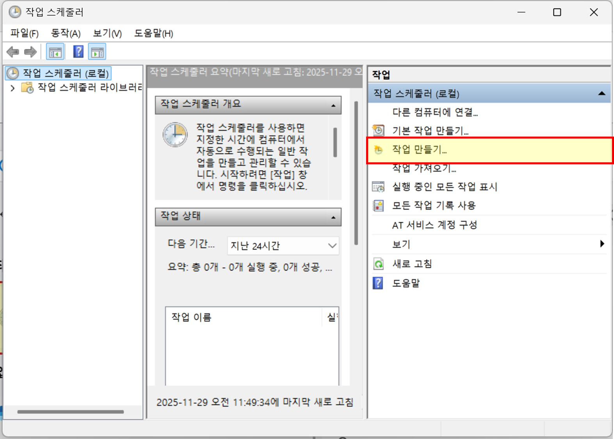
- 일반, 트리거, 동작 설정
- 일반: 이름 입력

- 트리거: 새로 만들기 → 설정
- 설정에서 원하는 주기와 시간을 지정하고 확인
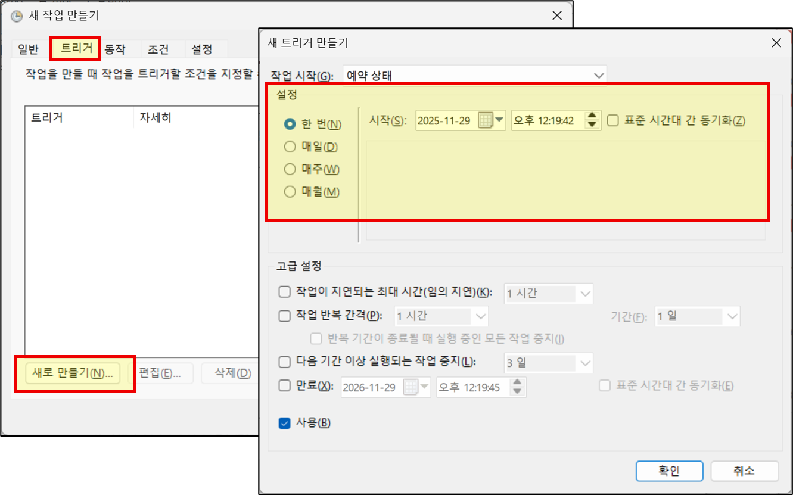
- 동작: 새로 만들기 → 설정

- 프로그램/스크립트에 내 컴퓨터 파이썬 프로그램 실행파일 경로
- 내 파이썬 프로그램 실행파일 위치 찾는 방법
(터미널 창에 다음의 명령어를 입력)명령어내 파이썬 프로그램 실행파일 위치 찾는 방법 (터미널 창에 다음의 명령어…python -c "import sys; print(sys.executable)"
- 인수 추가에 내가 실행할 파이썬 코드 파일 경로 입력
- 확장자가 py인것만 실행 가능(ipynb파일은 안됨)
4.2.py파일 바로가기 만들기
단축키를 이용하여 코드를 바로 실행시킬 수 있는 방법
바로가기 키가 바탕화면에 있을때만 실행됨
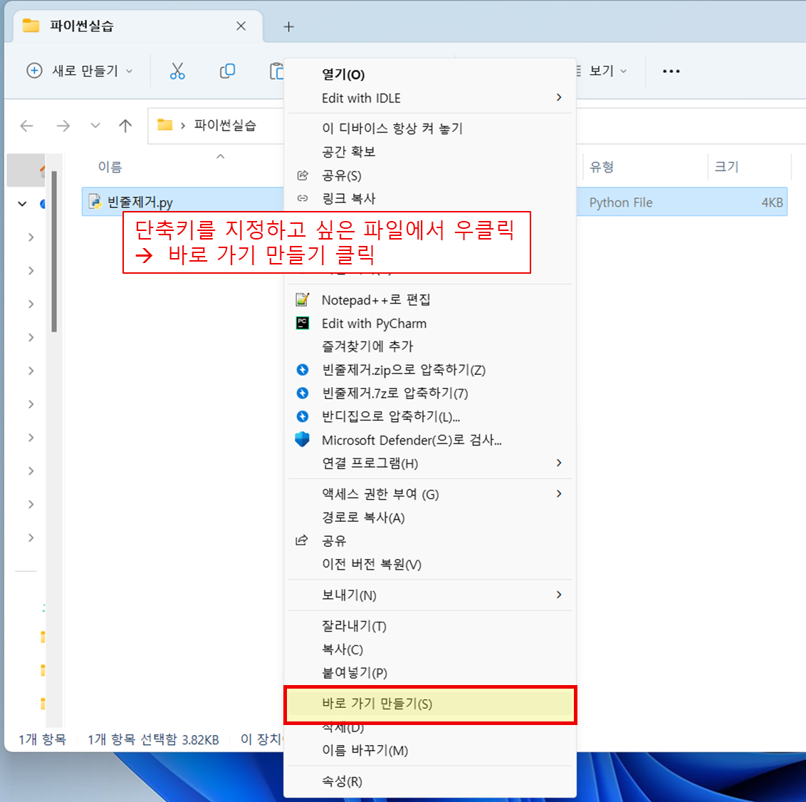
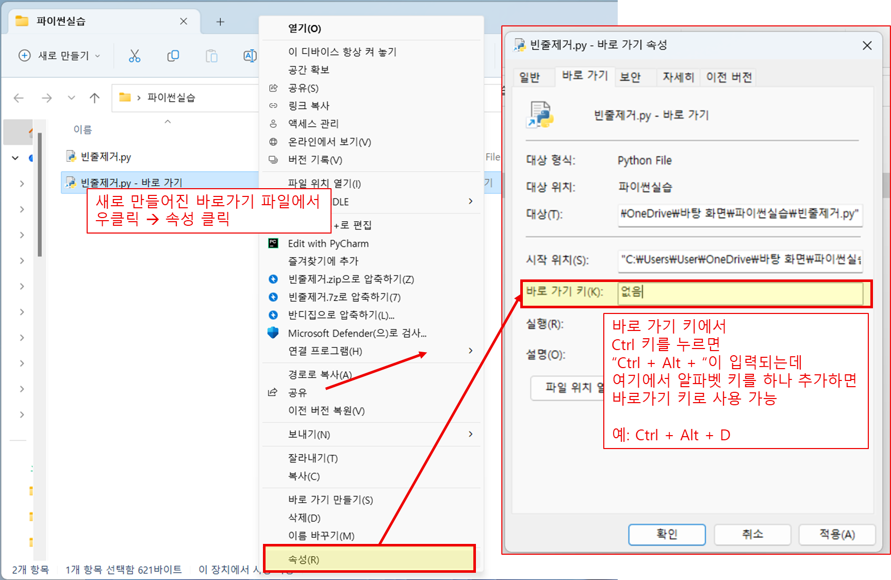
4.3내가 만든 코드 배포하기
1.PyInstaller 설치
- 터미널 창에 다음의 명령어를 입력하여 PyInstaller 설치
# 1. PyInstaller 패키지 설치 # - .py 파일을 .exe 실행파일로 변환해주는 도구 pip install pyinstaller
2.변환 명령어 입력
- 주의사항: 터미널이 지금 위치하고 있는 폴더(경로) 안에 변환할 .py 파일이 있어야 함
- VS코드 터미널을 열면, 화면 왼쪽 탐색기에 열려있는 폴더가 곧 터미널의 "현재 위치"가 됨
- 만약 변환하려는 .py 파일이 다른 폴더에 있다면, 아래처럼
cd명령어로 먼저 그 폴더로 이동해야 함명령어만약 변환하려는 .py 파일이 다른 폴더에 있다면, 아래처럼 cd 명령어…# 1. cd(change directory) : 터미널의 현재 위치를 지정한 폴더로 이동시키는 명령어 # 2. 예시) 작업 파일이 있는 폴더로 이동하고 싶을 때 cd C:\작업폴더경로 # 3. 이동 후 원하는 파일이 이 폴더 안에 있는지 확인 (있으면 파일명이 출력됨) dir myscript.py
- 본인의 상황에 맞는 코드를 입력하여 파일 변환
- 다음 예시 샘플에서
myscript.py대신 본인의 파일명을 입력하면 됨 - 변환 후에 exe파일은 현재 폴더에 dist 폴더 안에 저장
- 특별한 경우를 제외하고는 이 파일만 전달하면 사용 가능
- build 폴더와 같은 폴더에 생성된
.spec파일은 삭제해도 상관 없음
3.상황 별 변환 명령어
- 가장 간단한 변환 (py파일을 하나의 exe파일로 변환)
# 1. --onefile : 여러 파일로 흩어지지 않고 exe 하나로 묶어줌 pyinstaller --onefile myscript.py
- 콘솔창(까만 창)이 뜨지 않게 만들기
# 1. --onefile : exe 하나로 묶기 # 2. --noconsole : 실행 시 검은색 콘솔창을 띄우지 않음 # (단, print()로 찍던 로그나 에러 메시지도 안 보이게 되므로 # 디버깅 중에는 빼두고, 배포 직전에만 붙이는 것을 추천) pyinstaller --onefile --noconsole myscript.py
- 외부에서 참조해야 하는 파일(엑셀, 이미지 파일 등이 있을 때)
# 1. --add-data "원본파일경로;저장위치" 형식으로 외부 파일을 exe 안에 함께 포함시킴 # - Windows에서는 경로 구분자로 세미콜론(;) 사용 (Mac/Linux는 콜론(:)) # - "저장위치" 자리의 마침표(.)는 exe 내부의 "최상위 폴더"를 의미 # 2. 예시) 같은 폴더에 있는 template.xlsx 파일을 exe 안에 포함시키고 싶을 때 pyinstaller --onefile --add-data "template.xlsx;." myscript.py # 3. 참조할 파일이 여러 개라면 --add-data 옵션을 여러 번 반복해서 작성 pyinstaller --onefile --add-data "template.xlsx;." --add-data "logo.png;." myscript.py
⚠️ 이렇게 exe 안에 포함시킨 파일을 코드에서 불러올 때는, 아래 3번 항목에서 설명하는sys._MEIPASS 기준 경로를 사용해야 정상적으로 찾을 수 있습니다.
4.⚠️ 반드시 알아야 하는 문제 — exe의 "임시폴더" 함정
PyInstaller로 --onefile 옵션을 사용해 exe를 만들면,
실행할 때마다 내부 파일들이 시스템의 임시 폴더(temp)에 압축이 풀리는 방식으로 동작합니다.
이 구조를 모르고 코드를 짜면, 분명히 실행은 잘 되는데 결과 파일 저장이 이상한 곳에 되거나 아예 사라지는 문제가 생깁니다.
5.왜 이런 일이 생기나?
# 1. 문제가 되는 코드 예시 (상대경로 사용) # ↓ 이렇게 상대경로로 저장 경로를 잡으면 output_path = "./결과/결과파일.xlsx" # 2. .py로 실행할 때는 "현재 폴더" 기준으로 잘 저장되지만 # 3. exe로 실행하면 이 경로가 "임시 폴더" 기준으로 해석됨 # → 프로그램 종료 시 임시 폴더가 삭제되면서 결과물이 같이 사라짐
.py파일로 실행할 때: 상대경로가 현재 작업 폴더 기준.exe파일로 실행할 때: 상대경로가 임시 폴더(%TEMP%_MEIxxxxxx) 기준- 즉, 똑같은 코드인데 py로 테스트할 땐 멀쩡하다가 exe로 배포하면 저장이 안 되는 대표적인 원인
6.해결 방법 — 목적에 따라 기준 경로를 다르게 잡기
읽는 파일이냐 저장하는 파일이냐에 따라 사용해야 하는 기준 경로가 다릅니다.
| 목적 | 사용할 기준 경로 |
|---|---|
| exe 내부에 함께 번들된 파일 읽기 (설정파일, 템플릿 등) | sys._MEIPASS |
| 크롤링 결과, 로그 등 저장 | sys.executable 의 디렉토리 |
import sys
import os
# 1. exe로 실행 중인지 확인
# - PyInstaller로 빌드된 exe라면 sys 모듈에 frozen 속성이 생김
# - .py로 직접 실행할 때는 이 속성이 없음
if getattr(sys, 'frozen', False):
# 2. [읽기용] exe 안에 함께 패키징된 파일을 읽을 때 기준 경로
# - 실행할 때마다 새로 생성되는 임시 폴더 경로
BASE_DIR = sys._MEIPASS
# 3. [저장용] 결과 파일을 저장할 때 기준 경로 ← 이게 핵심!
# - exe 파일이 실제로 놓여 있는 폴더
# - 프로그램이 꺼져도 사라지지 않는 고정된 위치
EXE_DIR = os.path.dirname(sys.executable)
else:
# 4. .py 파일로 직접 실행할 때는 두 경로를 동일하게 처리
# - 현재 .py 파일이 있는 폴더 기준
BASE_DIR = EXE_DIR = os.path.dirname(os.path.abspath(__file__))
# 5. 결과 저장은 항상 EXE_DIR 기준으로 절대경로 조합해서 사용
output_path = os.path.join(EXE_DIR, "결과", "결과파일.xlsx")
# 6. 저장할 폴더가 없으면 자동으로 만들어줌 (없으면 저장 시 에러 발생)
os.makedirs(os.path.dirname(output_path), exist_ok=True)7.엑셀(xlwings) 등 외부 프로그램을 다룰 때 추가 주의사항
xlwings처럼 Windows의 엑셀 프로그램을 직접 제어하는 라이브러리를 쓰는 경우,
절대경로를 넘겨줘도 exe 내부에서 "현재 작업 폴더(CWD)"를 임시 폴더로 착각해서
엉뚱한 곳을 참조하는 경우가 있습니다.
def main():
# 1. 프로그램 시작하자마자 작업 디렉터리를 exe 위치로 강제 고정
# - PyInstaller exe는 실행 시 CWD가 임시 폴더로 잡히는 경우가 있음
# - xlwings(COM 객체) 등 일부 라이브러리가 이 CWD를 기준으로
# 상대경로를 잘못 해석하는 문제를 예방
os.chdir(EXE_DIR) # ← 이 한 줄로 대부분 해결됨
# 이하 기존 코드 동일
...8.에러가 나도 원인을 알 수 있게 만들기 (선택이지만 강력 추천)
-noconsole옵션을 쓰면 에러가 나도 콘솔창이 바로 닫혀버려서 원인 파악이 불가능합니다.
아래처럼 에러를 파일로 남겨두면 나중에 문제가 생겨도 바로 확인할 수 있습니다.
if __name__ == "__main__":
try:
# 1. 실제 프로그램 실행
main()
except Exception as e:
import traceback
from datetime import datetime
# 2. exe(또는 py) 파일 옆에 error_log.txt로 에러 내용 저장
log_path = os.path.join(EXE_DIR, "error_log.txt")
with open(log_path, "w", encoding="utf-8") as f:
f.write(f"[에러 발생 시각] {datetime.now().strftime('%Y-%m-%d %H:%M:%S')}\n\n")
# 3. 전체 에러 스택(어디서 어떤 에러가 났는지)까지 통째로 저장
f.write(traceback.format_exc())
print(f"❌ 에러 발생 - {log_path} 파일을 확인하세요")
input("엔터를 누르면 종료...") # 4. 콘솔창이 바로 안 닫히도록 대기9.✅ 핵심 요약
-onefile로 만든 exe는 실행될 때마다 임시 폴더에 내용이 풀리고, 종료되면 그 임시 폴더는 삭제됨- 상대경로(
./data/...)를 그대로 쓰면 저장 위치가 임시 폴더가 되어버려 결과물이 사라짐 - 읽기는
sys._MEIPASS, 저장은sys.executable의 디렉토리 기준으로 절대경로를 만들어 사용 - xlwings 등 외부 프로그램 제어 라이브러리를 쓴다면
os.chdir(EXE_DIR)로 작업 디렉터리도 같이 고정 -noconsole배포 전에는 에러 로그를 파일로 남기는 코드를 넣어두면 문제 생겼을 때 바로 원인 파악 가능
나의 이야기
나의 이야기
나와 나눈 대화와 기억을 바탕으로, "나를 가장 잘 표현할 수 있는 단일 한자 한 글자"를 중심으로 한 아트 포스터를 제작해줘
자료
정답 프롬프트 내려받기
교안에 나온 프롬프트 원문을 한 파일로 모아 둠 — 직접 써 본 뒤 비교용